Contenido
Páginas de la guía
Cada tema tiene su página y las de práctica van aparte. A la izquierda tienes siempre el índice con todas las páginas y el buscador encuentra texto en todas. Si prefieres un solo documento, está la guía completa. Para estudiar sin pantalla, tienes dos PDF: la guía completa (unas 240 páginas, 12 MB) y el formulario de una hoja.
Empezar
Empieza aquí si partes de cero
La asignatura en un párrafo
Un amplificador recibe una señal pequeña y entrega una copia más grande, y para eso toma energía de una fuente de alimentación. En Electrónica Analógica respondes a tres preguntas. ¿Cuánto amplifica? Eso es la ganancia (unidades 1 a 4). ¿Qué se pierde porque los componentes no son ideales? Eso es el operacional real y los transistores (unidades 5 y 7). ¿Hasta qué frecuencia sigue funcionando? Eso son los diagramas de Bode, los filtros y la respuesta en frecuencia (unidades 6 y 8).
El camino, en orden. Cada unidad usa lo de la anterior:
Lo que necesitas saber de antes
- Ley de Ohm y Kirchhoff. Casi todo problema de operacionales se resuelve con una ecuación de corrientes en un nudo.
- Divisor de tensión: $V_o=V_i\,\dfrac{R_2}{R_1+R_2}$.
- Impedancias: $Z_R=R$, $Z_C=\dfrac1{j\omega C}$, $Z_L=j\omega L$. Un condensador es un circuito abierto en continua y un cortocircuito a frecuencia alta.
- Números complejos: módulo, fase y $e^{j\theta}=\cos\theta+j\sin\theta$.
- Logaritmos decimales: $\log(ab)=\log a+\log b$ y $\log a^x=x\log a$.
Cómo usar esta guía
- Lee el recuadro «Desde cero» de cada unidad.
- Juega con el simulador hasta que puedas predecir el resultado antes de mover un control.
- Haz el problema de examen resuelto tapando la solución y despliega solo el paso en el que te atascas.
- Marca la unidad en «Tu progreso».
Notación general de toda la asignatura 16 símbolos
| Símbolo | Qué significa | Unidades · ejemplo |
|---|---|---|
| $A_v,\ A_{CL}$ | Ganancia de tensión; la segunda es en lazo cerrado (con realimentación) | adimensional o dB |
| $A_{OL}$ | Ganancia del operacional en lazo abierto, sin realimentar | 100 000 a 1 000 000 |
| $Z_{in},\ Z_{out}$ | Impedancia de entrada y de salida | Ω |
| $V^+,\ V^-$ | Tensión en la entrada no inversora y en la inversora | V |
| $V_d,\ V_c$ | Tensión diferencial $V^+-V^-$ y de modo común $\frac{V^++V^-}2$ | V |
| $\pm V_{sat}$ | Tensiones de saturación de la salida, 1 a 1,5 V por debajo de la alimentación | ±13,6 V con ±15 V |
| $SR$ | Slew rate: máxima velocidad de cambio de la salida | V/µs |
| $GBW,\ f_1$ | Producto ganancia por ancho de banda. $f_1$ es la frecuencia donde la ganancia en lazo abierto vale 1 | Hz; 1 MHz para el 741 |
| $CMRR$ | Razón de rechazo al modo común $=\left|\frac{A_d}{A_c}\right|$ | dB; 90 dB típico |
| $I_B,\ I_{io},\ V_{io}$ | Corriente de polarización, de asimetría y tensión de asimetría de entrada (offset) | nA, nA, mV |
| $s=j\omega$ | Variable de Laplace evaluada en régimen senoidal | $\omega=2\pi f$ rad/s |
| $G(j\omega)$ | Ganancia compleja o función de transferencia $U_s/U_e$ | módulo y fase |
| $\omega_c,\ f_c$ | Frecuencia de corte (−3 dB) | $f_c=\frac1{2\pi RC}$ en un RC |
| $f_{ci},\ f_{cs}$ | Frecuencia de corte inferior y superior de un amplificador | Hz |
| $g_m,\ r_\pi$ | Transconductancia y resistencia de entrada del transistor en pequeña señal | $g_m=\frac{I_C}{V_T}$, $V_T\approx25$ mV |
| dB | Decibelio: $20\log|A_v|$ para tensión o corriente, $10\log A_p$ para potencia | ×10 = +20 dB |
Ojo con el 20 y el 10
En decibelios de tensión multiplicas por 20 y en decibelios de potencia por 10. La potencia depende del cuadrado de la tensión, y por eso las dos fórmulas dan el mismo número de dB para el mismo circuito.
Simulador · de razón a decibelios
Empezar
Cómo es el examen
Esta sección sale de la guía docente 2026-27 y de los exámenes y entregas que tienes en tu carpeta.
Evaluación (guía docente)
- 80 % exámenes escritos (parciales).
- 10 % informes de prácticas.
- 10 % evaluación continua: problemas propuestos entregables, con fecha fija. Son 8 h de trabajo fuera del horario lectivo.
- Las 6 prácticas de laboratorio son obligatorias. Se califican APTO / NO APTO y sin ellas no apruebas.
Reglas que conviene saber
- Para presentarte al examen tienes que estar matriculado.
- Si repites una actividad de continua en la evaluación final, renuncias a la nota de continua de esa actividad.
- Las prácticas se guardan un máximo de dos cursos.
- Trabajo autónomo previsto: 106 h de las 150 h del curso.
Qué ha caído en los exámenes de tu carpeta
| Convocatoria | Tema de los ejercicios |
|---|---|
| Feb 2013 | Dos etapas con operacional y condensadores: función de transferencia $G(j\omega)$ y Bode. |
| Jul 2016 | Dos operacionales con un condensador: impedancia de entrada $V_i/I_i$ y decidir si es resistiva, capacitiva o inductiva. |
| Feb 2020 | Comparador con histéresis y tensión de referencia, alimentado a +12 V. Resuelto aquí. |
| Sep 2020 | Operacional no inversor con RC: valor de R2, $G(j\omega)$ y Bode. Resuelto aquí. |
| P1 Nov 2023 | (1) $G(j\omega)$ y Bode con denominador de segundo grado, (2) ganancia y saturación con entradas de 21 V y 30 V, (3) problema de 5,5 puntos: inversor con operacional real (slew rate, GBW, tolerancias, corriente máxima). Resuelto aquí. |
| P1 Ene 2024 | (1) Condición de resistencias para una fuente de corriente controlada por tensión, (2) $G(j\omega)$ y Bode, (3) problema: limitador con zéners y referencia de −5 V, y amplificador diferencial con CMRR de 70 dB. Resuelto aquí. |
| EC01 y EC02 | Entregas de evaluación continua: fuente regulable con zéner, restador, filtro con $G(j\omega)$. Resueltos aquí. |
El patrón
Los dos primeros parciales que tienes (Nov 2023 y Ene 2024) tienen tres bloques: un ejercicio de 2 a 2,5 puntos con un circuito de operacional, otro de 2 a 2,5 puntos con Bode o saturación, y un problema de 5,5 puntos sobre el operacional real (SR, GBW, CMRR, tolerancias, corriente de salida). Dedica el tiempo fuerte a las unidades 2, 3, 5 y 6.
En tu carpeta no hay ningún examen resuelto de transistores, realimentación, osciladores o potencia. Esas partes las explico con las diapositivas de la unidad 8 y con el programa oficial. Consulta con el profesor qué unidades entran en cada parcial este curso.
Empezar
Tu progreso
Marca cada punto cuando puedas hacer su ejercicio de examen sin mirar la solución. Se guarda en este navegador.
0 de 10 puntos
Tema 1 · Diapositivas «Introducción a los amplificadores»
Amplificadores y sus parámetros
Desde cero
Un amplificador es una caja con una entrada y una salida. Lo que le importa a quien lo usa son tres números: cuánto multiplica la señal (ganancia), cuánta carga le supone a la fuente que lo alimenta (impedancia de entrada) y cuánto se hunde su salida cuando le conectas una carga (impedancia de salida). Si la fuente tiene resistencia interna y la carga es finita, parte de la señal se pierde en dos divisores de tensión, uno a la entrada y otro a la salida.
Cómo se modela cualquier amplificador
Desde fuera, un amplificador se describe con tres números: ganancia, impedancia de entrada e impedancia de salida. Lo que hay dentro (transistores, resistencias) da igual. Se dibuja siempre igual: a la izquierda una resistencia $Z_{in}$ que representa lo que «consume» de la fuente, y a la derecha una fuente controlada $A\cdot v_e$ en serie con $Z_o$ (equivalente de Thévenin, para señales de tensión) o en paralelo (Norton, para señales de corriente).
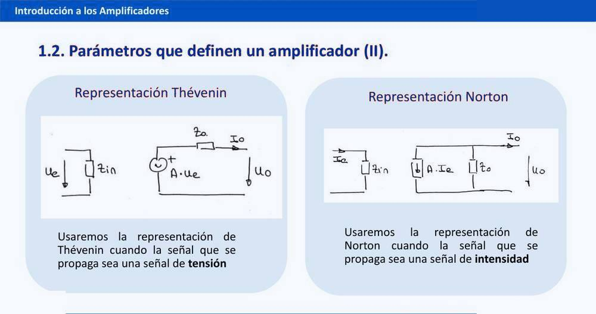
Los cuatro tipos de amplificador
Según qué magnitud entra y cuál sale hay cuatro modelos. Para señales de tensión se usa la representación de Thévenin y para señales de corriente, la de Norton.
| Tipo | Entrada → salida | Ganancia | $Z_{in}$ ideal | $Z_{out}$ ideal |
|---|---|---|---|---|
| Tensión | tensión → tensión | $A_v=\dfrac{v_o}{v_i}$ | $\infty$ | 0 |
| Corriente | corriente → corriente | $A_i=\dfrac{i_o}{i_i}$ | 0 | $\infty$ |
| Transimpedancia | corriente → tensión | $R_m=\dfrac{v_o}{i_i}$ (Ω) | 0 | 0 |
| Transadmitancia | tensión → corriente | $G_m=\dfrac{i_o}{v_i}$ (S) | $\infty$ | $\infty$ |
Ganancia real con fuente y carga (amplificador de tensión). Con $A_{v0}$ la ganancia en vacío:
$$\frac{v_o}{v_s}=\underbrace{\frac{Z_{in}}{R_s+Z_{in}}}_{\text{divisor de entrada}}\cdot A_{v0}\cdot\underbrace{\frac{R_L}{Z_{out}+R_L}}_{\text{divisor de salida}}$$Para que casi nada se pierda necesitas $Z_{in}\gg R_s$ y $Z_{out}\ll R_L$. Por eso el amplificador de tensión ideal tiene $Z_{in}=\infty$ y $Z_{out}=0$.
Simulador · cuánta señal se pierde en los divisores
Cómo se calcula una impedancia de entrada y una de salida, paso a paso
La impedancia de entrada mide cuánta corriente toma el circuito de la fuente: $Z_{in}=\dfrac{u_e}{i_e}$. La de salida es la impedancia de Thévenin vista desde los terminales de la carga. Se calcula así:
- Dibuja el circuito y marca los dos terminales de salida donde se conecta la carga. Quita la carga.
- Apaga las fuentes independientes (tensión a cortocircuito, corriente a circuito abierto). Las fuentes controladas no se apagan.
- Simplifica las resistencias que quedan, mirando desde los terminales hacia dentro.
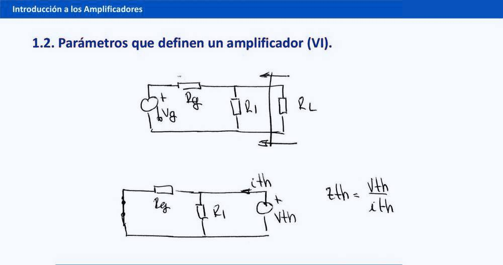
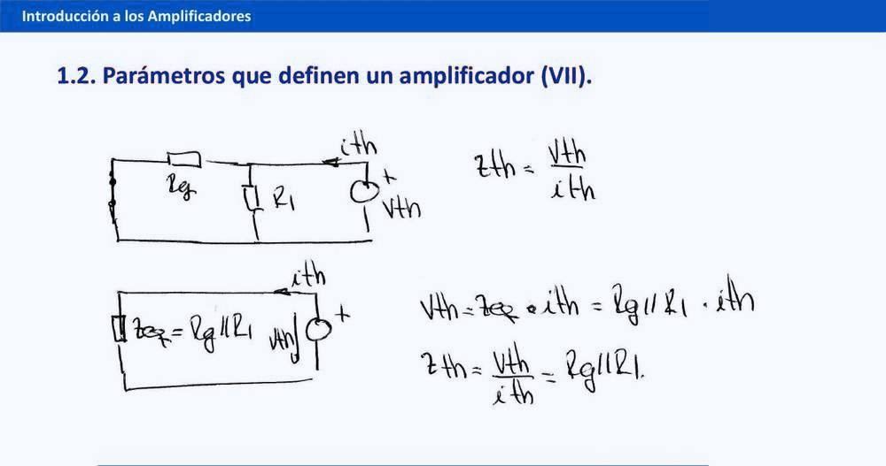
Ejercicio de la clase: calcular $Z_o$ vista desde los terminales de $R_L$ en el modelo del transistor bipolar. La fuente de corriente $h_{fe}\,i_b$ depende de $i_b$, pero al apagar la fuente $V_g$ la corriente $i_b$ vale 0 y la fuente controlada queda como circuito abierto. Lo que queda visible desde la salida es $R_C$ en serie con $R_D$.
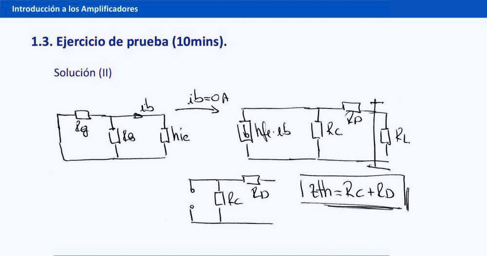
Cómo se calcula $Z_{out}$
- Apaga las fuentes independientes de la señal de entrada (las de tensión en cortocircuito, las de corriente en circuito abierto). Las fuentes controladas se quedan.
- Quita la carga y conecta una fuente de prueba $v_t$ en los terminales de salida.
- Calcula la corriente $i_t$ que entra y haz $Z_{out}=\dfrac{v_t}{i_t}$.
La alternativa es medir la tensión en vacío $v_{oc}$ y la corriente en cortocircuito $i_{sc}$ y dividir: $Z_{out}=\dfrac{v_{oc}}{i_{sc}}$.
Ejemplo: ganancia total de un amplificador con fuente y carga comprobado
Datos: $R_s=1$ kΩ, $Z_{in}=9$ kΩ, $A_{v0}=100$, $Z_{out}=1$ kΩ, $R_L=3$ kΩ.
$$\frac{v_o}{v_s}=\frac{9}{1+9}\cdot100\cdot\frac{3}{1+3}=0{,}9\cdot100\cdot0{,}75=67{,}5\quad(36{,}6\ \text{dB})$$Se pierde el 10 % a la entrada y el 25 % a la salida. Con la carga de 3 kΩ, bajar $Z_{out}$ a 100 Ω subiría la ganancia a $0{,}9\cdot100\cdot0{,}968=87{,}1$.
Cómo se calcula un amplificador de tensión completo
El método de la asignatura es siempre el mismo: dibujar el amplificador como tres bloques, fuente (con su $R_g$), modelo del amplificador ($Z_{in}$, $A_u\cdot V_{in}$, $Z_o$) y carga ($R_L$). Después aplicar dos divisores de tensión, uno en la entrada y otro en la salida. Es la fórmula del recuadro de arriba.
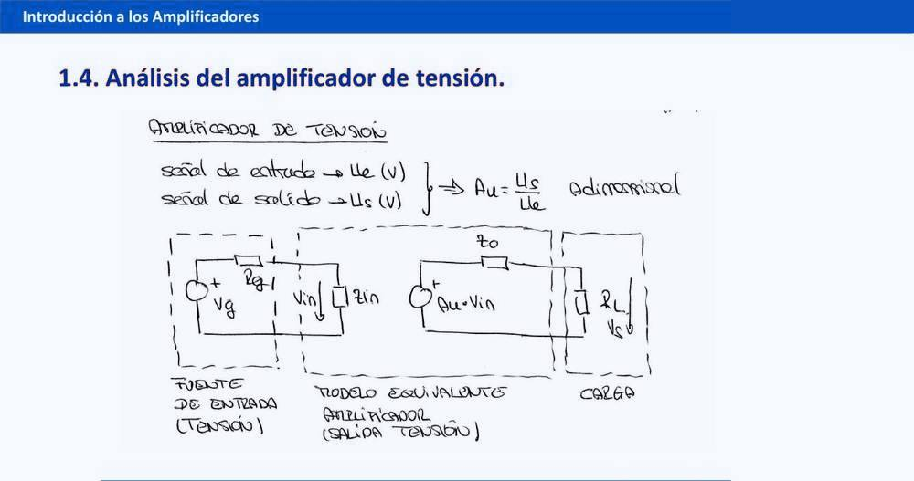
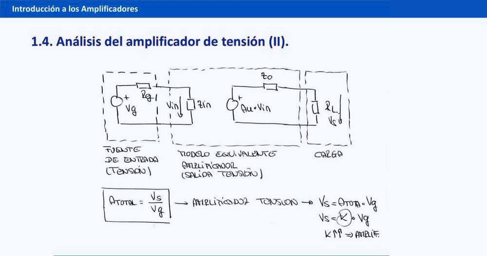
▶Vídeos para reforzar este tema
- Clase 7 Electrónica I: Modelo de circuito de un amplificador El modelo con resistencia de entrada, de salida y fuente dependiente.
- Como saber la Impedancia entrada y salida amplificador no inversor (Clase 62.2) Cómo sacar $Z_i$ y $Z_o$ de un no inversor.
Los he elegido por su título y su tema, sin haberlos visto: comprueba que el enfoque coincide con el de tu profesor. Se abren en YouTube.
Tema 2 · AO ideal
El amplificador operacional ideal
Desde cero
El amplificador operacional (AO) es un amplificador diferencial con una ganancia enorme: $v_o=A_{OL}(V^+-V^-)$. Con $A_{OL}$ de 100 000 o más, cualquier diferencia mínima entre las dos entradas llevaría la salida a la saturación. Por eso casi siempre se usa con realimentación negativa: se devuelve parte de la salida a la entrada inversora y el propio circuito se encarga de mantener $V^-\approx V^+$. De ese truco salen las dos reglas que resuelven el 90 % de los problemas.
Las dos reglas del AO ideal con realimentación negativa
- Corrientes de entrada nulas: $i^+=i^-=0$ (impedancia de entrada infinita).
- Entradas a la misma tensión: $V^+=V^-$ (ganancia infinita). Si $V^+$ está a masa, $V^-$ es una tierra virtual: está a 0 V sin que fluya corriente a tierra.
Y a la salida, $Z_{out}=0$: da la tensión que haga falta, hasta saturar en $\pm V_{sat}$.
Cuándo NO valen
Sin realimentación, o con realimentación positiva (hacia la entrada no inversora), el AO no mantiene $V^+=V^-$. La salida salta a $+V_{sat}$ o $-V_{sat}$ según el signo de $V^+-V^-$. Es el caso de los comparadores (unidad 4). Antes de aplicar la regla 2, mira siempre a qué entrada llega la realimentación.
Los terminales del operacional real, para saber qué estás mirando
Un AO como el 741 es un chip de 8 patillas. Para el examen te bastan cinco: dos entradas (patillas 2 y 3), la salida (6) y las dos alimentaciones (7 y 4, típicamente +15 V y −15 V). La alimentación fija el máximo de la salida.
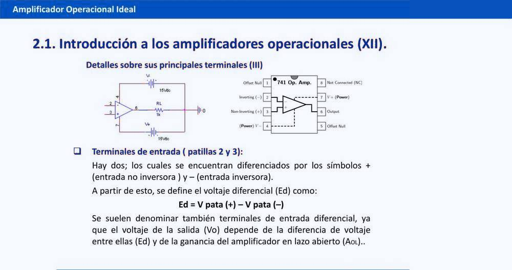
Qué significa «ideal» y qué se deduce
Ideal significa tres cosas: impedancia de entrada infinita, impedancia de salida nula y ganancia infinita. De ahí salen las dos reglas del recuadro «Desde cero».
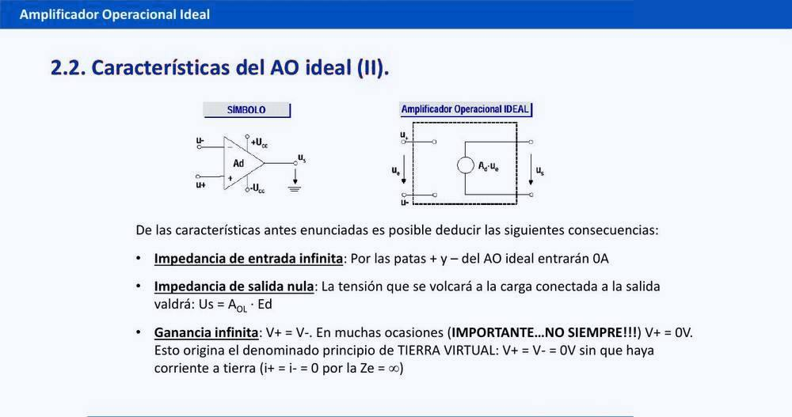
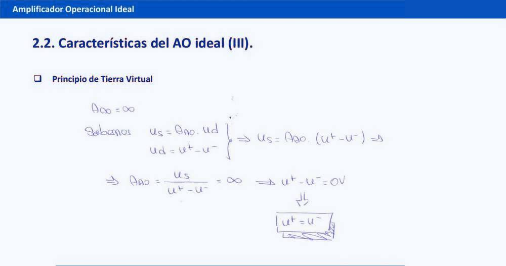
Procedimiento para cualquier circuito
- Comprueba que hay realimentación negativa. Si es así, iguala $V^+=V^-$.
- Escribe la ecuación de corrientes (Kirchhoff) en el nudo de la entrada inversora, con $i^-=0$.
- Despeja $V_o/V_i$.
- Comprueba que el resultado no supera $\pm V_{sat}$. Si lo supera, la salida es $\pm V_{sat}$.
Modo diferencial y modo común
Dos señales idénticas aplicadas a las dos entradas son modo común. Un AO ideal las cancela. Una señal que se aplica entre las entradas es modo diferencial y es la que se amplifica. Definiciones: $V_d=V^+-V^-$ y $V_c=\dfrac{V^++V^-}2$. En un AO real queda un pequeño $A_c$ (unidad 5).
Simulador · inversor y no inversor con saturación
Realimentación negativa: por qué funciona
Sin realimentación (lazo abierto) el AO es un comparador: si $V^->V^+$ la salida va a $-V_{CC}$ y si $V^-<V^+$ va a $+V_{CC}$. Al llevar una fracción de la salida a la entrada inversora, el circuito se «autocorrige» hasta que $V^-=V^+$. Con realimentación positiva ocurre lo contrario, el error se agranda y la salida satura.
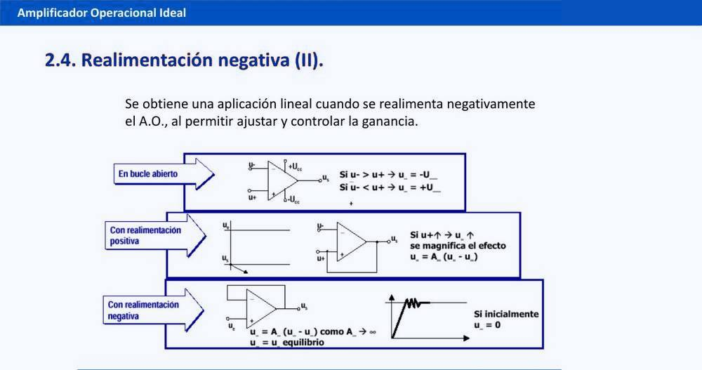
▶Vídeos para reforzar este tema
- Funcionamiento de un amplificador operacional «inversor y no inversor» Los dos montajes básicos.
- Explicación amplificador operacional no inversor (realimentación negativa) Por qué con realimentación negativa $V^+=V^-$.
Los he elegido por su título y su tema, sin haberlos visto: comprueba que el enfoque coincide con el de tu profesor. Se abren en YouTube.
Tema 3 · Aplicaciones lineales
Aplicaciones lineales del AO
Desde cero
Todas las aplicaciones lineales son variaciones de un mismo circuito: una impedancia de entrada $Z_1$ y una impedancia de realimentación $Z_2$ alrededor de un operacional. Con $V^-=0$ (inversor) la ganancia es $-Z_2/Z_1$. Si $Z_1$ y $Z_2$ son resistencias, amplificas; si una es un condensador, integras o derivas. Aprende la receta una vez y las tienes todas.
| Circuito | Ganancia o salida | Notas |
|---|---|---|
| Inversor | $\dfrac{V_o}{V_i}=-\dfrac{Z_2}{Z_1}=-\dfrac{R_2}{R_1}$ | $Z_{in}=R_1$. Si $R_2<R_1$ atenúa. |
| No inversor | $\dfrac{V_o}{V_i}=1+\dfrac{Z_2}{Z_1}$ | Siempre ≥ 1 y $Z_{in}$ muy alta. |
| Seguidor | $V_o=V_i$ | $Z_2=0$ o $Z_1=\infty$. Adapta impedancias. |
| Sumador inversor | $V_o=-R_f\left(\dfrac{V_1}{R_1}+\dfrac{V_2}{R_2}+\dots\right)$ | Superposición: cada entrada es un inversor. |
| Restador | $V_o=\dfrac{R_2}{R_1}\,(V_2-V_1)$ | Con $R_2/R_1$ iguales en las dos ramas. |
| Integrador | $V_o(t)=-\dfrac1{RC}\displaystyle\int_0^tV_i\,dt-V_C(0)$ | $\dfrac{V_o}{V_i}=-\dfrac1{j\omega RC}$ |
| Diferenciador | $V_o=-RC\,\dfrac{dV_i}{dt}$ | $\dfrac{V_o}{V_i}=-j\omega RC$. Amplifica el ruido. |
| Cambiador de fase | $\dfrac{V_o}{V_i}=\dfrac{1-j\omega RC}{1+j\omega RC}$ | Ganancia 1, desfase $-2\arctan(\omega RC)$. |
| Instrumentación | $V_o=\left(1+\dfrac{2R}{R_g}\right)(V_2-V_1)$ | Con la etapa restadora de ganancia 1. Alta $Z_{in}$ y buen CMRR. |
El restador y la ganancia diferencial
La fórmula $\frac{R_2}{R_1}(V_2-V_1)$ exige que las resistencias de las dos ramas estén emparejadas. Si no lo están, aparece una componente de modo común. Es lo que se pregunta en el problema de CMRR de Enero 2024.
Cada circuito paso a paso con las diapositivas
Para cualquier circuito lineal se hace lo mismo: (1) supón AO ideal con realimentación negativa, así que $V^+=V^-$ y $i^+=i^-=0$; (2) escribe la ecuación de corrientes en el nudo de la entrada $-$ (o en $+$, según el circuito); (3) despeja $V_o/V_i$.
Inversor
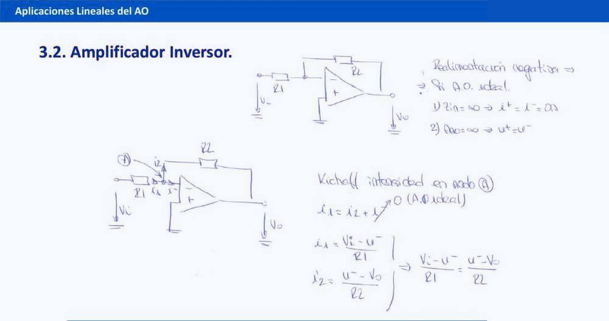
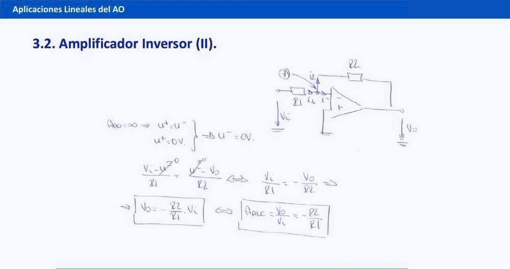
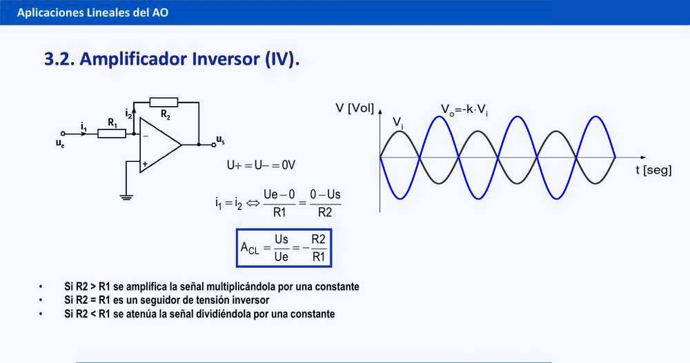
R_1 amp" loading="lazy" width="1000" height="563">No inversor
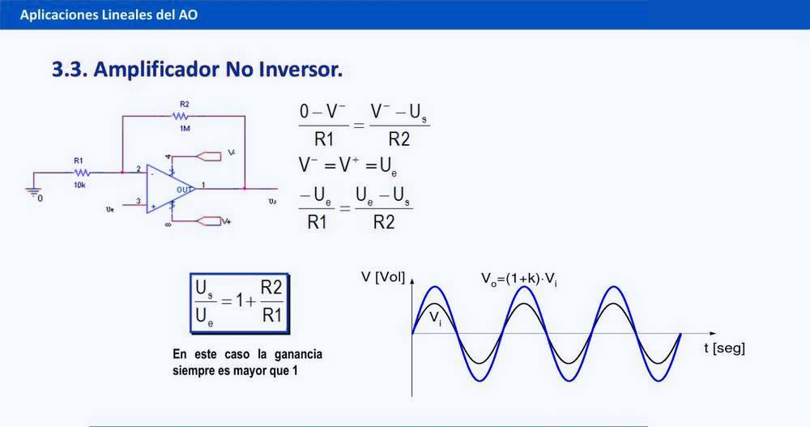
Seguidor de tensión
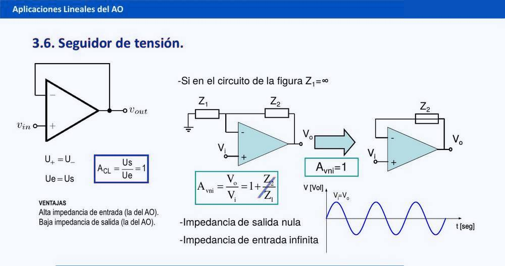
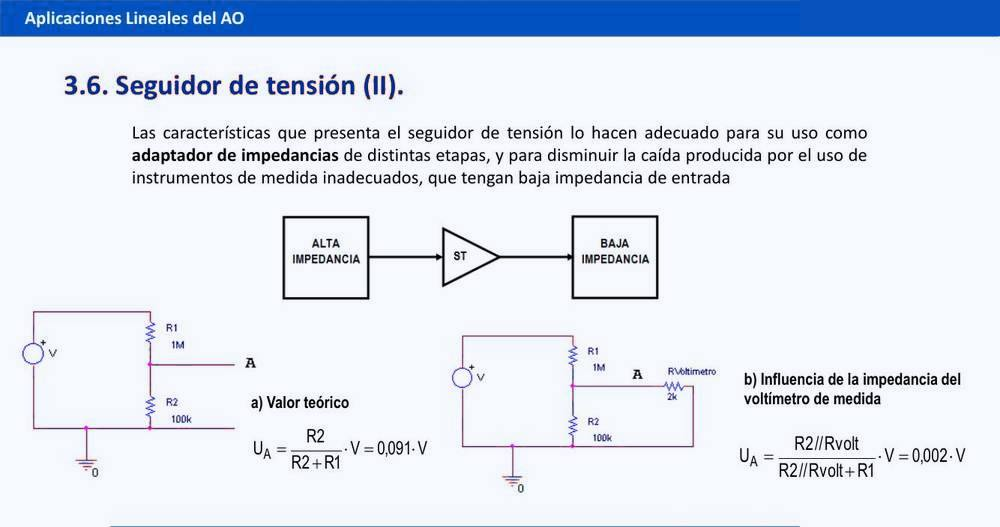
Sumador y restador
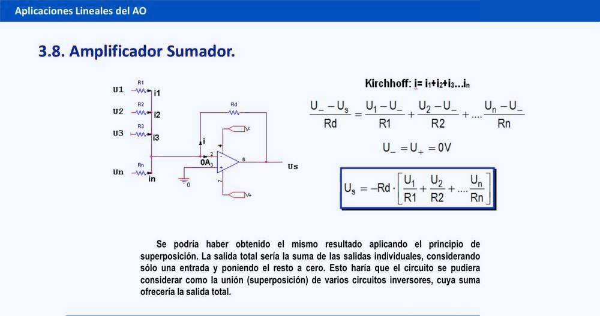
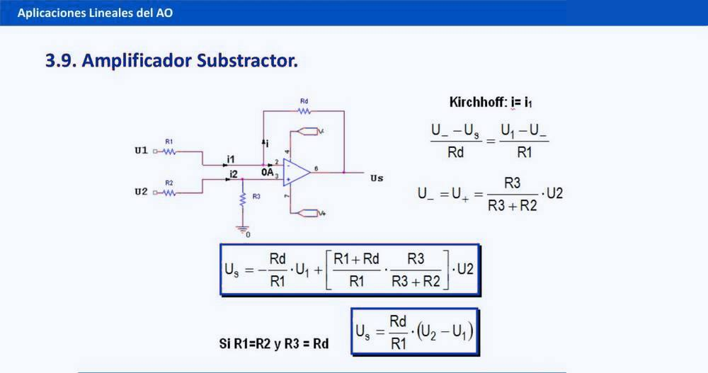
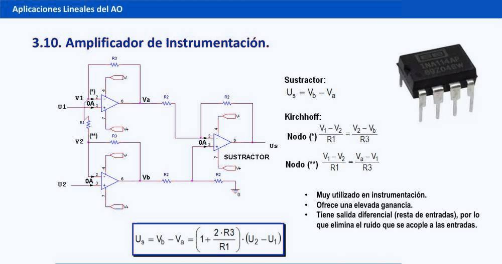
Integrador, diferenciador y cambiador de fase
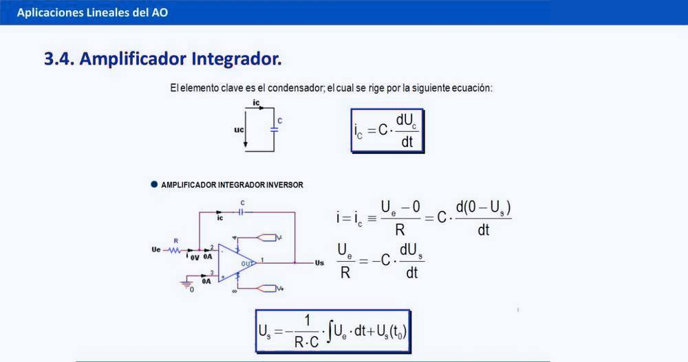
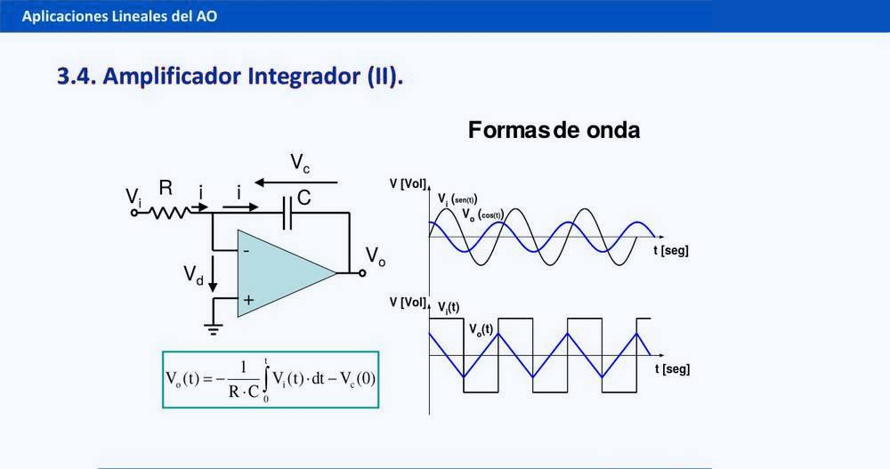
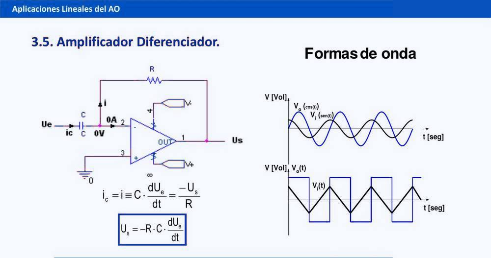
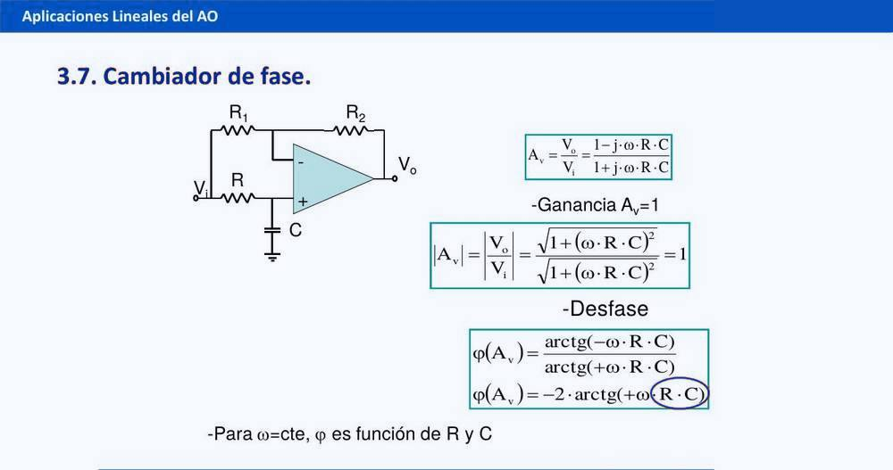
Simulador · integrador con entrada cuadrada o senoidal
Diseño 1: ganancia de 42 con resistencia de entrada muy grande diapositiva U3, 3.11
La configuración no inversora tiene $Z_{in}$ muy alta. La ganancia pide $1+\frac{R_2}{R_1}=42\Rightarrow\frac{R_2}{R_1}=41$. Por ejemplo $R_1=1$ kΩ y $R_2=41$ kΩ. Con valores normalizados, 39 kΩ + 2,2 kΩ en serie da $1+41{,}2=42{,}2$, un error del 0,5 %.
Diseño 2: convertir 20 a 250 mV en 0 a 5 V diapositiva U3, 3.11
Hay que restar un desplazamiento y multiplicar: $V_o=G\,(V_i-20\ \text{mV})$, con $G=\dfrac{5\ \text{V}}{250-20\ \text{mV}}=\dfrac{5}{0{,}23}=21{,}7$.
Con un restador de ganancia $R_2/R_1=21{,}7$ (por ejemplo $R_1=10$ kΩ y $R_2=217$ kΩ, con un ajuste) y una referencia de 20 mV en la otra entrada, sacada de un divisor y un seguidor. Comprobación: $V_i=20$ mV da 0 V y $V_i=250$ mV da $21{,}7\cdot0{,}23=5$ V.
Aplicación industrial: regulador PID con operacionales diapositiva U3, 3.12
El PID continuo $u(t)=K_pe+K_D\frac{de}{dt}+K_I\int e\,dt$ es $U(s)=\left(K_p+K_Ds+\frac{K_I}{s}\right)E(s)$. Se monta con tres ramas en paralelo y un sumador.
- Proporcional: inversor, $K_p=\dfrac{R_2}{R_1}$.
- Integral: integrador, $K_I=\dfrac1{R_iC_i}$.
- Derivativo: diferenciador, $K_D=R_dC_d$.
Cada rama invierte la señal, y el sumador inversor final la devuelve con el signo correcto.
▶Vídeos para reforzar este tema
- 02 Amplificadores Operacionales: Inversor, No Inversor, Sumador, e Integrador Inversor, sumador e integrador seguidos.
- AMPLIFICADOR DIFERENCIAL CON OPERACIONAL El restador, que sale en el pesaje y en el sensor.
- Derivador e integrador con amplificadores operacionales Para el derivador del examen de noviembre de 2021.
Los he elegido por su título y su tema, sin haberlos visto: comprueba que el enfoque coincide con el de tu profesor. Se abren en YouTube.
Tema 4 · Aplicaciones no lineales
Comparadores, Schmitt y osciladores de relajación
Desde cero
Hasta ahora el operacional trabajaba en zona lineal: la realimentación negativa lo mantenía con $V^+=V^-$. En las aplicaciones no lineales se hace lo contrario. O no hay realimentación, o la realimentación llega a la entrada no inversora (positiva). Entonces la salida no puede quedarse en un valor intermedio y salta a una de las dos saturaciones, $+V_{sat}$ o $-V_{sat}$. Por eso estos circuitos deciden («¿es mayor o menor?») en vez de amplificar.
Las diapositivas de la carpeta no incluyen un tema 4 con ese nombre, así que esta unidad está escrita a partir de la guía docente y de los problemas de examen resueltos. Los resultados se han comprobado con las fórmulas de abajo.
El comparador, el circuito más simple
Sin realimentación, la ganancia $A_{OL}$ es tan grande que una diferencia de microvoltios ya satura la salida:
$$V_o=\begin{cases}+V_{sat}&V^+>V^-\\-V_{sat}&V^+<V^-\end{cases}$$Con $V^-$ conectada a una tensión de referencia $V_{ref}$ y la señal en $V^+$, tienes un detector de nivel. Con $V_{ref}=0$ es un detector de paso por cero: convierte una senoidal en una cuadrada.
El problema del comparador simple
Si la señal tiene ruido y está cerca del umbral, la salida «tiembla» entre $+V_{sat}$ y $-V_{sat}$, porque cada pequeño cruce del umbral produce un salto. La solución es la histéresis: dar al comparador dos umbrales distintos, uno para subir y otro para bajar.
El disparador de Schmitt (comparador con histéresis)
Se añade realimentación positiva: una fracción de la salida vuelve a la entrada $+$. Así, cuando la salida salta, también se mueve el umbral. En la configuración inversora la señal entra por $-$ y el divisor $R_1$–$R_2$ está en la rama $+$.
- Calcula la tensión en $V^+$ para cada estado de la salida. Con $R_1$ entre $V^+$ y la referencia $V_{ref}$ y $R_2$ entre la salida y $V^+$, el divisor da $V^+=V_{ref}+(V_o-V_{ref})\,\beta$, con $\beta=\dfrac{R_1}{R_1+R_2}$.
- Con la salida alta ($V_o=+V_{sat}$): $V_{TH}=V_{ref}(1-\beta)+\beta V_{sat}$. La salida baja cuando $V_i$ supera este umbral.
- Con la salida baja ($V_o=-V_{sat}$): $V_{TL}=V_{ref}(1-\beta)-\beta V_{sat}$. La salida vuelve a subir cuando $V_i$ cae por debajo de este umbral.
- El ancho de la histéresis es $V_H=V_{TH}-V_{TL}=2\beta V_{sat}$, y el centro está en $V_{ref}(1-\beta)$.
Para dibujar la gráfica de entrada y salida
Dibuja primero la entrada y las dos líneas horizontales $V_{TH}$ y $V_{TL}$. Cada vez que la entrada sube y cruza $V_{TH}$, la salida baja a $-V_{sat}$ (inversor). Cada vez que la entrada baja y cruza $V_{TL}$, la salida sube a $+V_{sat}$. Entre las dos líneas la salida no cambia.
Simulador · Schmitt inversor con referencia
Ejemplo: umbrales de 3 V y 9 V comprobado
Queremos $V_{TL}=3$ V y $V_{TH}=9$ V con $V_{sat}=12$ V. El centro es $\dfrac{3+9}{2}=6$ V y la semianchura $\dfrac{9-3}{2}=3$ V.
Semianchura: $\beta V_{sat}=3\Rightarrow\beta=\dfrac3{12}=0{,}25$, es decir $R_2=3R_1$. Centro: $V_{ref}(1-\beta)=6\Rightarrow V_{ref}=\dfrac{6}{0{,}75}=8$ V.
Comprobación: $V_{TH}=8\cdot0{,}75+0{,}25\cdot12=6+3=9$ V y $V_{TL}=6-3=3$ V.
Otras variantes que conviene reconocer
Schmitt no inversor
La señal entra por $R_1$ al nudo $+$ y $R_2$ lleva la salida a ese nudo. La salida cambia cuando $V^+=0$ (con $V^-$ a masa), es decir, cuando $V_i\cdot\frac{R_2}{R_1+R_2}+V_o\frac{R_1}{R_1+R_2}=0$. Los umbrales son $V_i=\mp\dfrac{R_1}{R_2}V_{sat}$ y el circuito no invierte: la salida sube cuando la entrada sube.
Comparador de ventana
Dos comparadores con referencias $V_{L}<V_{H}$ y una puerta. La salida indica si $V_i$ está dentro de la ventana $(V_L,V_H)$. Se usa para vigilar que una tensión esté en su rango.
Rectificador de precisión
Un diodo dentro del lazo de realimentación. El operacional compensa la caída del diodo (0,6 V), así que rectifica señales de milivoltios. En media onda inversora, la salida vale $-\dfrac{R_2}{R_1}V_i$ para un semiciclo y 0 en el otro.
Limitador con zener
Dos zeners opuestos en la realimentación fijan la salida en $\pm(V_Z+0{,}7\ \text{V})$ aproximadamente. Es una saturación a un valor que eliges tú, no el de la alimentación.
Oscilador de relajación (multivibrador astable)
Es un Schmitt inversor cuya entrada $-$ está conectada a un condensador que se carga a través de una resistencia $R$ desde la propia salida. Sin ninguna señal de entrada, el circuito oscila solo.
- La salida está en $+V_{sat}$: el condensador se carga hacia $+V_{sat}$ a través de $R$. El umbral en $V^+$ vale $+\beta V_{sat}$.
- Cuando $V_C$ llega a $+\beta V_{sat}$, el Schmitt cambia: la salida pasa a $-V_{sat}$ y el umbral a $-\beta V_{sat}$.
- El condensador se descarga y se carga hacia $-V_{sat}$ hasta llegar a $-\beta V_{sat}$, y vuelve a cambiar.
Cada semiperiodo es el tiempo que tarda $V_C$ en ir de $-\beta V_{sat}$ a $+\beta V_{sat}$ mientras apunta a $+V_{sat}$: $t=RC\ln\dfrac{V_{sat}+\beta V_{sat}}{V_{sat}-\beta V_{sat}}$. El periodo es el doble:
$$T=2RC\,\ln\frac{1+\beta}{1-\beta},\qquad \beta=\frac{R_1}{R_1+R_2}$$Con $R_1=R_2$ ($\beta=0{,}5$) queda $T=2RC\ln3\approx2{,}2\,RC$. La frecuencia es $f=1/T$. La salida es una cuadrada simétrica de amplitud $\pm V_{sat}$ y $V_C$ es una triangular redondeada entre $\pm\beta V_{sat}$.
▶Vídeos para reforzar este tema
- Comparador con histéresis, Amplificadores Operacionales: cómo calcular la histéresis (Trigger Schmitt) Cálculo de los umbrales, como en el examen de febrero de 2020.
- Amplificador como comparador: Schmitt trigger inversor El Schmitt inversor del P1 de 24-25 y del termómetro.
- Amplificador como comparador: Disparador Schmitt no inversor La versión no inversora.
Los he elegido por su título y su tema, sin haberlos visto: comprueba que el enfoque coincide con el de tu profesor. Se abren en YouTube.
Tema 5 · Diapositivas «Amplificador operacional real»
El amplificador operacional real
Desde cero
Todo lo que has hecho hasta ahora suponía un AO perfecto. El real se aparta de lo ideal de doce maneras distintas, y cada una está en la hoja de características (datasheet) del chip: tensiones y corrientes máximas, velocidad de la salida, rechazo del modo común, impedancias finitas, ganancia finita, tensiones y corrientes de offset, rechazo de la alimentación, tolerancia de las resistencias, ancho de banda y distorsión. La estrategia es siempre la misma: 1) identifica qué parámetro afecta, 2) búscalo en la tabla del fabricante, 3) calcula el error o el límite con una fórmula corta. En esta unidad se usa como ejemplo el LM741.
5.2 Límites operativos: hasta dónde llega el AO
Mientras las tensiones y corrientes estén dentro de sus límites, el AO se comporta como el modelo ideal. Los límites que debes conocer son cuatro: rango de entrada, rango de salida, corriente máxima de salida y velocidad máxima de cambio de la salida.
Qué mirar en la tabla del LM741 (alimentación ±15 V)
- Input voltage range: $\pm12$ V a $\pm13$ V. Es el rango de modo común de las entradas.
- Output voltage swing: $\pm12$ V con $R_L\ge10$ kΩ y $\pm10$ V con $R_L\ge2$ kΩ. Es la saturación $V_{sat}$ y se toma 1,5 V a 2 V por debajo de la alimentación.
- Output short circuit current: 25 mA. Es $I_{OS}$, la corriente máxima de salida.
- Slew rate: 0,5 V/µs.
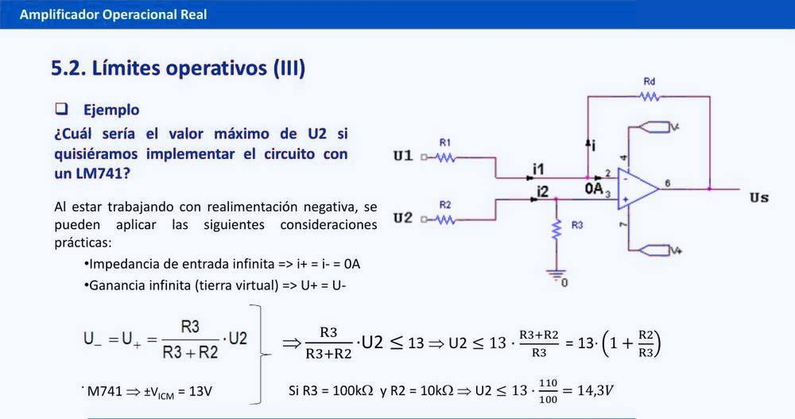
Corriente máxima de salida: el ejemplo de la diapositiva paso a paso
Circuito no inversor con $R_i=1$ kΩ, $R_f=3$ kΩ, $V_{sat}=12$ V e $I_{OS}=25$ mA. Pregunta: límites de funcionamiento con $R_L=10$ kΩ y con $R_L=100$ Ω.
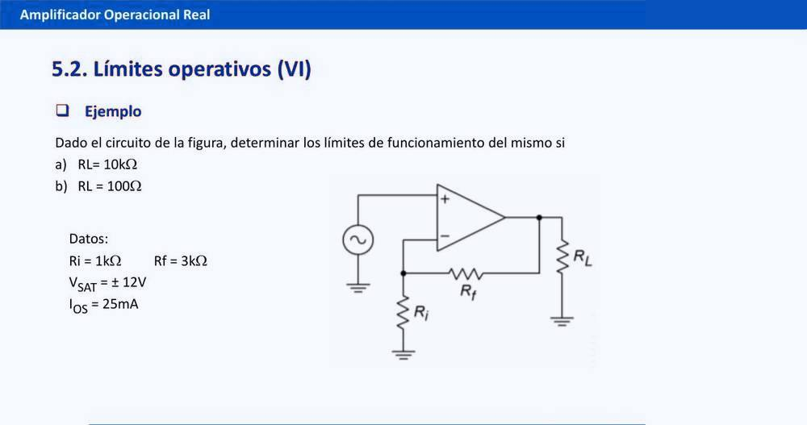
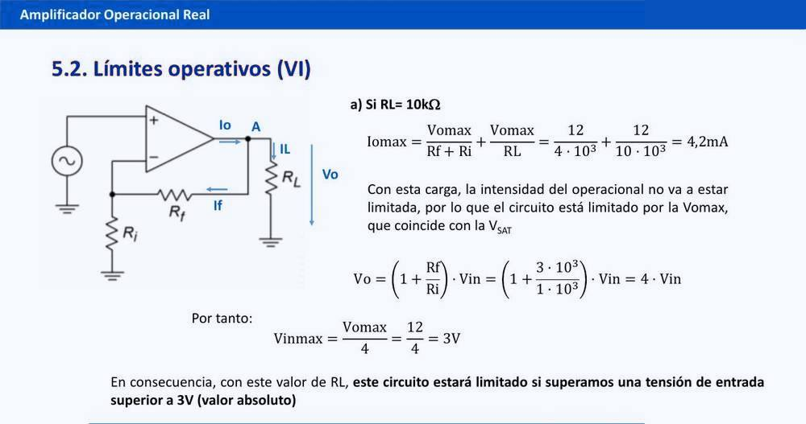
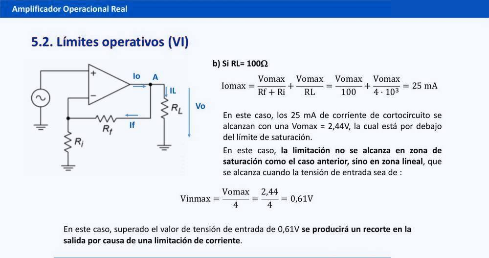
Si el circuito necesita más corriente que la del AO, se añade un transistor de potencia a la salida, con un diodo de protección si hace falta.
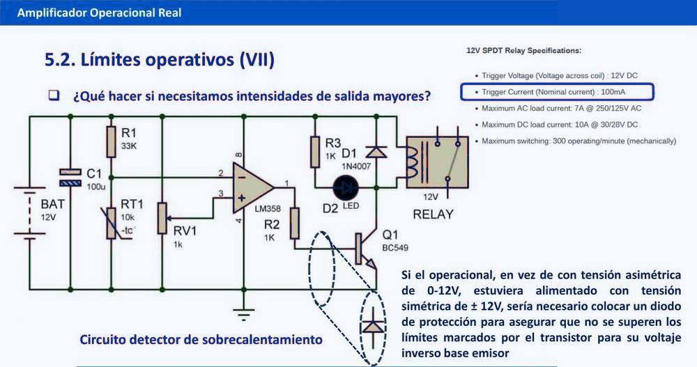
5.2 Slew rate: la velocidad máxima de la salida
La salida de un AO real no puede cambiar instantáneamente. Hay un límite de variación por unidad de tiempo que se llama slew rate (SR) y se mide en V/µs. Si la señal exige cambiar más deprisa, la salida se convierte en una rampa de pendiente SR y la forma de onda se deforma.
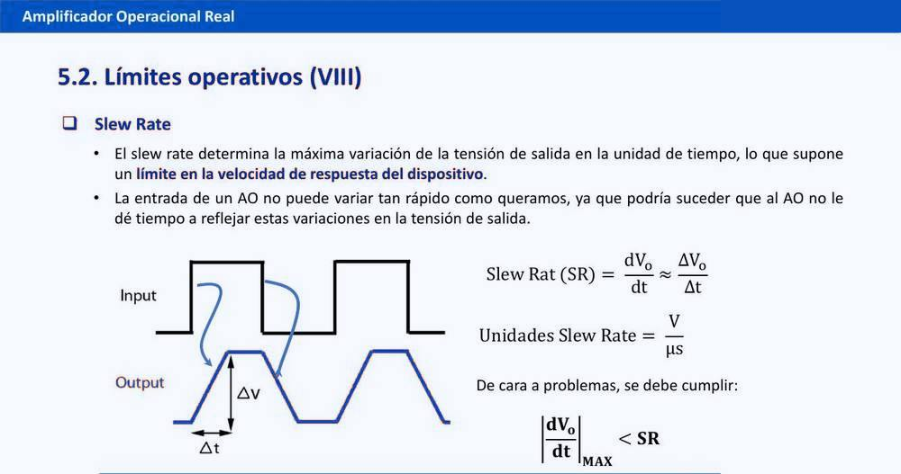
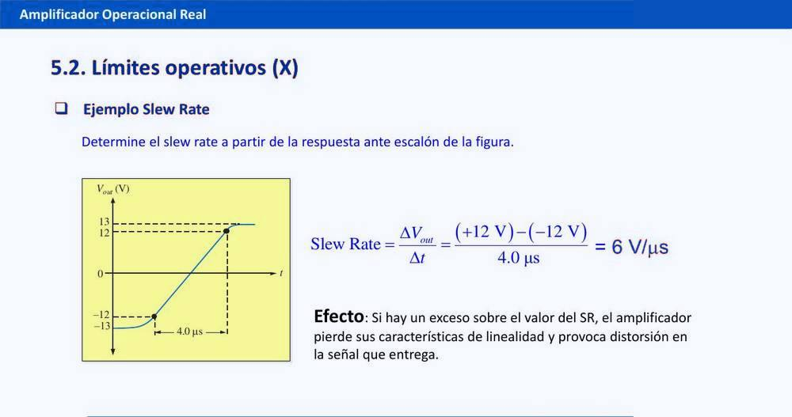
La condición para una senoidal
Para $v_o(t)=A\sin(2\pi ft)$, la pendiente máxima ocurre al cruzar por cero y vale $\left|\dfrac{dv_o}{dt}\right|_{max}=2\pi fA$. Para que no haya distorsión:
$$2\pi f A\le SR\quad\Longrightarrow\quad f_{max}=\frac{SR}{2\pi A}$$Es el ancho de banda a plena potencia. Cuanto mayor es la amplitud $A$ de salida, menor es la frecuencia a la que puedes trabajar sin distorsión.
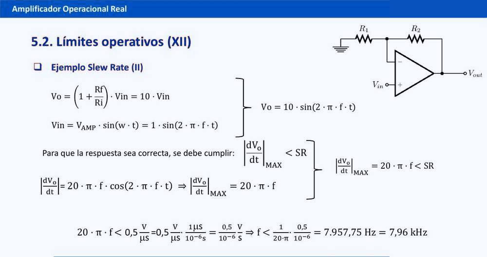
Simulador · slew rate y frecuencia máxima
5.3 CMRR: cuánto rechaza el modo común
Un AO amplifica la diferencia entre sus entradas. Pero si las dos entradas suben o bajan juntas (modo común), un poco de eso también pasa a la salida. Se definen la tensión diferencial $V_d=V_p-V_n$ y la de modo común $V_c=\dfrac{V_p+V_n}{2}$.
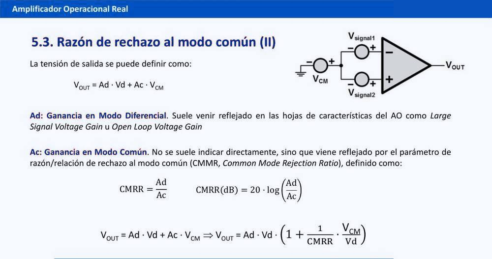
Definición
$$CMRR=\frac{A_d}{A_c},\qquad CMRR(dB)=20\log\frac{A_d}{A_c},\qquad V_{OUT}=A_dV_d\left(1+\frac1{CMRR}\frac{V_c}{V_d}\right)$$Cuanto mayor es el CMRR, menos se nota el modo común. El LM741 tiene un mínimo de 70 dB y típico de 90 dB.
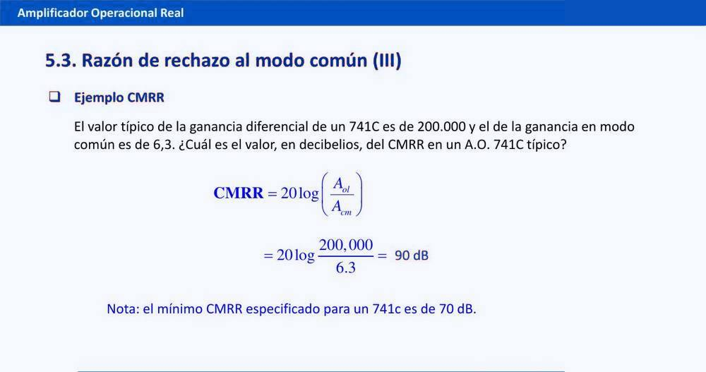
5.4 y 5.5 Impedancia de entrada y ganancia finitas
En el modelo real, la impedancia de entrada diferencial $R_d$ no es infinita (el 741 tiene unos $2$ MΩ) y la ganancia $A_{OL}$ tampoco (de 100 000 a 1 000 000). Entonces no se pueden usar las dos reglas del AO ideal: $i^-\neq0$ y $V^+\neq V^-$. Hay que escribir las ecuaciones completas.
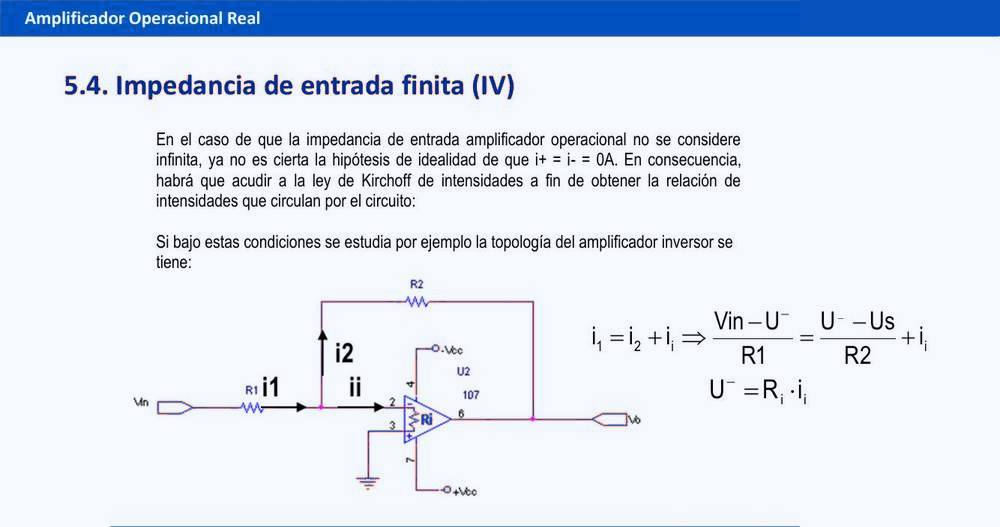
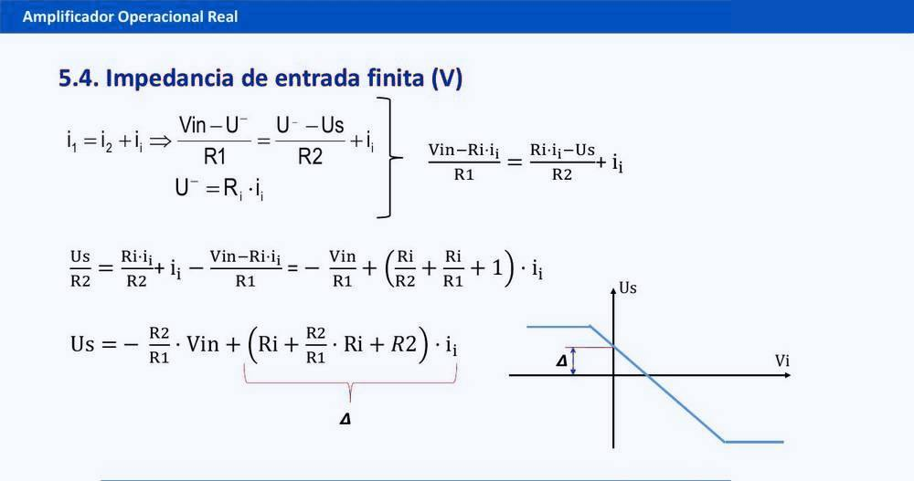
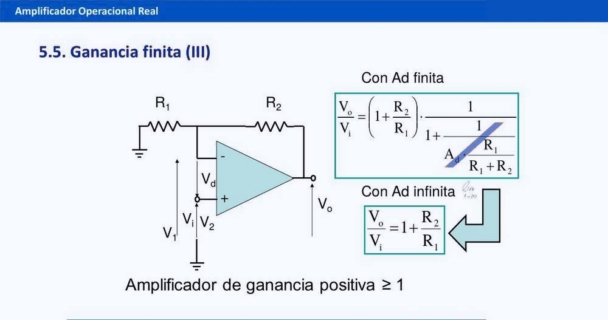
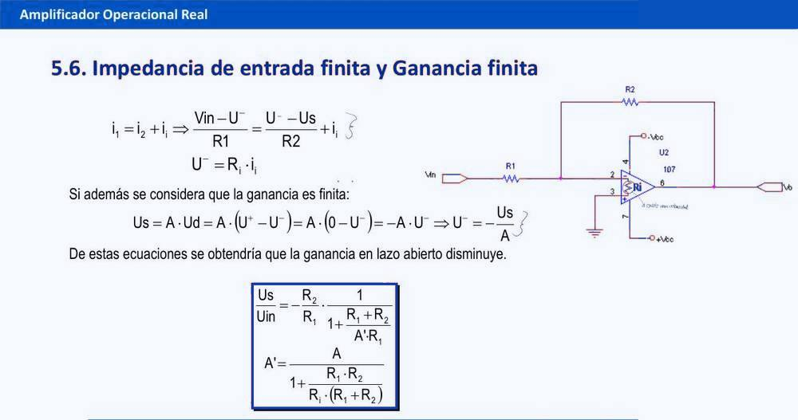
Regla práctica
El error por ganancia finita es del orden de $\dfrac{1}{1+A\beta}$, donde $\beta=\dfrac{R_1}{R_1+R_2}$ es la fracción de la salida que vuelve a la entrada (en el inversor, el factor es $\dfrac{R_1+R_2}{AR_1}$). Con $A=10^5$ y ganancia ideal de $-10$ el error es de 0,011 %. Con ganancias de lazo cerrado altas (cerca de $A$), el error ya no se puede ignorar.
5.7 Impedancia de salida
El AO real tiene una resistencia de salida $R_o$ de unos 50 a 500 Ω (75 Ω en el µA741). Forma un divisor con la carga, pero la realimentación negativa la reduce mucho: con lazo cerrado, $R_{out,CL}\approx\dfrac{R_o}{1+A\beta}$.
5.8 Tensiones y corrientes de offset de entrada
Las entradas del AO son transistores que necesitan una corriente de polarización. Esta corriente fluye por las resistencias del circuito y crea una tensión no deseada. Hay tres parámetros:
$I_B$ corriente de polarización
$I_B=\dfrac{I_{B+}+I_{B-}}{2}$. En AO bipolares es de 10 a 100 nA y en AO con FET de 0,1 a 100 pA.
$I_{IO}$ corriente de offset
$I_{IO}=I_{B+}-I_{B-}$. Es la asimetría entre las dos entradas. En el µA741, $I_B=80$ nA e $I_{IO}=20$ nA (valores típicos).
$V_{IO}$ tensión de offset
Una pequeña fuente en serie con la entrada que hace que la salida no sea 0 con entrada 0. En un LM741C es típicamente 2 mV (máximo 6 mV) y puede ser positiva o negativa.
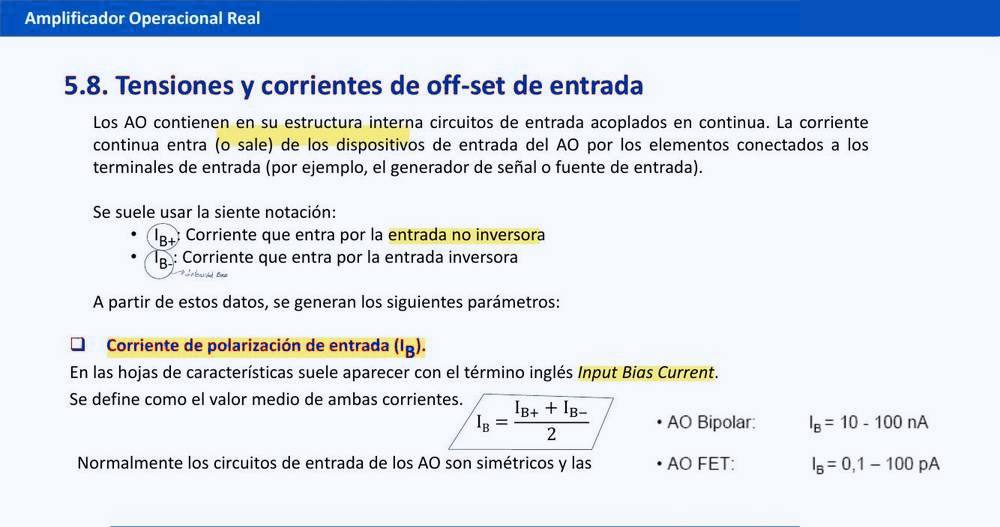
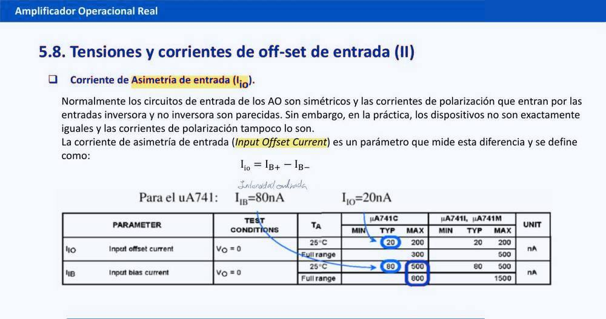
Cómo se corrige el efecto de $I_B$
En un inversor con entrada a 0 V, la corriente $I_B$ que entra por $-$ circula por $R_1\parallel R_2$ y produce un error en la salida $U_s=\dots+I_B R_2$. La idea es poner en la entrada $+$ una resistencia $R_3$ para que la misma corriente $I_B$ cree una tensión igual en las dos entradas, y así se anule.
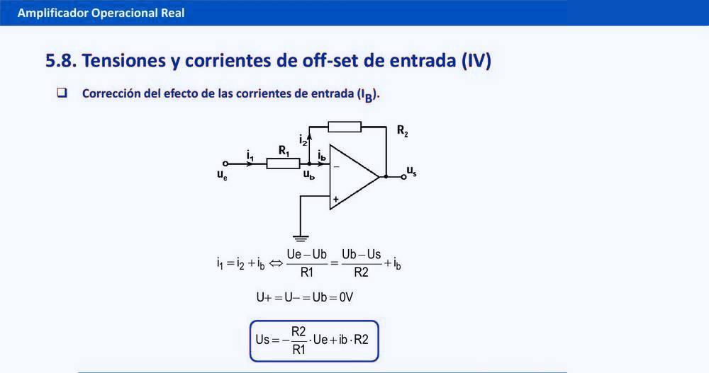
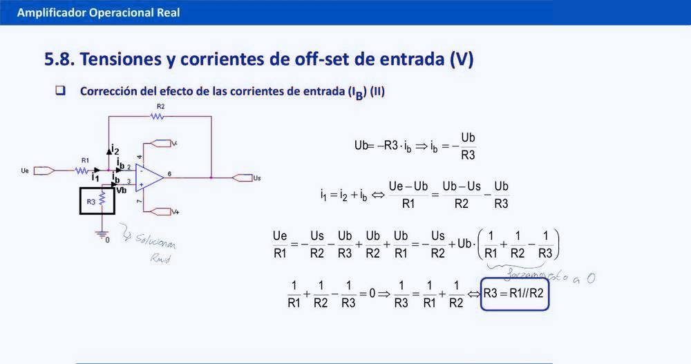
Regla de oro
Pon en la entrada no inversora una resistencia igual al paralelo de las resistencias que ve la entrada inversora: $R_3=R_1\parallel R_2$. Así las dos entradas ven la misma resistencia y la corriente de polarización común se cancela. Queda sólo el error de $I_{IO}$ (mucho menor que el de $I_B$).
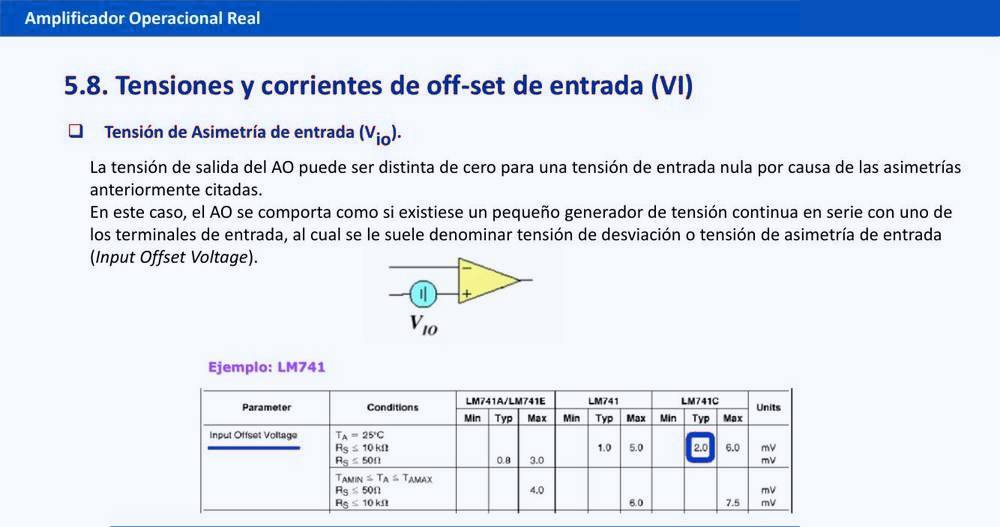
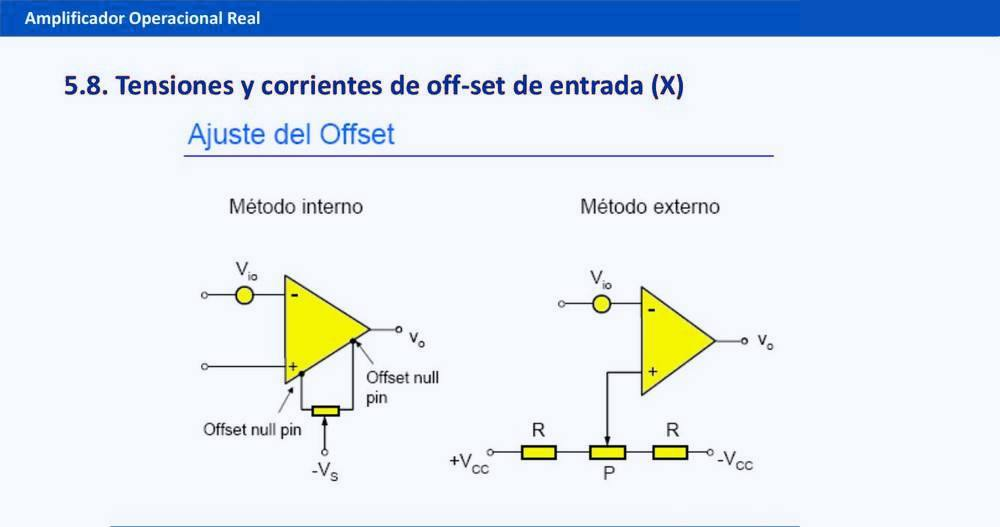
método interno usa un potenciómetro entre las patillas de offset-null del chip (c" loading="lazy" width="1000" height="563">5.9 Alimentación: consumo y PSRR
El consumo de un 741 con ±15 V es del orden de 50 mW. Y las fuentes de alimentación no son perfectas: tienen rizado. El parámetro PSRR (power supply rejection ratio) mide cuánta de esa variación llega a la salida: $PSRR=\left|\dfrac{\Delta V_o}{\Delta V_s}\right|$ y en dB $PSRR=20\log\left|\dfrac{\Delta V_o}{\Delta V_s}\right|$. Un valor típico es 30 µV/V (90 dB): para que la salida varíe 30 µV, el rizado debe ser de 1 V.
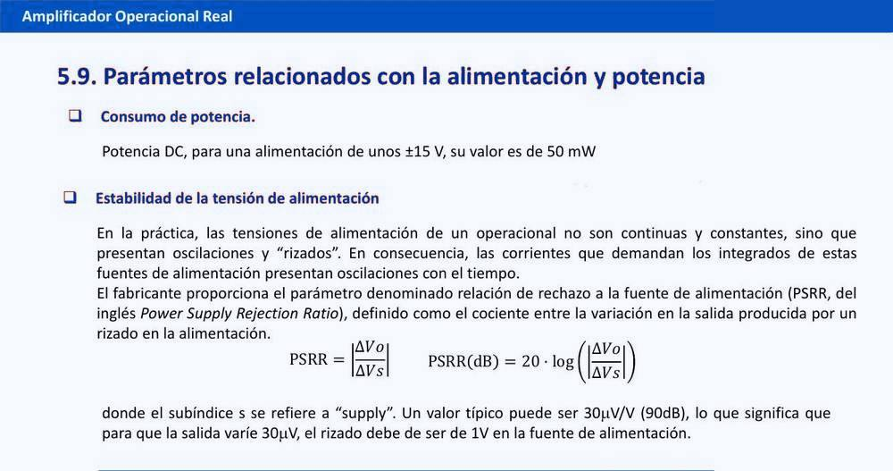
5.10 Tolerancia de los componentes
Las resistencias reales tienen tolerancia. Con un inversor de ganancia ideal 100 y resistencias del 5 %, el peor caso es cuando $R_2$ es un 5 % mayor y $R_1$ un 5 % menor, y al revés.
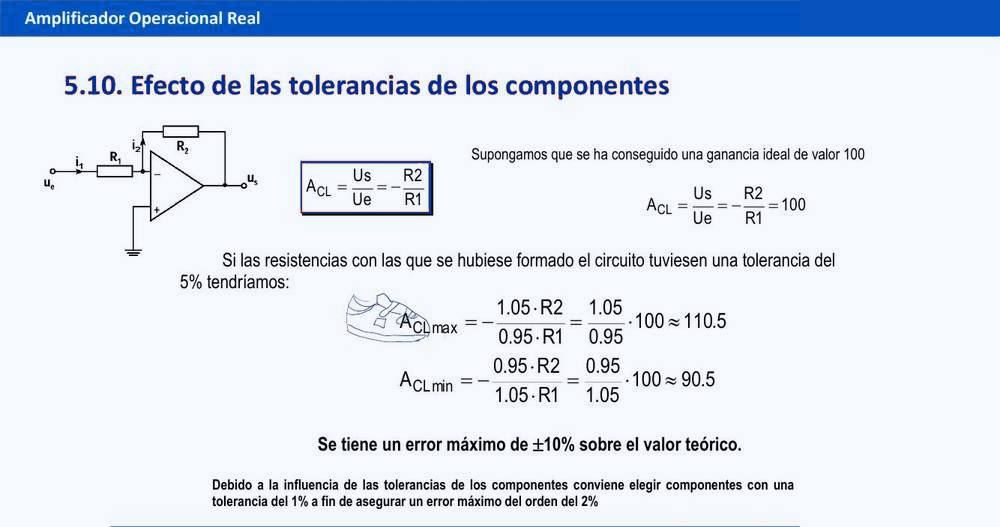
5.11 Parámetros de frecuencia y GBW
Un AO tiene ganancia altísima en continua, pero cae al subir la frecuencia. Los AO llevan un condensador de compensación interno (3 pF en el µA741) que crea un polo a baja frecuencia (unos 5 Hz) para que sean estables. A partir de ese polo, la ganancia cae a $-20$ dB/década.
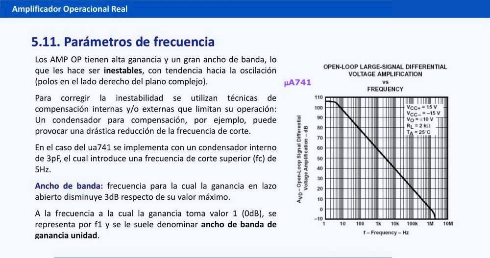
ancho de banda es la " loading="lazy" width="1000" height="563">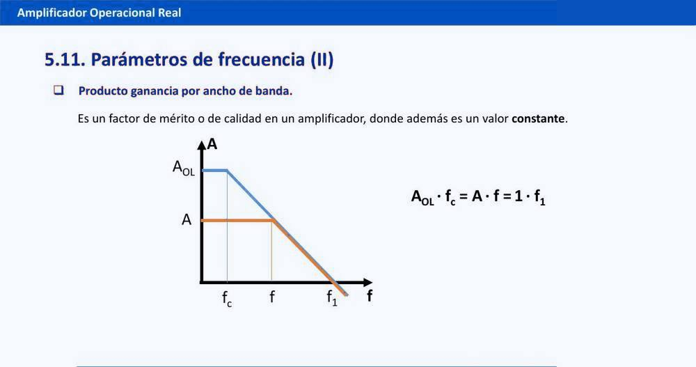
Para el examen
$GBW=A_{CL}\cdot f_{-3dB}$. Un AO con $GBW=1$ MHz, usado con ganancia 10, tiene un ancho de banda de 100 kHz, y usado con ganancia 100, de 10 kHz.
5.12 Distorsión armónica
Un sistema no lineal que recibe una senoidal de frecuencia $f_0$ entrega, además de $f_0$, armónicos en $2f_0$, $3f_0$, etc. La distorsión armónica total (THD) mide cuánto pesan frente al fundamental: $THD=\dfrac{\sqrt{V_2^2+V_3^2+\dots}}{V_1}$.
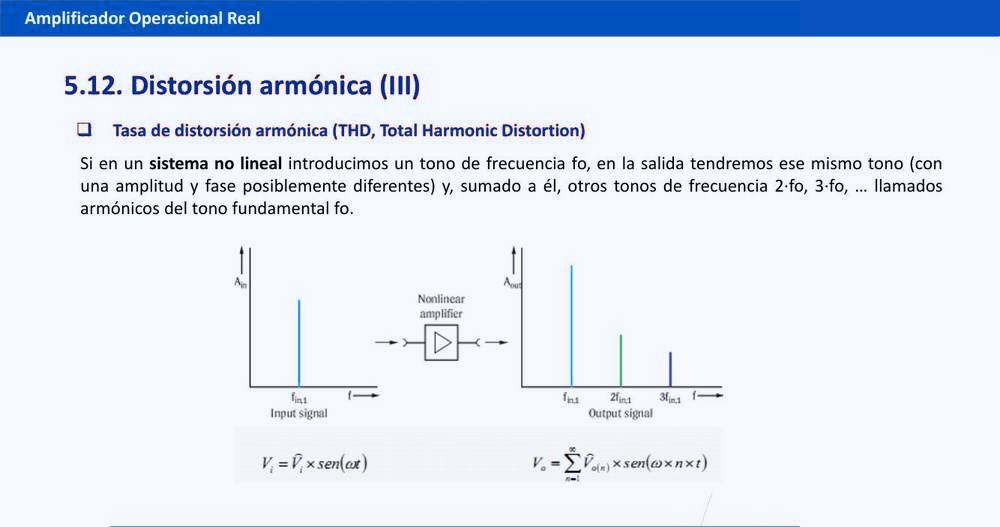
▶Vídeos para reforzar este tema
- Medición del Slew Rate. Amplificadores operacionales. Para los ejercicios de frecuencia máxima sin distorsión.
- Calcular el error de tensión de salida de un amplificador operacional con tensión de Offset Error de salida por offset.
Los he elegido por su título y su tema, sin haberlos visto: comprueba que el enfoque coincide con el de tu profesor. Se abren en YouTube.
Tema 6 · Diapositivas «Respuesta en frecuencia y filtros»
Diagramas de Bode y filtros básicos
Desde cero
Un circuito con condensadores responde distinto según la frecuencia de la señal. Un condensador es un circuito abierto en continua y casi un cortocircuito a frecuencia muy alta, y entre medias hace cosas interesantes. La función de transferencia $G(s)=\dfrac{V_{out}}{V_{in}}$ describe todo eso. Al sustituir $s=j\omega$ obtienes un número complejo que depende de $\omega$: su módulo te dice cuánto amplifica y su fase cuánto retrasa.
El diagrama de Bode dibuja el módulo en decibelios ($20\log|G|$) y la fase en grados, ambos frente a la frecuencia en escala logarítmica. La gran ventaja de pasar a dB es que los productos se convierten en sumas, así que el diagrama de una función compleja es la suma de los diagramas de sus factores sencillos, todos rectas.

Receta para dibujar un Bode, paso a paso
- Factoriza numerador y denominador para ver los ceros y los polos.
- Normaliza: cada factor debe quedar como $(1+s/\omega_c)$, sacando fuera las constantes. Todas las constantes se juntan en un único término $K$.
- Sustituye $s=j\omega$.
- Dibuja cada factor por separado (tabla de abajo) y súmalos. En dB, el producto es una suma; en fase, también.
- Comprueba: la ganancia a baja frecuencia debe ser $20\log K$ (sin factores en el origen) y la pendiente al final debe ser la suma de pendientes.


Los factores básicos: la tabla que hay que saberse
| Factor | Módulo (dB) | Fase |
|---|---|---|
| Constante $K$ | Recta horizontal en $20\log|K|$ | 0° si $K>0$, 180° si $K<0$ |
| Cero en el origen $j\omega a$ | Pasa por 0 dB en $\omega=1/a$ y sube $+20$ dB/década | +90° |
| Polo en el origen $\dfrac1{j\omega a}$ | Pasa por 0 dB en $\omega=1/a$ y baja $-20$ dB/década | −90° |
| Cero real $1+j\omega a$ | 0 dB hasta $\omega_c=1/a$ y luego $+20$ dB/década | 0° → +90°, vale +45° en $\omega_c$ |
| Polo real $\dfrac1{1+j\omega a}$ | 0 dB hasta $\omega_c=1/a$ y luego $-20$ dB/década | 0° → −90°, vale −45° en $\omega_c$ |
| Polos complejos $\dfrac1{1+2\zeta\frac{j\omega}{\omega_n}+\left(\frac{j\omega}{\omega_n}\right)^2}$ | 0 dB hasta $\omega_n$ y luego $-40$ dB/década, con pico si $\zeta<0{,}707$ | 0° → −180° |
| Elevar a $n$ el factor | Multiplica pendientes y fases por $n$ | Multiplica por $n$ |
Dos trampas clásicas
- En $\omega_c$ la curva real está 3 dB por debajo (polo) o 3 dB por encima (cero) de la asíntota. Es la «frecuencia de corte»: el módulo vale $\sqrt2$ veces el de baja frecuencia, la potencia cae a la mitad.
- La fase de un factor de primer orden no es una recta: vale la mitad de su salto en $\omega_c$ y se aproxima por una recta que empieza una década antes y acaba una década después de $\omega_c$ (−45°/década).
Cada factor con su diapositiva


Ejemplo completo de la clase, desde cero
Dibuja el Bode de $G(s)=\dfrac{10^4(s+40)}{s^2+410s+4000}$.

- Factoriza: $(s+10)(s+400)=s^2+410s+4000$ ✓. Hay un cero en 40 rad/s y polos en 10 y 400 rad/s.
- Normaliza: $\dfrac{10^4(s+40)}{(s+10)(s+400)}=\dfrac{10^4\cdot40\,(1+s/40)}{10\cdot400\,(1+s/10)(1+s/400)}=100\,\dfrac{1+s/40}{(1+s/10)(1+s/400)}$.
- Ganancia constante: $K=100\Rightarrow20\log100=40$ dB.
- Dibuja los cuatro factores: recta de 40 dB, polo en 10 rad/s ($-20$ dB/dec), cero en 40 rad/s ($+20$ dB/dec) y polo en 400 rad/s ($-20$ dB/dec).
- Suma las pendientes por tramos: hasta 10 rad/s, 0; de 10 a 40, $-20$; de 40 a 400, $0$ (el cero cancela el polo); desde 400, $-20$ dB/década.


Qué pasa si añades un factor $j\omega$
Multiplicar por $j\omega$ añade un cero en el origen: toda la curva se inclina $+20$ dB/década y se desplaza para pasar por el punto $(\omega=1$ rad/s, $20\log K)$. En el ejemplo, $G(s)\cdot j\omega$ sube con +20 dB/década hasta 10 rad/s, se aplana entre 10 y 40, vuelve a subir entre 40 y 400 y se aplana a partir de ahí en 80 dB.


Bode builder
Prueba tú: mueve las frecuencias del cero y de los polos y observa cómo se construye el diagrama.
Simulador · constructor de Bode
6.5 Filtros básicos de primer orden
El filtro más simple es una red RC. La frecuencia de corte es la frecuencia a la que la ganancia cae 3 dB, y su fórmula es $\omega_c=\dfrac1{RC}$, o $f_c=\dfrac1{2\pi RC}$.


Cómo reconocerlos sin calcular
Pregunta qué hace el condensador a cada extremo. Si en alta frecuencia el condensador es un cortocircuito y está a masa (paso bajo) o en serie con la señal (paso alto), ya sabes qué pasa. A baja frecuencia es un circuito abierto: en el paso alto bloquea la señal; en el paso bajo no pasa nada y la salida iguala a la entrada.
▶Vídeos para reforzar este tema
- Trazado del diagrama de Bode de un sistema de primer orden Un polo: el caso más sencillo.
- DIAGRAMA DE BODE Ejercicios [Asintótico y Matlab] #004 Ejercicios con asíntotas.
Los he elegido por su título y su tema, sin haberlos visto: comprueba que el enfoque coincide con el de tu profesor. Se abren en YouTube.
Tema 6 · Para dominar el examen
Bode a fondo: dibuja cualquier diagrama sin dudar
Desde cero
Hay una sola idea detrás de todo Bode: cada factor de la función de transferencia dobla la gráfica en un punto concreto, y en ese punto cambia la pendiente en $\pm20$ dB por década. Un polo la baja 20 dB/década, un cero la sube 20 dB/década. Si sabes dónde están los polos y los ceros, y de dónde parte la gráfica, la dibujas sin calcular nada más. La fase sigue la misma lógica: cada polo resta 90° (repartidos en dos décadas, de $\omega_c/10$ a $10\,\omega_c$), cada cero los suma.
Tarjeta de repaso: lo que cambia en cada punto
| Factor | Pendiente del módulo | Fase total que aporta | Dónde actúa |
|---|---|---|---|
| Polo real $\dfrac1{1+j\omega/p}$ | baja 20 dB/dec | −90° | $\omega=p$ (fase: de $p/10$ a $10p$) |
| Cero real $1+j\omega/z$ | sube 20 dB/dec | +90° | $\omega=z$ |
| Integrador $\dfrac1{j\omega}$ | −20 dB/dec desde el principio | −90° siempre | pasa por 0 dB (si $K=1$) en $\omega=1$ |
| Derivador $j\omega$ | +20 dB/dec desde el principio | +90° siempre | pasa por 0 dB (si $K=1$) en $\omega=1$ |
| Polos complejos ($\zeta$, $\omega_n$) | baja 40 dB/dec | −180° | $\omega=\omega_n$, con pico si $\zeta<0{,}707$ |
| Constante $K$ | nada, sólo sube o baja todo | 0° ($K>0$) o 180° ($K<0$) | — |
Receta de 6 pasos, sin saltarse ninguno
- Normaliza. Que cada factor sea $(1+s/\omega_c)$ o $s$ (o $1/s$). Las constantes salen fuera y se multiplican en una sola $K$. Ejemplo: $s+10=10\,(1+s/10)$.
- Haz una lista ordenada de todas las frecuencias de corte, de menor a mayor, anotando si es polo (↓) o cero (↑).
- Punto de partida. Si no hay factores en el origen: la gráfica empieza plana en $20\log|K|$. Si hay $n$ integradores: empieza con pendiente $-20n$ y pasa por el punto $(\omega=1,\ 20\log|K|)$. Si hay $n$ derivadores: pendiente $+20n$ y el mismo punto.
- Recorre la lista. En cada frecuencia, suma $-20$ (polo) o $+20$ (cero) a la pendiente. Para saber el valor, multiplica la pendiente por el número de décadas del tramo: $\Delta\text{dB}=\text{pendiente}\times\log_{10}\dfrac{\omega_2}{\omega_1}$.
- Suaviza. En cada frecuencia de corte, la curva real queda 3 dB por debajo (polo) o por encima (cero) de la asíntota, si las frecuencias están separadas. Si dos están muy cerca, los efectos se suman.
- Fase. Dibuja por separado la fase de cada factor (rampa de ±90° en dos décadas, centrada en $\omega_c$) y súmalas. Comprueba que el valor final es $90°\times(\#\text{ceros}-\#\text{polos})$.
Los cinco errores que más puntos cuestan
- Olvidar normalizar: $\dfrac{10}{s+10}$ vale 1 (0 dB) en continua, no 10 (20 dB).
- Dibujar la pendiente en dB/octava o en dB/década equivocada. En el examen se pide por década.
- Poner la frecuencia de corte en $\omega=a$ y no en $\omega=1/a$ para el factor $1+aj\omega$.
- Dibujar la fase de $K/(j\omega)$ como 0°: el integrador aporta −90° desde el principio.
- Olvidar que un factor repetido, $(1+j\omega/p)^n$, multiplica por $n$ la pendiente y la fase.
Factores repetidos: la misma idea, multiplicada por $n$
Si un factor está elevado a la $n$, todo lo que aporta se multiplica por $n$: la pendiente pasa a ser $\pm20n$ dB/década, y la fase total $\pm90n$°. Las diapositivas lo muestran con $n=2$ (pendiente de 40 dB/década y fase de 180°).


Cómo se suma todo: el ejemplo de la clase, con la fase incluida
En el ejemplo $G(s)=\dfrac{10^4(s+40)}{s^2+410s+4000}$ ya viste el módulo. Estos dos pasos de la clase muestran la idea de «las frecuencias de corte separan regiones».

¿Y si multiplicas la función por $j\omega$? Aparece un cero en el origen: toda la gráfica se inclina +20 dB/década y el nivel de cada tramo cambia.


Polos complejos: el efecto del factor de amortiguamiento $\zeta$
Un factor de segundo orden $\dfrac{1}{1+2\zeta\frac{s}{\omega_n}+\frac{s^2}{\omega_n^2}}$ tiene dos polos que pueden ser reales ($\zeta\ge1$) o complejos ($\zeta<1$). El parámetro $\zeta$ decide si la curva real tiene pico de resonancia o no. Para $\zeta<0{,}707$ el módulo sube por encima de 0 dB antes de caer:
$$M_r=\frac{1}{2\zeta\sqrt{1-\zeta^2}}\ \text{ en }\ \omega_r=\omega_n\sqrt{1-2\zeta^2},\qquad |G(j\omega_n)|=\frac1{2\zeta}$$Simulador · polos complejos y factor de amortiguamiento
Leer un Bode al revés: de la gráfica a $G(s)$
Es el ejercicio inverso y aparece mucho. El método es el de la receta, al revés:
- Nivel inicial. Si la gráfica empieza plana a $L$ dB, entonces $K=10^{L/20}$. Si empieza con pendiente $\pm20n$, hay $n$ integradores o derivadores.
- Cada cambio de pendiente es una frecuencia de corte. Si la pendiente baja 20, hay un polo ahí; si sube 20, un cero; si baja 40, dos polos coincidentes o un par complejo.
- Escribe cada factor $(1+s/\omega_c)$ en el numerador (cero) o el denominador (polo).
- Comprueba con la fase final: $90°\times(\#\text{ceros}-\#\text{polos})$.
Generador de ejercicios: practica sin parar
Pulsa «Nuevo ejercicio»: aparece una función. Dibuja en papel el módulo y la fase, y después pulsa «Ver solución» para comparar.
Práctica · dibuja el Bode de esta función
Problemas de Bode resueltos
A. Con integrador: $G(s)=\dfrac{1000}{s(s+10)(s+100)}$
Enunciado
Dibuja el módulo asintótico, da los valores de cada tramo y calcula la fase final.
1Normaliza
$s+10=10(1+s/10)$ y $s+100=100(1+s/100)$. La constante: $\dfrac{1000}{10\cdot100}=1$. Queda $G(j\omega)=\dfrac{1}{j\omega\,(1+j\omega/10)(1+j\omega/100)}$, con $K=1$ (0 dB).
2Lista de frecuencias y pendientes
Hay un integrador (pendiente inicial $-20$) y polos en 10 y 100 rad/s. Pendientes: hasta 10 rad/s, $-20$; de 10 a 100, $-40$; más allá de 100, $-60$ dB/década.
3Valores del módulo
Parte del punto $(1\ \text{rad/s},\ 0\ \text{dB})$. En 10 rad/s: $0-20\cdot1=-20$ dB. En 100 rad/s: $-20-40\cdot1=-60$ dB. Con la curva real, en $\omega=10$: $|G|=\dfrac{1}{10\sqrt2\sqrt{1{,}01}}=0{,}070$, es decir $-23{,}1$ dB (3 dB por debajo de la asíntota).
4Fase
$\varphi=-90°-\arctan\dfrac\omega{10}-\arctan\dfrac\omega{100}$. En $\omega\to0$: −90°. En $\omega=10$: $-90-45-5{,}7=-140{,}7°$. En $\omega=100$: $-90-84{,}3-45=-219{,}3°$. Final: $-90-90-90=-270°$ (tres polos, ningún cero: $-90\cdot3$).
Resultado
Solución
Módulo: $-20$ dB/dec hasta 10, $-40$ hasta 100 y $-60$ después, con $0$ dB en 1 rad/s, $-20$ dB en 10 y $-60$ dB en 100. Fase de −90° a −270°.
B. Derivador con polo: $G(s)=\dfrac{10\,s}{s+100}$
Enunciado
Calcula el módulo asintótico y di qué tipo de filtro es.
1Normaliza
$\dfrac{10s}{100(1+s/100)}=\dfrac{0{,}1\,s}{1+s/100}$, con $K=0{,}1$ ($-20$ dB), un cero en el origen y un polo en 100 rad/s.
2Módulo
La parte $0{,}1\,j\omega$ vale $0{,}1$ en $\omega=1$: pasa por $(1,\ -20\ \text{dB})$ con $+20$ dB/dec. En $\omega=100$ vale $-20+40=+20$ dB. Desde 100, el polo cancela la pendiente: queda plano en $+20$ dB, que es $|G|=10$, el valor de $s\to\infty$.
3Fase
Empieza en $+90°$ (cero en el origen), vale $+45°$ en 100 rad/s y termina en $0°$ (un cero y un polo: $90-90$).
4Tipo de filtro
Atenúa las bajas frecuencias y deja pasar las altas con ganancia 10: es un paso alto. En $\omega_c=100$ la curva real vale $\dfrac{10\cdot100}{\sqrt{100^2+100^2}}=7{,}07$, es decir $17$ dB (3 dB bajo la asíntota).
Resultado
Solución
Paso alto: +20 dB/dec desde $-20$ dB en 1 rad/s hasta 100 rad/s, y plano en 20 dB. Fase de +90° a 0°.
C. De la gráfica a la función
Enunciado
Un diagrama de Bode del módulo empieza plano en 20 dB, a partir de 100 rad/s cae 20 dB/década y a partir de 10 000 rad/s cae 40 dB/década. ¿Cuál es $G(s)$ y cuál es la fase final?
1Constante
20 dB es $K=10^{20/20}=10$.
2Frecuencias de corte
En 100 rad/s la pendiente baja 20 dB/dec: un polo. En $10^4$ rad/s la pendiente pasa de −20 a −40: otro polo.
3Función
$G(s)=\dfrac{10}{\left(1+\frac{s}{100}\right)\left(1+\frac{s}{10^4}\right)}=\dfrac{10^7}{(s+100)(s+10^4)}$. Comprobación del segundo término: $(s+100)(s+10^4)$ vale $10^6$ en $s=0$, y $10^7/10^6=10$ ✓.
4Fase
Dos polos y ningún cero: la fase final es $-90\cdot2=-180°$, y en 100 rad/s vale cerca de $-45°$.
Resultado
Solución
$G(s)=\dfrac{10^7}{(s+100)(s+10^4)}$, fase final −180°. Valor en $\omega=10^4$ (asíntota): $20-20\cdot2=-20$ dB.
D. Segundo orden con pico: $G(s)=\dfrac{100}{s^2+10s+100}$
Enunciado
Calcula $\omega_n$, $\zeta$, el pico de resonancia y la fase en $\omega_n$.
1Normaliza
Se divide por 100: $G=\dfrac1{1+0{,}1\,s+\dfrac{s^2}{100}}$, con $K=1$ (0 dB).
2Identifica $\omega_n$ y $\zeta$
$\dfrac{s^2}{\omega_n^2}=\dfrac{s^2}{100}\Rightarrow\omega_n=10$ rad/s. $\dfrac{2\zeta}{\omega_n}=0{,}1\Rightarrow\zeta=\dfrac{0{,}1\cdot10}{2}=0{,}5$.
3Pico
$\zeta=0{,}5<0{,}707$, así que hay pico: $M_r=\dfrac1{2\cdot0{,}5\sqrt{1-0{,}25}}=1{,}155$, es decir $1{,}25$ dB, en $\omega_r=10\sqrt{1-2\cdot0{,}25}=7{,}07$ rad/s.
4En $\omega_n$
$|G(j10)|=\dfrac1{2\zeta}=1$, es decir 0 dB, y la fase es exactamente −90°. A partir de ahí, −40 dB/década: en $\omega=100$ vale $-40$ dB.
Resultado
Solución
$\omega_n=10$ rad/s, $\zeta=0{,}5$, pico de 1,25 dB en 7,07 rad/s, fase −90° en $\omega_n$ y −180° final.
▶Vídeos para reforzar este tema
- Trazado del diagrama de Bode de un sistema de segundo orden Segundo orden, como los filtros Sallen-Key.
- DIAGRAMA DE BODE [Ceros y Polos Complejos Conjugados] #009 Polos complejos conjugados y el pico de resonancia.
- Diagrama de Bode - Trazado Asintótico de una función de transferencia Trazado asintótico completo.
Los he elegido por su título y su tema, sin haberlos visto: comprueba que el enfoque coincide con el de tu profesor. Se abren en YouTube.
Tema 6 · Filtros activos
Filtros activos: orden, Butterworth y Chebyshev
Desde cero
Un filtro RC pasivo tiene una caída lenta, de $-20$ dB por década, y además carga a la fuente y pierde señal. Un filtro activo usa operacionales para dar ganancia, aislar etapas y conseguir pendientes mucho más fuertes poniendo varias etapas en cascada. El orden $n$ del filtro es el número de polos, y la pendiente final es $-20n$ dB por década. Un filtro de orden 4 cae a $-80$ dB por década.
El orden fija la pendiente. Lo que hay que elegir es la forma de la curva cerca de la frecuencia de corte. Hay dos aproximaciones que se estudian:
Butterworth
La respuesta más plana posible en la banda de paso, sin rizado. Módulo: $|H|=\dfrac1{\sqrt{1+(f/f_c)^{2n}}}$. Siempre vale $-3$ dB en $f_c$. Es el filtro «de propósito general».
Chebyshev (tipo I)
Cae más rápido que Butterworth del mismo orden, pero con un rizado constante en la banda de paso (por ejemplo 1 dB). Módulo: $|H|=\dfrac1{\sqrt{1+\varepsilon^2T_n^2(f/f_c)}}$, con $\varepsilon=\sqrt{10^{r_p/10}-1}$.
Simulador · respuesta de un paso bajo de orden $n$
La celda de segundo orden: Sallen–Key
Los filtros de orden alto se construyen en cascada de celdas de segundo orden (y una de primer orden si $n$ es impar). La celda más usada es la de Sallen–Key, de ganancia unidad. Una celda de segundo orden se caracteriza por dos números: la frecuencia $\omega_0$ y el factor de calidad $Q$.
$$\omega_0=\frac{1}{\sqrt{R_1R_2C_1C_2}},\qquad Q=\frac{\sqrt{R_1R_2C_1C_2}}{C_2\,(R_1+R_2)}$$En el paso bajo de ganancia unidad, $C_1$ va del nudo intermedio a la salida y $C_2$ de la entrada $+$ a masa. Con $R_1=R_2=R$ queda $Q=\tfrac12\sqrt{C_1/C_2}$. Para Butterworth ($Q=0{,}707$) hace falta $C_1=2C_2$. $Q$ mayor da pico de resonancia, igual que los polos complejos del Bode.
Ejemplo: Sallen–Key Butterworth de 1 kHz comprobado
Elige $R_1=R_2=R=10$ kΩ y $C_1=2C_2$. Frecuencia: $\omega_0=\dfrac1{R\sqrt{C_1C_2}}=\dfrac1{R\,C_2\sqrt2}$. Para $f_0=1$ kHz, $\omega_0=6283$ rad/s, y despejando $C_2=\dfrac1{R\,\omega_0\sqrt2}=\dfrac1{10^4\cdot6283\cdot1{,}414}=11{,}25$ nF y $C_1=22{,}5$ nF.
Con valores comerciales, $C_2=10$ nF y $C_1=22$ nF ($Q=\tfrac12\sqrt{2{,}2}=0{,}74$) da $f_0\approx1{,}07$ kHz: un error del 7 %. Para ajustarlo, cambia $R$.
▶Vídeos para reforzar este tema
- Análisis y Función de Transferencia Filtro Pasa Bajas de Segundo Orden (Configuración Sallen-Key) El Sallen-Key pasa bajos.
- Filtro Activo segundo orden Sallen Key Paso-alto. 1.- Función de transferencia La versión pasa altos, como en el P1 de 25-26.
Los he elegido por su título y su tema, sin haberlos visto: comprueba que el enfoque coincide con el de tu profesor. Se abren en YouTube.
Tema 7 · Diapositivas «Cuadripolos»
Cuadripolos: parámetros z, y, h y g
Desde cero
Un cuadripolo es cualquier circuito con dos puertos: dos terminales de entrada ($v_1$, $i_1$) y dos de salida ($v_2$, $i_2$). Lo que hay dentro no importa. Lo que importa es la relación entre las cuatro variables, y como son lineales, dos de ellas se pueden expresar en función de las otras dos mediante cuatro parámetros. Según qué dos variables elijas como «datos», salen cuatro familias: $z$, $y$, $h$ y $g$. Los transistores bipolares se modelan casi siempre con parámetros $h$, y por eso son los más importantes.
El truco para calcular cualquier parámetro es siempre el mismo: anula una variable (cortocircuito para una tensión, circuito abierto para una corriente) y divide.
| Familia | Ecuaciones | Cómo se obtiene cada parámetro |
|---|---|---|
| $z$ (impedancias) | $v_1=z_{11}i_1+z_{12}i_2$ $v_2=z_{21}i_1+z_{22}i_2$ | Circuito abierto: $z_{11}=\dfrac{v_1}{i_1}\Big|_{i_2=0}$, $z_{21}=\dfrac{v_2}{i_1}\Big|_{i_2=0}$, $z_{12}=\dfrac{v_1}{i_2}\Big|_{i_1=0}$, $z_{22}=\dfrac{v_2}{i_2}\Big|_{i_1=0}$. Todos en Ω. |
| $y$ (admitancias) | $i_1=y_{11}v_1+y_{12}v_2$ $i_2=y_{21}v_1+y_{22}v_2$ | Cortocircuito: $y_{11}=\dfrac{i_1}{v_1}\Big|_{v_2=0}$, $y_{21}=\dfrac{i_2}{v_1}\Big|_{v_2=0}$, $y_{12}=\dfrac{i_1}{v_2}\Big|_{v_1=0}$, $y_{22}=\dfrac{i_2}{v_2}\Big|_{v_1=0}$. Todos en siemens. |
| $h$ (híbridos) | $v_1=h_{11}i_1+h_{12}v_2$ $i_2=h_{21}i_1+h_{22}v_2$ | $h_{11}=\dfrac{v_1}{i_1}\Big|_{v_2=0}$ (Ω), $h_{21}=\dfrac{i_2}{i_1}\Big|_{v_2=0}$ (adimensional), $h_{12}=\dfrac{v_1}{v_2}\Big|_{i_1=0}$ (adimensional), $h_{22}=\dfrac{i_2}{v_2}\Big|_{i_1=0}$ (S). |
| $g$ (híbridos inversos) | $i_1=g_{11}v_1+g_{12}i_2$ $v_2=g_{21}v_1+g_{22}i_2$ | $g_{11}=\dfrac{i_1}{v_1}\Big|_{i_2=0}$ (S), $g_{21}=\dfrac{v_2}{v_1}\Big|_{i_2=0}$, $g_{12}=\dfrac{i_1}{i_2}\Big|_{v_1=0}$, $g_{22}=\dfrac{v_2}{i_2}\Big|_{v_1=0}$ (Ω). |
Cada familia, con las diapositivas
Parámetros $z$: se miden con puertos en abierto
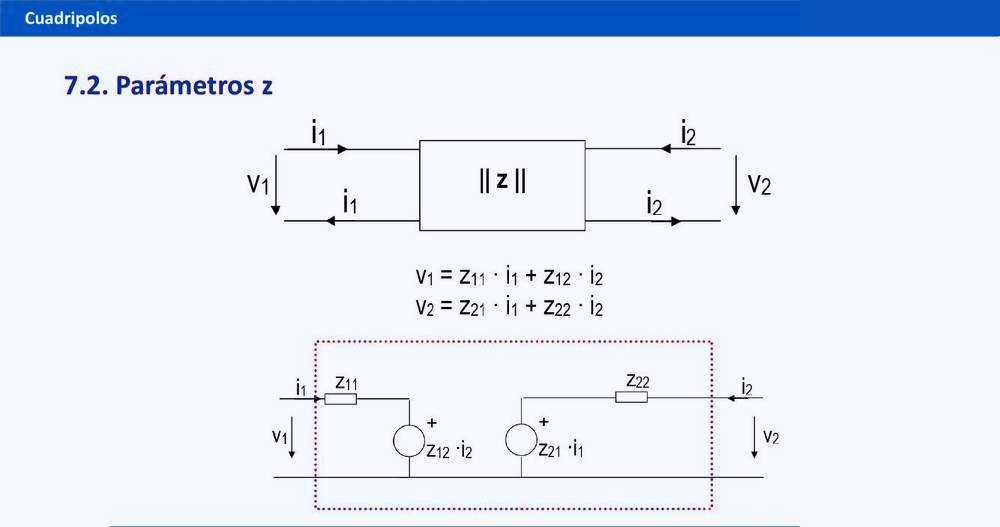
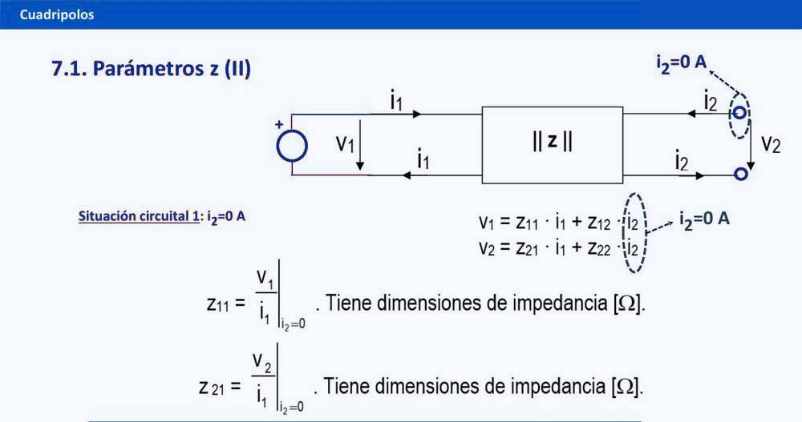
Parámetros $y$: se miden con puertos en cortocircuito
Parámetros $h$: los del transistor bipolar
Parámetros $g$
Amplificador con parámetros $h$
Si el cuadripolo $h$ (un transistor) se conecta a un generador con $R_g$ y a una carga $R_L$, con $i_2$ entrando al cuadripolo y $v_2=-R_Li_2$, se llega a las fórmulas de un amplificador. Con $\Delta h=h_{11}h_{22}-h_{12}h_{21}$:
| Magnitud | Fórmula |
|---|---|
| Ganancia de corriente | $A_i=\dfrac{-h_{21}}{1+h_{22}R_L}$ |
| Impedancia de entrada | $Z_{in}=h_{11}-\dfrac{h_{12}h_{21}R_L}{1+h_{22}R_L}$ |
| Ganancia de tensión | $A_v=\dfrac{-h_{21}R_L}{h_{11}+\Delta h\,R_L}$ |
| Impedancia de salida (con el generador) | $Z_{out}=\dfrac{1}{h_{22}-\dfrac{h_{12}h_{21}}{h_{11}+R_g}}$ |
En un transistor en emisor común $h_{11}=h_{ie}$, $h_{12}=h_{re}$, $h_{21}=h_{fe}$, $h_{22}=h_{oe}$. Como $h_{re}$ y $h_{oe}$ son muy pequeños, a menudo se simplifica con $h_{re}\approx0$ y $h_{oe}\approx0$: $A_i\approx-h_{fe}$ y $A_v\approx-\dfrac{h_{fe}R_L}{h_{ie}}$.
Calculadora · amplificador con parámetros $h$
Tema 8 · Diapositivas «Respuesta en frecuencia de amplificadores con transistores»
Transistores en frecuencia: bajas y altas frecuencias
Desde cero
Un amplificador con transistor no amplifica igual a todas las frecuencias. Tiene tres zonas: frecuencias medias, donde la ganancia es la máxima $A_v(fm)$ y constante; bajas frecuencias, donde la ganancia cae porque los condensadores de acoplo y desacoplo (los que pones tú) empiezan a ser una impedancia que estorba; y altas frecuencias, donde la ganancia cae porque aparecen capacidades parásitas dentro del transistor. El ancho de banda va desde $f_{ci}$ (corte inferior) hasta $f_{cs}$ (corte superior).
El método para calcular cada una es sencillo y siempre igual: se analiza un condensador cada vez y el resto se sustituyen por su valor límite (en bajas, los demás condensadores son cortocircuitos; en altas, los condensadores de acoplo son cortocircuitos y los parásitos que no estudias, circuitos abiertos).
8.2 El transistor como cuadripolo híbrido
En baja frecuencia y pequeña señal, el bipolar en emisor común se sustituye por el modelo $h$ de la unidad 7. Entrada: $h_{ie}$ entre base y emisor. Salida: fuente de corriente $h_{fe}\,i_b$ en paralelo con $1/h_{oe}$. Normalmente se toma $h_{re}\approx0$ y $h_{oe}\approx0$.
8.3 Respuesta en frecuencia de un amplificador
8.4 Respuesta en baja frecuencia, paso a paso
Circuito: un transistor en emisor común con divisor de polarización $R_1$, $R_2$, resistencia de colector $R_C$, de emisor $R_E$ con su condensador de desacoplo $C_E$, condensador de acoplo de entrada $C_1$ y de salida $C_2$, generador $R_g$ y carga $R_L$.
- Apaga la continua ($V_{CC}$ a masa) y deja solo la señal. $R_1\parallel R_2=R_b$ queda entre base y masa.
- Sustituye el transistor por su modelo en $h$: $h_{ie}$ entre base y emisor y la fuente $h_{fe}\,i_b$ de colector a emisor.
- Frecuencias medias: todos los condensadores son cortocircuitos y se calcula $A_v(fm)$.
- Para cada condensador: cortocircuita los otros dos, apaga las fuentes independientes y busca la resistencia vista por los terminales del condensador, $Z_{th}(C_k)$. La frecuencia de corte es $f_c(C_k)=\dfrac{1}{2\pi C_k Z_{th}(C_k)}$.
- Combina las frecuencias de corte para obtener $f_{ci}$.
Efecto del condensador de entrada $C_1$
Efecto del condensador de salida $C_2$
Efecto del condensador de desacoplo $C_E$
Este es el más delicado, porque $C_E$ está en el emisor y la resistencia que ve incluye la corriente de base multiplicada por $(1+h_{fe})$. Se aplica el «truco de reflejar a la base»: una impedancia en el emisor se ve desde la base multiplicada por $(1+h_{fe})$, y al revés, una impedancia en la base se ve desde el emisor dividida por $(1+h_{fe})$.
8.5 Frecuencia de corte inferior: el método aproximado
Cada condensador aporta una frecuencia de corte «candidata». ¿Cuál manda? Depende de si están separadas.
Simulador · amplificador en emisor común: respuesta en baja frecuencia
8.6 Modelos del transistor en alta frecuencia
A frecuencias altas, el transistor deja de ser solo resistencias y fuentes: tiene capacidades entre sus terminales, por la propia física de las uniones. El modelo de pequeña señal y alta frecuencia más usado es el modelo en $\pi$ (híbrido-$\pi$).
Qué es $g_m$
La transconductancia $g_m=\dfrac{I_C}{V_T}$ (con $V_T\approx25$ mV a temperatura ambiente) mide cuántos amperios de colector produce cada voltio de $v_{be}$. Por ejemplo, con $I_C=1$ mA, $g_m=40$ mS. Relaciona los dos modelos: $r_\pi=\dfrac{h_{fe}}{g_m}$.
8.7 El teorema de Miller
El condensador $C_\mu$ (o $C_{gd}$ en un FET) conecta la entrada con la salida del amplificador, y eso complica mucho el análisis: no se puede estudiar la entrada y la salida por separado. El teorema de Miller resuelve esto: sustituye una impedancia $Z$ entre dos nudos $X$ e $Y$ por dos impedancias a masa, una en cada nudo.
El efecto Miller en una frase
Un condensador pequeño entre entrada y salida de un amplificador inversor de ganancia $-A$ se ve desde la entrada como un condensador $(1+A)$ veces mayor. Por eso un $C_\mu$ de 2 pF con ganancia $-100$ actúa como 202 pF en la entrada.
8.8 y 8.9 Frecuencia de corte superior
8.10 Producto ganancia por ancho de banda
Cuidado con tres confusiones habituales
- En baja frecuencia manda el condensador con la mayor $f_c$; en alta frecuencia manda el condensador con la menor $f_c$.
- En baja se suman frecuencias de corte ($f_{ci}=\sum f_{ck}$) y en alta se suman constantes de tiempo ($\tau_s=\sum\tau_k$).
- Para $Z_{th}(C_k)$ siempre se apagan las fuentes independientes pero no las dependientes. Si hay una fuente controlada, hay que reflejarla o resolver con una fuente de prueba.
▶Vídeos para reforzar este tema
- Clase 9 EEB: Transistor BJT, respuesta en alta y baja frecuencia Respuesta en frecuencia del BJT.
- Efecto Miller Y Diagrama BoDe El efecto Miller y su Bode.
Los he elegido por su título y su tema, sin haberlos visto: comprueba que el enfoque coincide con el de tu profesor. Se abren en YouTube.
Realimentación y osciladores
Realimentación y osciladores
Desde cero
Realimentar es devolver a la entrada una fracción $\beta$ de la salida. Si se resta de la entrada (realimentación negativa), el amplificador pierde ganancia pero gana en todo lo demás: la ganancia pasa a depender casi solo de componentes pasivos, se ensancha el ancho de banda, baja la distorsión y se ajustan las impedancias. Si se suma (positiva), el sistema se vuelve inestable y puede oscilar: de ahí salen los osciladores.
Realimentación negativa
Con ganancia de lazo abierto $A$ y red de realimentación $\beta$:
$$A_f=\frac{A}{1+A\beta}\xrightarrow{A\beta\gg1}\frac1\beta$$El producto $A\beta$ es la ganancia de lazo. Si es mucho mayor que 1, la ganancia cerrada solo depende de $\beta$ (por eso el inversor da $-R_2/R_1$ y no depende del AO). Efectos, con $D=1+A\beta$ (la «cantidad de realimentación»):
| Magnitud | Con realimentación negativa |
|---|---|
| Ganancia | Se divide entre $D$ |
| Ancho de banda | Se multiplica por $D$ (el producto ganancia × ancho de banda se conserva) |
| Sensibilidad a variaciones de $A$ | $\dfrac{dA_f}{A_f}=\dfrac1D\dfrac{dA}{A}$: se divide entre $D$ |
| Distorsión y ruido interno | Se dividen entre $D$ |
| Impedancias | Entrada en serie: $\times D$. Entrada en paralelo: $\div D$. Salida de tensión: $\div D$. Salida de corriente: $\times D$ |
Osciladores: cuándo oscila un circuito
Un oscilador es un amplificador con realimentación positiva que se mantiene solo. La condición es el criterio de Barkhausen: a la frecuencia de oscilación, la ganancia de lazo debe valer $A\beta=1$, es decir, módulo 1 y fase 0° (o 360°). Si el módulo es algo mayor que 1, la oscilación crece hasta que el circuito se satura o un limitador la estabiliza. Si es menor, se apaga.
Oscilador de puente de Wien
Red RC serie-paralelo con un AO no inversor. Frecuencia: $f_0=\dfrac{1}{2\pi RC}$. A esa frecuencia la red atenúa por 3 y no desfasa, así que el amplificador debe tener ganancia 3: $1+\dfrac{R_f}{R_g}=3\Rightarrow R_f=2R_g$. En la práctica se usa algo más de 3 para que arranque, con un limitador de amplitud.
Oscilador por desfase (3 etapas RC)
Tres redes RC cada una con 60° de desfase en la frecuencia de oscilación, más el inversor (180°). $f_0=\dfrac{1}{2\pi\sqrt6\,RC}$, y la red atenúa por 29, así que el amplificador necesita ganancia de al menos $|A|=29$.
Oscilador LC
Un circuito resonante $LC$ fija la frecuencia, $f_0=\dfrac1{2\pi\sqrt{LC}}$, y el amplificador repone las pérdidas. Para altas frecuencias (RF) donde RC no llega.
Temporizador 555 como astable
Con $R_1$, $R_2$ y $C$: $f=\dfrac{1{,}44}{(R_1+2R_2)\,C}$, tiempo en alto $t_H=0{,}693(R_1+R_2)C$, en bajo $t_L=0{,}693\,R_2C$ y ciclo de trabajo $\dfrac{R_1+R_2}{R_1+2R_2}$ (siempre mayor del 50 %).
En la sección «Calculadoras» de más abajo tienes estas fórmulas con números. El oscilador de relajación con AO ya se estudió en la unidad 4.
▶Vídeos para reforzar este tema
- OSCILADOR PUENTE DE WIEN CON AMPLIFICADORES OPERACIONALES El oscilador típico con operacional.
Los he elegido por su título y su tema, sin haberlos visto: comprueba que el enfoque coincide con el de tu profesor. Se abren en YouTube.
Amplificadores de potencia
Amplificadores de potencia y clases de funcionamiento
Desde cero
Un amplificador de potencia no busca ganancia de tensión sino entregar energía a una carga (un altavoz, un motor) de forma eficiente. La pregunta clave es el rendimiento: $\eta=\dfrac{P_{carga}}{P_{alimentación}}$. Lo que no llega a la carga se convierte en calor en los transistores. Las «clases» describen durante qué parte del ciclo conduce cada transistor, y de ahí salen la eficiencia y la distorsión.
| Clase | Conducción | Rendimiento máximo | Característica |
|---|---|---|---|
| A | Todo el ciclo (360°) | 25 % con carga resistiva directa, 50 % con acoplo por transformador o inductancia | Poca distorsión; siempre consume y calienta mucho. |
| B | Mitad del ciclo (180°) cada transistor, en contrafase | $\dfrac\pi4\approx78{,}5\%$ | Distorsión de cruce: cerca de 0 V ninguno conduce. |
| AB | Algo más de 180° | Entre 50 % y 78 % | Se polariza un poco para quitar la distorsión de cruce. Es la más usada en audio. |
| C | Menos de 180° | Más del 78 %, hasta cerca de 100 % | Muy distorsionada; solo en RF con un circuito resonante que reconstruye la senoidal. |
Clase B en contrafase: las fórmulas
Con alimentación $\pm V_{CC}$, carga $R_L$ y tensión de pico de salida $V_p$:
$$P_L=\frac{V_p^2}{2R_L},\qquad P_{alim}=\frac{2V_{CC}V_p}{\pi R_L},\qquad \eta=\frac{P_L}{P_{alim}}=\frac{\pi}{4}\frac{V_p}{V_{CC}}$$El máximo se alcanza con $V_p=V_{CC}$: $P_{L,max}=\dfrac{V_{CC}^2}{2R_L}$ y $\eta=78{,}5\%$. La potencia disipada total en los dos transistores, $P_D=P_{alim}-P_L$, no es máxima a plena potencia sino con $V_p=\dfrac{2V_{CC}}{\pi}\approx0{,}64\,V_{CC}$, donde vale $P_{D,max}=\dfrac{2V_{CC}^2}{\pi^2R_L}$. Cada transistor disipa la mitad. Ese es el dato con el que se dimensiona el disipador.
Ejemplo: etapa clase B con $V_{CC}=12$ V y altavoz de 8 Ω comprobado
Potencia máxima en la carga: $\dfrac{12^2}{2\cdot8}=9$ W. Rendimiento a plena potencia: 78,5 %, así que $P_{alim}=\dfrac{9}{0{,}785}=11{,}5$ W y se disipan $2{,}5$ W.
Disipación máxima: $\dfrac{2\cdot144}{\pi^2\cdot8}=3{,}65$ W en total, es decir, 1,8 W por transistor, y ocurre con $V_p=7{,}6$ V, a menos de plena potencia. Es mayor que a plena potencia (2,5 W).
▶Vídeos para reforzar este tema
- Amplificadores de Potencia - Clase A, B y AB - Ejemplo con Amplificador compensado por Diodos Clases de amplificadores de potencia.
- Etapa de potencia clase B o Push Pull Amplificador con el Transistor BJT 20 El push-pull en clase B.
Los he elegido por su título y su tema, sin haberlos visto: comprueba que el enfoque coincide con el de tu profesor. Se abren en YouTube.
Examen · primer parcial, curso 25-26
Filtro pasa altos de segundo orden con operacional seguidor
Ejercicio 1 · 2 puntos
Enunciado
(a) Obtén $G(j\omega)=V_o/V_i$. (b) Dibuja el diagrama de Bode. Datos: $R_1=12$ kΩ, $R_2=R_3=22$ kΩ, $R_L=10$ kΩ, $C_1=20$ nF, $C_2=10$ nF.
0La idea, desde cero
Fíjate primero en el operacional. La entrada negativa va a la salida a través de $R_2$, y por la entrada negativa no circula corriente. Entonces no hay caída en $R_2$ y $u^-=V_o$. Como $u^+=u^-$, resulta $V_o=u^+$: es un seguidor de tensión (ganancia $K=1$). Dos consecuencias: $R_2$ no influye en $G$, y $R_L$ tampoco, porque la salida de un operacional ideal da la tensión que sea sin importar la carga. Lo único que queda es una red RC en dos nudos: el nudo central $X$ (entre $C_2$, $C_1$ y $R_1$) y la entrada positiva.
1Nudo de la entrada positiva
Por $C_1$ llega la corriente $(X-V_o)\,sC_1$ y sale por $R_3$: $(X-V_o)\,sC_1=\dfrac{V_o}{R_3}$. De aquí $X=V_o\left(1+\dfrac1{sR_3C_1}\right)$.
2Nudo $X$
Entra por $C_2$ la corriente $(V_i-X)\,sC_2$ y sale por $C_1$ (la misma de antes, $V_o/R_3$) y por $R_1$ hacia la salida: $(V_i-X)\,sC_2=\dfrac{V_o}{R_3}+\dfrac{X-V_o}{R_1}$. Como $X-V_o=\dfrac{V_o}{sR_3C_1}$:
$V_i\,sC_2=V_o\left[sC_2+\dfrac{C_2}{C_1R_3}+\dfrac1{R_3}+\dfrac1{sC_1R_1R_3}\right]$.
3Despejar $G$
Multiplica todo por $sC_1R_1R_3$. El corchete se convierte en $s^2C_1C_2R_1R_3+sC_2R_1+sC_1R_1+1$, y el primer miembro en $V_i\,s^2C_1C_2R_1R_3$. Entonces
$G(s)=\dfrac{s^2C_1C_2R_1R_3}{s^2C_1C_2R_1R_3+sR_1(C_1+C_2)+1}$.
4Números
$C_1C_2R_1R_3=20\cdot10^{-9}\cdot10\cdot10^{-9}\cdot12\cdot10^3\cdot22\cdot10^3=5{,}28\cdot10^{-8}$ s². $R_1(C_1+C_2)=12\cdot10^3\cdot30\cdot10^{-9}=3{,}6\cdot10^{-4}$ s. Forma estándar de segundo orden: $\omega_0=\dfrac1{\sqrt{5{,}28\cdot10^{-8}}}=4352$ rad/s (692,6 Hz) y $Q=\dfrac{\sqrt{5{,}28\cdot10^{-8}}}{3{,}6\cdot10^{-4}}=0{,}638$. Como $Q<0{,}707$, las raíces del denominador son complejas pero no hay pico: $s=-3409\pm j2705$.
5Bode
A baja frecuencia $G\approx s^2C_1C_2R_1R_3$: sube $+40$ dB/dec. Por encima de $\omega_0$ vale 1 (0 dB). En $\omega_0$ el módulo es exactamente $Q=0{,}638$ ($-3{,}90$ dB) y la fase es $+90^\circ$ (empieza en $+180^\circ$ y acaba en $0^\circ$). Valores exactos: −65,5 dB a 100 rad/s, −25,7 dB a 1000, −0,50 dB a $10^4$.
Bode · curso 25-26, ejercicio 1
Ojo: es un pasa altos, no un pasa bajos
El texto de la solución del aula virtual describe este filtro como «de orden 2» y habla de paso bajo, pero la función obtenida (con $s^2$ en el numerador) y el cálculo dan un pasa altos de segundo orden: los condensadores en serie bloquean la continua y $G\to0$ a baja frecuencia. Lo he comprobado resolviendo el circuito nodo a nodo con un programa: coincide con la fórmula de arriba en todas las frecuencias probadas.
Resultado
Solución
$G(s)=\dfrac{s^2C_1C_2R_1R_3}{s^2C_1C_2R_1R_3+sR_1(C_1+C_2)+1}$. Pasa altos de segundo orden con $K=1$, $\omega_0=4352$ rad/s, $Q=0{,}638$, sin pico, $+40$ dB/dec por debajo de $\omega_0$.
Ejercicio 2 · 2,5 puntos · tiempo de establecimiento de un sensor
Enunciado
Un sensor da $V_s=K\cdot X$ a través de una resistencia interna $R_s$ y con una capacidad parásita $C_s$ en la salida. Al cerrar el interruptor en $t=0$ hay un transitorio. El tiempo de establecimiento $t_{su}$ es el tiempo hasta que $V_o=0{,}9\,V_\infty$. (a) Obtén $V_o(t)$. (b) Estima $t_{su}$ del sensor en vacío. (c) Con un cable de 10 m a un microcontrolador (figura 2.2), calcula $t_{su}$ con $R_\mu\approx\infty$. Datos: $R_s=100$ kΩ, $R_\mu=10$ MΩ, $C_s=1$ nF, $C_c=500$ pF, $C_\mu=10$ nF.
0La idea, desde cero
Es la carga de un condensador a través de una resistencia: un circuito RC de primer orden. No hace falta Bode ni Laplace: basta una ecuación diferencial sencilla. La constante de tiempo $\tau=RC$ es lo que manda, y toda la solución sale de ella.
1(a) $V_o(t)$
La corriente por $R_s$ es la que carga $C_s$: $\dfrac{V_s-V_o}{R_s}=C_s\dfrac{dV_o}{dt}$, es decir $R_sC_s\dfrac{dV_o}{dt}+V_o=V_s$, con $V_o(0)=0$ (condensador descargado). Solución:
$V_o(t)=V_s\left(1-e^{-t/R_sC_s}\right)$, con $V_\infty=V_s$.
2(b) Sensor en vacío
Se impone $1-e^{-t/\tau}=0{,}9\Rightarrow e^{-t/\tau}=0{,}1\Rightarrow t_{su}=\tau\ln10=2{,}303\,\tau$. Con $\tau=R_sC_s=100\text{ k}\Omega\cdot1\text{ nF}=0{,}1$ ms: $t_{su}=0{,}230$ ms.
3(c) Con el cable y el micro
Con $R_\mu=\infty$, los tres condensadores están en paralelo en la salida y los ve la misma $R_s$: $C_{eq}=C_s+C_c+C_\mu=1+0{,}5+10=11{,}5$ nF. Es el mismo circuito RC con $\tau'=R_sC_{eq}=1{,}15$ ms y
$t_{su}'=2{,}303\cdot1{,}15\text{ ms}=2{,}65$ ms.
El micro debe esperar al menos 2,65 ms. Si no se desprecia $R_\mu=10$ M$\Omega$, el valor final baja a $V_s\dfrac{R_\mu}{R_s+R_\mu}=0{,}990\,V_s$ y $\tau$ es un 1 % menor; el 90 % del valor final se alcanza en 2,62 ms, casi lo mismo.
Respuesta al escalón · curso 25-26, ejercicio 2
Azul: sensor en vacío. Rojo: con cable y micro. Línea discontinua: 90 % del valor final.
Resultado
Solución
$V_o=V_s(1-e^{-t/R_sC_s})$. $t_{su}=2{,}303\,R_sC_s=0{,}23$ ms en vacío y $2{,}303\,R_s(C_s+C_c+C_\mu)=2{,}65$ ms con cable y micro.
Problema · 5,5 puntos · sistema de pesaje con cuatro sensores
Enunciado
Una plancha apoyada en cuatro patas con un sensor de peso en cada una. Cada sensor da entre 0 y 1 V con $R_s=1$ kΩ. La etapa 1 suma los cuatro, la etapa 2 acondiciona para un convertidor A/D de 0 a 5 V. Parte I: un ingeniero novel propone el circuito de la figura para la etapa 1. (a) Calcula su salida y di si cumple la función de sumar. (b) ¿Es óptimo? Si no, propón una alternativa. Parte II: (c) propón un circuito para la etapa 2. Datos: $R_Y=40$ kΩ y $R_X=R_1=\dots=R_5=10$ kΩ.
0La idea, desde cero
Hay cinco resistencias iguales de 10 kΩ en la entrada positiva (cuatro de las fuentes y una a masa). Con todas iguales, la tensión del nudo es el promedio de las cuatro entradas repartido entre cinco ramas. Luego el no inversor multiplica por $1+R_Y/R_X=5$. El 5 compensa el reparto y sale justo la suma.
1(a) Salida del circuito
Nudo $u^+$ (suma de corrientes, sin corriente en el operacional): $\dfrac{S_1-u^+}{R}+\dfrac{S_2-u^+}{R}+\dfrac{S_3-u^+}{R}+\dfrac{S_4-u^+}{R}=\dfrac{u^+}{R}$ con $R=10$ kΩ. Luego $5u^+=S_1+S_2+S_3+S_4$ y $u^+=\dfrac{\sum S_i}{5}$. El no inversor tiene ganancia $1+\dfrac{40}{10}=5$:
$V_{o1}=5u^+=S_1+S_2+S_3+S_4=P_T$.
Funcionalmente sí suma: la salida va de 0 a 4 V.
2(b) ¿Es óptimo?
No. Tres defectos:
- Los sensores no son fuentes ideales. Cada uno tiene $R_s=1$ kΩ en serie, así que cada rama vale $R+R_s=11$ kΩ y el reparto cambia: $u^+=\dfrac{\sum S_i}{4+(R+R_s)/R}=\dfrac{\sum S_i}{5{,}1}$ y $V_{o1}=0{,}980\sum S_i$. Un error de ganancia de −1,96 % (lo he comprobado con un programa). Con otro $R_s$ el error cambia.
- Cada entrada ve $R_1+(R_2\|R_3\|R_4\|R_5)=12{,}5$ kΩ, que carga al sensor, y los canales se influyen entre sí (la tensión de $u^+$ vuelve a las otras ramas).
- La exactitud depende de siete resistencias (seis iguales y la relación $R_Y/R_X$): con tolerancias del 1 % la suma deja de ser exacta.
Alternativa: un sumador inversor. Cada sensor entra por una $R$ a la tierra virtual, no hay interacción entre canales y $V_{o1}=-\dfrac{R_F}{R}\sum S_i$ (con $R_F=R$ para ganancia 1). Son 5 resistencias y un operacional, y el efecto de $R_s$ es un error fijo ($R_s/R$) que se corrige con $R_F$. Si hace falta la señal positiva, la etapa 2 puede ser otro inversor. Otra mejora más cara: un seguidor por canal para aislar los sensores.
3(c) Etapa 2
La suma sale entre 0 y 4 V y el A/D acepta 0–5 V. Para aprovechar todo el rango hace falta una ganancia $K=\dfrac54=1{,}25$.
- Con la etapa 1 de la figura (salida positiva): un no inversor con $1+\dfrac{R_B}{R_A}=1{,}25\Rightarrow R_B/R_A=\dfrac14$, por ejemplo $R_A=40$ kΩ y $R_B=10$ kΩ.
- Con el sumador inversor (salida de 0 a −4 V): un inversor con $\dfrac{R_B}{R_A}=\dfrac54$, por ejemplo $R_A=40$ kΩ y $R_B=50$ kΩ.
Resultado
Solución
(a) $V_{o1}=\sum S_i=P_T$ con fuentes ideales. (b) Mejorable: con $R_s=1$ kΩ queda un −1,96 %, los canales interactúan y dependen de siete resistencias; mejor un sumador inversor. (c) Ganancia $5/4$ en la etapa 2 (no inversor con $R_B/R_A=1/4$, o inversor con $5/4$ si la etapa 1 invierte).
Exámenes
Exámenes de otros años, resueltos desde cero
Cómo usar esta página
Cada examen trae el enunciado (solo el circuito y los datos), la solución paso a paso y, cuando toca, una gráfica. Haz el ejercicio con papel y abre solo el paso en el que te atascas. Todos los números están recalculados aquí con un programa y coinciden con las soluciones del aula virtual, salvo dos casos en los que la solución publicada tiene un error de signo (se explican en el examen de noviembre de 2023 y en el de enero de 2024), un rango de tensión de modo común que no cuadra (julio de 2024), un caso en el que el texto de la solución llama «paso bajo» a un pasa altos (curso 25-26) y un redondeo que da 0,83 dB de más (noviembre de 2021).
| Examen | Ejercicio | Tema | Dificultad |
|---|---|---|---|
| Feb 2013 | Dos etapas con RC | Función de transferencia y Bode con 5 factores | ●●● |
| Jul 2016 | Impedancia de entrada con dos AO | Girador: un condensador que parece una bobina | ●●● |
| Feb 2020 | Comparador con referencia | Schmitt no inversor y ciclo de histéresis | ●● |
| Sep 2020 | Filtro pasa banda con tres AO | Ganancia, $G(j\omega)$ y Bode | ●● |
| P1 Nov 2023 | Sallen-Key con ganancia 2,9, red en T, inversor real | Bode de segundo orden, saturación, slew rate, tolerancias, corriente máxima | ●●● |
| Final P1 Ene 2024 | Howland, Sallen-Key, zéner, diferencial | Fuente de corriente, Bode, comparador con zéner, CMRR | ●●● |
| P1 Jul 2024 | Schmitt inversor, dos Sallen-Key, modo común, ventana con diodos | Histéresis, Bode de cuarto orden, rango de entrada del operacional, comparadores y diodos | ●●● |
| P1 curso 24-25 | Schmitt con zéner, dos etapas RC, sensor ±10 V a 0–5 V | Histéresis con realimentación positiva, Bode con cero y dos polos, acondicionamiento de señal, $Z_i$, $Z_o$, $A_u$ | ●●● |
| P1 curso 25-26 | Pasa altos Sallen-Key, tiempo de establecimiento, pesaje con cuatro sensores | Bode de segundo orden con $K=1$, respuesta RC al escalón, sumadores y error por $R_s$ | ●●● |
| P1 Nov 2021 | Derivador con dos etapas, cuadripolos, slew rate | Bode con cinco factores, acoplamiento de impedancias, corriente máxima, frecuencia máxima | ●● |
| Aula virtual | Termómetro con LM35 | Seguidor, no inversor, comparador, Schmitt, restador y ajuste de rango | ●● |
El patrón es siempre el mismo: un circuito con operacionales ideales que se resuelve con Kirchhoff en un nudo, un Bode y un problema largo con el operacional real. Si dominas todo lo de aquí, dominas el primer parcial.
Examen · febrero de 2013
Dos etapas inversoras con RC y diagrama de Bode
Ejercicio 1 · 2,5 puntos
Enunciado
Dado el circuito de la figura, obtén (a) la función de transferencia $G(j\omega)=U_s/U_e$ y (b) su diagrama de Bode. Datos: $R_1=1\,\text{M}\Omega$, $R_2=R_4=5\,\text{k}\Omega$, $R_3=R_5=45\,\text{k}\Omega$, $C_1=C_3=100$ nF, $C_2=10$ nF, $C_4=55{,}5$ nF.
0La idea, desde cero
Un inversor con operacional ideal tiene ganancia $G=-\dfrac{Z_f}{Z_i}$, donde $Z_f$ es la impedancia entre la salida y el nudo inversor y $Z_i$ la de la entrada. Esa fórmula vale aunque $Z$ lleve condensadores, siempre que escribas $Z_C=\dfrac1{j\omega C}$. Dos etapas en cascada se multiplican, porque la salida del primer operacional es ideal (impedancia de salida nula) y no se carga.
El truco del examen: calcula primero tres impedancias paralelo, cada una es «una resistencia en paralelo con una resistencia en serie con un condensador». Después juntas.
1Impedancia de entrada de la etapa 1
$Z_{e1}=R_1\parallel\left(R_2+\dfrac1{j\omega C_1}\right)$. Con $Z_1=R_2+\dfrac1{j\omega C_1}=\dfrac{1+j\omega C_1R_2}{j\omega C_1}$:
$Z_{e1}=\dfrac{R_1Z_1}{R_1+Z_1}=\dfrac{R_1(1+j\omega C_1R_2)}{1+j\omega C_1(R_1+R_2)}$.
2Ganancia de la etapa 1
La realimentación es solo $C_2$, luego $Z_f=\dfrac1{j\omega C_2}$ y
$G_1=-\dfrac{1/(j\omega C_2)}{Z_{e1}}=-\dfrac{1+j\omega C_1(R_1+R_2)}{j\omega C_2R_1\,(1+j\omega C_1R_2)}$.
3Etapa 2: entrada y realimentación
Entrada: $Z_{e2}=R_3\parallel\left(R_4+\dfrac1{j\omega C_3}\right)=\dfrac{R_3(1+j\omega C_3R_4)}{1+j\omega C_3(R_3+R_4)}$, con el mismo cálculo que antes.
Realimentación: $Z_{f2}=R_5\parallel\dfrac1{j\omega C_4}=\dfrac{R_5}{1+j\omega R_5C_4}$.
$G_2=-\dfrac{Z_{f2}}{Z_{e2}}=-\dfrac{R_5\,[1+j\omega C_3(R_3+R_4)]}{R_3\,(1+j\omega C_3R_4)(1+j\omega R_5C_4)}$.
4Producto de las dos etapas
Los dos signos menos se cancelan:
$G=\dfrac{R_5}{R_3}\cdot\dfrac{[1+j\omega C_1(R_1+R_2)]\,[1+j\omega C_3(R_3+R_4)]}{j\omega C_2R_1\,(1+j\omega C_1R_2)(1+j\omega C_3R_4)(1+j\omega R_5C_4)}$.
5Sustituir números
$R_5/R_3=1$. Constantes de tiempo: $C_1(R_1+R_2)=0{,}1005$ s, $C_3(R_3+R_4)=0{,}005$ s, $C_2R_1=0{,}01$ s, $C_1R_2=C_3R_4=0{,}0005$ s, $R_5C_4=0{,}0025$ s.
$G=\dfrac{(1+j\omega\,0{,}1005)(1+j\omega\,0{,}005)}{j\omega\,0{,}01\,(1+j\omega\,0{,}0005)^2(1+j\omega\,0{,}0025)}$.
Cada factor $(1+j\omega\tau)$ tiene su frecuencia de corte en $\omega=1/\tau$. Fíjate en que $C_1R_2$ y $C_3R_4$ coinciden y por eso sale un polo doble.
6Tabla de quiebros y pendientes
| Factor | $\omega=1/\tau$ (rad/s) | Efecto |
|---|---|---|
| $\dfrac1{j\omega\,0{,}01}$ | cruza 0 dB en 100 | pendiente $-20$ dB/dec desde el principio |
| $1+j\omega\,0{,}1005$ | 9,95 | cero: sube $+20$ dB/dec |
| $1+j\omega\,0{,}005$ | 200 | cero: sube $+20$ dB/dec |
| $1+j\omega\,0{,}0025$ | 400 | polo: baja $-20$ dB/dec |
| $(1+j\omega\,0{,}0005)^2$ | 2000 | polo doble: baja $-40$ dB/dec |
Recorre el eje de izquierda a derecha sumando pendientes. Antes de 9,95: $-20$. Entre 9,95 y 200: $-20+20=0$ (tramo plano). Entre 200 y 400: $+20$. Entre 400 y 2000: $+20-20=0$ (plano). Después de 2000: $0-40=-40$.
7Niveles en dB
En $\omega=1$ rad/s el integrador vale $1/0{,}01=100\to40$ dB. Bajando $-20$ dB/dec hasta 9,95 rad/s (casi una década): $40-20\log9{,}95=20{,}04$ dB. Tramo plano a 20,04 dB hasta 200. De 200 a 400 sube $20\log2=6{,}02$ dB y llega a 26,06 dB, que se mantiene hasta 2000 rad/s. Luego cae $-40$ dB/dec.
Valores exactos: $|G(j105)|=20{,}8$ dB y $|G(j1200)|=23{,}06$ dB. En 1200 rad/s la asíntota dice 26,06 dB y el módulo real es 23,06 dB: entre quiebros tan próximos (400 y 2000 rad/s) la aproximación asintótica puede quedarse hasta 3 dB por encima del valor real.
Bode de la función de transferencia · febrero de 2013
Línea discontinua: aproximación asintótica. Línea azul: módulo exacto. Líneas verticales rojas: frecuencias de los ceros y polos.
Resultado
Solución
$G=\dfrac{(1+j\omega\,0{,}1005)(1+j\omega\,0{,}005)}{j\omega\,0{,}01\,(1+j\omega\,0{,}0005)^2(1+j\omega\,0{,}0025)}$. Bode: $-20$ dB/dec hasta 9,95 rad/s, plano a 20,04 dB hasta 200, $+20$ dB/dec hasta 400, plano a 26,06 dB hasta 2000, $-40$ dB/dec después. Es un filtro paso banda con ganancia máxima de unos 26 dB.
Examen · julio de 2016
Impedancia de entrada con dos operacionales: un condensador que se comporta como bobina
Ejercicio 1 · 2,5 puntos
Enunciado
Considerando ideales los operacionales del circuito, (a) obtén la impedancia de entrada $Z_{in}=V_i/I_i$ solo con resistencias y capacidades y (b) identifica si es resistiva, capacitiva o inductiva en régimen senoidal.
0La idea, desde cero
Con operacionales ideales, la tensión en la entrada $-$ es igual a la de la $+$ y no entra corriente. Cada operacional obliga a que dos nudos tengan la misma tensión sin consumir corriente de ellos, y eso sirve para «copiar» una tensión de un nudo a otro. El problema se resuelve con la ley de Ohm tramo a tramo, empezando por abajo, donde las corrientes son más fáciles.
1Nudos con la misma tensión
Llama $V_1,\dots,V_5$ a las tensiones de los nudos de arriba abajo, con $V_5$ entre $R_4$ y $R_5$. Los dos operacionales imponen $V_1=V_3=V_5=V_i$. Es decir, el nudo de entrada, el de la mitad y el de abajo valen todos $V_i$.
2Corriente por $R_5$ y tensión $V_4$
$R_5$ va de $V_5=V_i$ a masa, luego $I_5=\dfrac{V_i}{R_5}$. Al operacional no entra corriente y por eso $I_4=I_5$. Entonces $V_4=(R_4+R_5)I_5=\left(1+\dfrac{R_4}{R_5}\right)V_i$.
3Corriente por $R_3$ y $C_2$
$I_3=\dfrac{V_3-V_4}{R_3}=\dfrac{V_i-\left(1+\frac{R_4}{R_5}\right)V_i}{R_3}=-\dfrac{R_4}{R_3R_5}V_i$. Por el otro operacional tampoco entra corriente, así que $I_2=I_3$.
4Tensión $V_2$ y corriente de entrada
$V_2=V_3+Z_{C_2}I_2=V_i-\dfrac{Z_{C_2}R_4}{R_3R_5}V_i$. Y la corriente de entrada es la de $R_1$: $I_i=\dfrac{V_1-V_2}{R_1}=\dfrac{V_i-V_2}{R_1}=\dfrac{Z_{C_2}R_4}{R_1R_3R_5}V_i$.
5Impedancia de entrada
$Z_{in}=\dfrac{V_i}{I_i}=\dfrac{R_1R_3R_5}{R_4\,Z_{C_2}}=\dfrac{R_1R_3R_5}{R_4}\,j\omega C_2$.
Es de la forma $j\omega L$: una bobina de valor $L=\dfrac{R_1R_3R_5}{R_4}C_2$. Este circuito se llama girador (o simulador de inductancia).
6Un valor numérico para quedarte con la idea
Con las cuatro resistencias de 10 kΩ y $C_2=100$ nF: $L=\dfrac{10^4\cdot10^4\cdot10^4}{10^4}\cdot10^{-7}=10$ H. Una bobina real de 10 H pesaría kilos. Con dos operacionales y un condensador pequeño la tienes en un chip.
Resultado
Solución
$Z_{in}=\dfrac{R_1R_3R_5}{R_4}\,j\omega C_2$. Se comporta como una bobina de $L=\dfrac{R_1R_3R_5C_2}{R_4}$.
Examen · febrero de 2020
Comparador con referencia: Schmitt no inversor
Ejercicio 1 · 2,5 puntos
Enunciado
Obtén la relación entre la tensión de salida y la de entrada del circuito, represéntala y di qué tipo de circuito es. Datos: $R_1=2$ kΩ, $R_2=1$ kΩ, $R_3=R_4=2$ kΩ, alimentación del operacional de 0 a +12 V.
0La idea, desde cero
No hay realimentación negativa: la salida solo vuelve a la entrada positiva. Entonces el operacional no cumple $V^+=V^-$. Se comporta como un comparador: si $V^+>V^-$ la salida satura arriba y si $V^+<V^-$ satura abajo. Aquí «arriba» es +12 V y «abajo» es 0 V. Lo único que hay que hacer es calcular $V^+$ y $V^-$ y ver cuándo se igualan.
1Tensión de referencia en $V^-$
Divisor de tensión sin corriente al operacional: $V_{ref}=V^-=\dfrac{R_3}{R_3+R_4}\,12=\dfrac{2}{4}\cdot12=6$ V.
2Tensión en $V^+$
Por la entrada positiva no entra corriente. La que sale de $V_{in}$ por $R_2$ es la misma que llega a la salida por $R_1$: $\dfrac{V_{in}-V^+}{R_2}=\dfrac{V^+-V_o}{R_1}$. Despejando:
$V^+=\dfrac{R_1}{R_1+R_2}V_{in}+\dfrac{R_2}{R_1+R_2}V_o=\dfrac23V_{in}+\dfrac13V_o$.
3Condición de conmutación
La salida está en $+12$ V si $V^+>V^-$, es decir, $\dfrac23V_{in}+\dfrac13V_o>6$, o sea $V_{in}>9-\dfrac{V_o}2$. Esa desigualdad depende de la salida actual, y de ahí sale la histéresis.
4Los dos umbrales
Si la salida está en 0 V: para pasar a 12 V hace falta $V_{in}>9-0=9$ V. Umbral superior $V_{TH}=9$ V.
Si la salida está en 12 V: se mantiene mientras $V_{in}>9-6=3$ V. Cuando $V_{in}$ baja de 3 V cae a 0 V. Umbral inferior $V_{TL}=3$ V.
Anchura del ciclo de histéresis: $9-3=6$ V. Entre 3 V y 9 V la salida conserva el estado anterior.
Característica de transferencia · febrero de 2020
Al subir la entrada, la salida sube en 9 V (rama inferior hacia arriba). Al bajarla, la salida cae en 3 V. La salida y la entrada van en el mismo sentido: es no inversor.
Resultado
Solución
Disparador de Schmitt no inversor con $V_{TH}=9$ V, $V_{TL}=3$ V, salida entre 0 y 12 V e histéresis de 6 V.
Examen · septiembre de 2020
Pasa altos, amplificador y pasa bajos en cascada
Ejercicio 2 (tipo A) · 2,5 puntos
Enunciado
Datos: $R_1=R=10$ kΩ, $C_1=1{,}59$ µF, $C_2=1{,}59$ nF, alimentación ±12 V. Se pide (a) el valor de $R_2$ para que $V_2/V_1=2$, (b) $G(j\omega)=V_o/V_i$ y (c) su diagrama de Bode.
0La idea, desde cero
Los tres bloques no se cargan entre sí porque cada operacional ideal tiene entrada de corriente nula. Entonces la ganancia total es el producto de las tres ganancias. Resuelve cada una por separado.
1Apartado (a): la ganancia del amplificador
El primer operacional es un no inversor: $V_2=\left(1+\dfrac{R_2}{R_1}\right)V^-$ y con $V^-=V^+=V_1$ queda $\dfrac{V_2}{V_1}=1+\dfrac{R_2}{R_1}$. Si debe valer 2, $\dfrac{R_2}{R_1}=1$ y $R_2=R_1=10$ kΩ.
2Primer bloque: pasa altos
La entrada positiva no consume corriente. Así que $C_1$ y $R$ forman un divisor: $V_1=\dfrac{R}{R+\frac1{j\omega C_1}}V_i=\dfrac{j\omega RC_1}{1+j\omega RC_1}V_i$.
3Tercer bloque: pasa bajos y seguidor
$R$ y $C_2$ forman otro divisor, esta vez tomando la tensión en el condensador. El seguidor la copia a la salida: $V_o=\dfrac{1/(j\omega C_2)}{R+1/(j\omega C_2)}V_2=\dfrac1{1+j\omega RC_2}V_2$.
4Apartado (b): juntar
$G(j\omega)=\dfrac{V_o}{V_i}=2\cdot\dfrac{j\omega RC_1}{(1+j\omega RC_1)(1+j\omega RC_2)}$ con $RC_1=10^4\cdot1{,}59\cdot10^{-6}=1{,}59\cdot10^{-2}$ s y $RC_2=1{,}59\cdot10^{-5}$ s.
5Apartado (c): el Bode
Frecuencias de corte: $\omega_1=\dfrac1{RC_1}=62{,}9$ rad/s (10 Hz) y $\omega_2=\dfrac1{RC_2}=62\,893$ rad/s (10 kHz). La ganancia en banda es $2\to6{,}02$ dB.
Por debajo de 62,9 rad/s sube $+20$ dB/dec (el pasa altos). Entre 62,9 y 62 893 rad/s está plano a 6,02 dB. Por encima baja $-20$ dB/dec. Es un filtro pasa banda de 10 Hz a 10 kHz.
En las frecuencias de corte el módulo exacto vale 3,01 dB, es decir, 3 dB menos que la banda de paso. Eso es lo que significa «frecuencia de corte».
Bode · septiembre de 2020
La fase va de +90° a 0° en el pasa altos y de 0° a −90° en el pasa bajos. En la banda de paso es casi 0°.
Resultado
Solución
$R_2=10$ kΩ. $G=2\dfrac{j\omega\,0{,}0159}{(1+j\omega\,0{,}0159)(1+j\omega\,1{,}59\cdot10^{-5})}$. Pasa banda con 6,02 dB entre 62,9 y 62 893 rad/s.
Examen · primer parcial, noviembre de 2023
Sallen-Key con ganancia 2,9 y resonancia
Ejercicio 1 · 2,5 puntos
Enunciado
Obtén (a) $G(j\omega)$ y (b) su diagrama de Bode. Datos: $R=15{,}8$ kΩ, $R_A=10$ kΩ, $R_B=19$ kΩ, $C=10$ nF. Pista del enunciado: un polinomio $ax^2+bx+c$ se factoriza con sus raíces.
0La idea, desde cero
Hay dos condensadores, así que el denominador será un polinomio de segundo grado en $j\omega$. Con realimentación negativa $V^+=V^-$. El operacional con $R_A$ y $R_B$ es un no inversor de ganancia $K=1+\dfrac{R_B}{R_A}=\dfrac{R_A+R_B}{R_A}=2{,}9$, así que $V^+=\dfrac{V_o}{K}$. Escribe Kirchhoff en el nudo entre las dos $R$ (lo llamo A) y sustituye.
1Kirchhoff en el nudo A
No entra corriente en $V^+$. La corriente que llega por la primera $R$ se reparte entre la segunda $R$ y el condensador de realimentación:
$\dfrac{V_i-V_A}{R}=\dfrac{V_A-V^+}{R}+\dfrac{V_A-V_o}{Z_C}$, con $Z_C=\dfrac1{j\omega C}$.
2Relación entre $V_A$ y $V^+$
La segunda $R$ y el condensador a masa son un divisor: $V^+=\dfrac{Z_C}{R+Z_C}V_A$, luego $V_A=(1+j\omega RC)\,V^+=(1+x)\dfrac{V_o}{K}$ con $x=j\omega RC$.
3Sustituir y despejar
Multiplica el nudo A por $R$: $V_i-V_A=V_A-V^++x\,(V_A-V_o)$, es decir, $V_i=(2+x)V_A-V^+-xV_o$. Sustituyendo $V_A$ y $V^+$:
$V_i=\dfrac{(2+x)(1+x)-1}{K}V_o-xV_o=\dfrac{1+3x+x^2-Kx}{K}V_o$.
4Resultado en forma estándar
$G(j\omega)=\dfrac{K}{1+(3-K)\,x+x^2}$ con $x=j\omega RC$. Aquí $K=2{,}9$ y $RC=15{,}8\cdot10^3\cdot10^{-8}=1{,}58\cdot10^{-4}$ s. Entonces
$G(j\omega)=\dfrac{2{,}9}{1+0{,}1\,(j\omega\,1{,}58\cdot10^{-4})+(j\omega\,1{,}58\cdot10^{-4})^2}$.
5Polos y factor de calidad
Compara con $1+\dfrac{x}{Q}+x^2$: la frecuencia natural es $\omega_0=\dfrac1{RC}=6329$ rad/s ($f_0=1007$ Hz) y $\dfrac1Q=3-K=0{,}1$, luego $Q=10$. Las raíces del denominador son complejas: $s=-316\pm j\,6321$ rad/s. Al tener parte real pequeña, el polo está casi sobre el eje imaginario y el circuito resuena.
6Bode
Asíntota baja: $K=2{,}9\to9{,}25$ dB, plana. En $\omega_0=6329$ rad/s empieza a caer $-40$ dB/dec. Como $Q=10$, hay un pico de resonancia en $\omega_0$ de valor $KQ=29$, es decir, $29{,}25$ dB (20 dB por encima de la asíntota). La fase baja de 0° a −180° y en $\omega_0$ vale −90°.
Bode · noviembre de 2023, ejercicio 1
Línea discontinua: aproximación asintótica. Azul: módulo exacto, con el pico de 20 dB que sobresale de la asíntota.
Ojo: la solución del aula virtual de este ejercicio tiene un error de signo
La solución publicada llega a $1+j\omega RC\left(4+\dfrac{R_B}{R_A}\right)+(j\omega RC)^2$, con raíces reales de −1102 y −36 272 rad/s. Al pasar el término $-(R_A+R_B)\,j\omega RC$ al otro lado cambia su signo, y por eso aparece un $+$ donde debe ir un $-$. Comprobado de dos formas: resolviendo las ecuaciones del nudo con un programa, $|G(j\,6329)|=29$ (29,3 dB), y con la fórmula de aquí. Si el profesor te pide la solución oficial, pregúntale. Lo importante para el examen es el método.
Resultado
Solución
$G=\dfrac{K}{1+(3-K)x+x^2}$ con $K=2{,}9$, $x=j\omega\,1{,}58\cdot10^{-4}$. Pasa bajos de segundo orden con $\omega_0=6329$ rad/s, $Q=10$, ganancia 9,25 dB y pico de 29,25 dB.
Ejercicio 2 · 2 puntos · red en T
Enunciado
Calcula (a) la ganancia del circuito y (b) la tensión de salida teórica con entradas de 21 V y de 30 V. Datos: $R_1=R_5=3$ kΩ, $R_2=6$ kΩ, $R_3=8$ kΩ, $R_4=5$ kΩ, $\pm V_{cc}=\pm12$ V.
1Idea
La entrada positiva está a masa, luego $V^-=0$ (masa virtual). Hay dos nudos con corrientes que calcular: el nudo A (entre $R_1$, $R_2$, $R_3$ y $R_5$) y la entrada negativa.
2Entrada negativa
Sin corriente al operacional, la que viene de A por $R_5$ sale por $R_4$ hacia la salida: $\dfrac{V_A}{R_5}+\dfrac{V_o}{R_4}=0\Rightarrow V_A=-\dfrac{R_5}{R_4}V_o=-0{,}6\,V_o$.
3Nudo A
$\dfrac{V_i-V_A}{R_1}=\dfrac{V_A}{R_2}+\dfrac{V_A-V_o}{R_3}+\dfrac{V_A}{R_5}$. Con $V_A=-0{,}6V_o$ y las resistencias en kΩ: $\dfrac{V_i}{3}=-0{,}6V_o\left(\dfrac13+\dfrac16+\dfrac18+\dfrac13\right)-\dfrac{V_o}{8}=-0{,}575V_o-0{,}125V_o=-0{,}7V_o$.
Por tanto $\dfrac{V_o}{V_i}=-\dfrac{1/3}{0{,}7}=-0{,}476$.
4Con 21 V y 30 V
Con 21 V: $V_o=-0{,}476\cdot21=-10$ V, dentro del rango de ±12 V. Con 30 V saldría $-14{,}29$ V, pero el operacional satura y se queda en $-12$ V.
Resultado
Solución
Ganancia $-0{,}476$. Salida $-10$ V con 21 V y $-12$ V (saturación) con 30 V.
Problema · 5,5 puntos · inversor con operacional real
Enunciado
Un inversor de ganancia $-K$ recibe $V_i=A\sin\omega t$ con $A=1$ V. Datos del operacional: $SR=0{,}5$ V/µs, $\pm V_{SAT}=\pm14$ V, $f_0=1$ MHz (frecuencia de ganancia 1) e $I_{OS}=25$ mA. Se pide: (a) frecuencia máxima aplicable. (b) Con $A$ máxima sin saturar, limitación por velocidad. (c) Comparar $K=10$ y $K=1$ con la propiedad ganancia por ancho de banda constante, y decir qué limita. (d) Ganancia con $A_{AO}$ finita. (e) Rango con tolerancias del 5 %. (f) Con $K=10$, $R_1=1$ kΩ y $R_2=10$ kΩ, $R_L$ mínima sin distorsión.
aFrecuencia máxima con $A=1$ V
La salida es $V_o=-KA\sin\omega t$ y su pendiente máxima vale $KA\omega=2\pi f\,KA$. El operacional no puede cambiar más rápido que el $SR$: $2\pi f\,KA<0{,}5\cdot10^6$ V/s, luego $f<\dfrac{0{,}5\cdot10^6}{2\pi KA}$.
$K=10$: $f_{max}=7{,}96$ kHz. $K=1$: $f_{max}=79{,}6$ kHz.
bCon la amplitud máxima sin saturar
La salida no puede pasar de 14 V, luego $KA=14$ V, es decir, $A=14/K$: $K=1\to14$ V, $K=10\to1{,}4$ V. Ahora $KA=14$ V en ambos casos y $f_{max}=\dfrac{0{,}5\cdot10^6}{2\pi\cdot14}=5{,}68$ kHz para los dos.
cComparación con el producto ganancia por ancho de banda
En lazo cerrado el ancho de banda vale $f_c=\dfrac{f_0}K$: 100 kHz para $K=10$ y 1 MHz para $K=1$. Esos valores son mucho mayores que 7,96 kHz y 79,6 kHz. En ambos casos limita el slew rate, no el ancho de banda.
dGanancia finita $A_{AO}$
$V_o=A_{AO}(V^+-V^-)=-A_{AO}V^-$. Kirchhoff en la entrada negativa (sin corriente al operacional): $\dfrac{V_i-V^-}{R_1}=\dfrac{V^--V_o}{R_2}$, luego $V^-=\dfrac{R_1R_2}{R_1+R_2}\left(\dfrac{V_i}{R_1}+\dfrac{V_o}{R_2}\right)$. Sustituyendo $V^-=-V_o/A_{AO}$ y despejando:
$\dfrac{V_o}{V_i}=-\dfrac{R_2}{R_1+\dfrac{R_1+R_2}{A_{AO}}}$. Si $A_{AO}\to\infty$ vuelve a $-R_2/R_1$.
eTolerancias del 5 %
La ganancia máxima en valor absoluto sale con $R_2$ al $+5\,\%$ y $R_1$ al $-5\,\%$: $\dfrac{1{,}05}{0{,}95}=1{,}105$ veces la ideal. La mínima, con $R_2$ al $-5\,\%$ y $R_1$ al $+5\,\%$: $\dfrac{0{,}95}{1{,}05}=0{,}905$. Así que la ganancia queda entre $0{,}905\,G_{ideal}$ y $1{,}105\,G_{ideal}$.
fResistencia de carga mínima
La salida del operacional entrega la corriente de la carga y la de $R_2$ (que va a la masa virtual): $I_{os}=\dfrac{V_o}{R_L}+\dfrac{V_o}{R_2}<25$ mA. Con el peor caso $V_o=14$ V: $\dfrac{14}{R_L}<0{,}025-\dfrac{14}{10^4}=0{,}0236$ A, así que $R_L>\dfrac{14}{0{,}0236}=593$ Ω.
Resultado
Solución
a) 7,96 kHz y 79,6 kHz. b) 5,68 kHz en ambos. c) Limita el slew rate ($f_c$ de 100 kHz y 1 MHz). d) $-R_2/\left[R_1+(R_1+R_2)/A_{AO}\right]$. e) $0{,}905\,G$ a $1{,}105\,G$. f) $R_L>593$ Ω.
Examen · final del primer parcial, enero de 2024
Fuente de corriente controlada por tensión (Howland)
Ejercicio 1 · 2 puntos
Enunciado
Halla la relación que deben cumplir las resistencias para que el circuito sea una fuente de corriente controlada por tensión $I_L=f(V_i)$ y la expresión de la corriente por la carga $Z_L$ cuando se cumple.
0La idea, desde cero
Una fuente de corriente entrega la misma corriente aunque cambie la carga. Eso significa que $I_L$ no puede depender de $V_o$ (la tensión en la carga). El método es obtener $I_L$ en función de $V_i$ y $V_o$ y ver qué condición anula el término de $V_o$.
1El segundo operacional
Es un inversor con dos $R$ iguales: $V_{o2}=-V_{o1}$.
2Nudo de la entrada negativa del primero
$V^-=V^+=V_i$. Sin corriente en el operacional: $\dfrac{V_i-V_{o1}}{R}+\dfrac{V_i-V_o}{R_2}=0$, luego $V_{o1}=\dfrac{(R+R_2)V_i-RV_o}{R_2}$.
3Corriente por la carga
Al nudo de salida $B$ llegan dos corrientes: la de $R_2$, que vale $\dfrac{V_i-V_o}{R_2}$ porque $V^-=V_i$, y la de $R_1$, que vale $\dfrac{V_{o2}-V_o}{R_1}$. Su suma es la corriente de la carga: $I_L=\dfrac{V_i-V_o}{R_2}+\dfrac{V_{o2}-V_o}{R_1}$. Sustituye $V_{o2}=-V_{o1}$:
$I_L=V_i\,\dfrac{R_1-R-R_2}{R_1R_2}+V_o\,\dfrac{R-R_1-R_2}{R_1R_2}$.
4Condición
Anulas el término de $V_o$: $R=R_1+R_2$. Entonces $I_L=V_i\,\dfrac{R_1-R_1-2R_2}{R_1R_2}=-\dfrac{2V_i}{R_1}$. El signo menos solo indica que la corriente circula de masa hacia el nudo $B$ a través de $Z_L$. En módulo, $I_L=\dfrac{2V_i}{R_1}$ y no depende de $Z_L$.
Ojo: la solución del aula virtual de este ejercicio plantea mal el nudo de salida
La solución publicada escribe $i_{R_2}=i_{R_1}+i_L$, con las dos corrientes entrando al nudo $B$, y llega a $R=R_2-R_1$. Con las dos entrando, la ecuación correcta es $i_{R_2}+i_{R_1}=i_L$ y da $R=R_1+R_2$. Lo he comprobado simulando el circuito: con $R_1=1$ kΩ, $R_2=3$ kΩ y $R=4$ kΩ la corriente vale $-2$ mA para $V_i=1$ V con cargas de 100 Ω, 1 kΩ y 5 kΩ, mientras que con $R=2$ kΩ ($=R_2-R_1$) cambia con la carga (−1,25, −0,8 y −0,31 mA). La magnitud $2V_i/R_1$ coincide con la publicada.
Resultado
Solución
Condición $R=R_1+R_2$. Corriente $|I_L|=\dfrac{2V_i}{R_1}$, independiente de $Z_L$.
Ejercicio 2 · 2,5 puntos · Sallen-Key de ganancia 2
Enunciado
Obtén (a) $G(j\omega)$ y (b) el diagrama de Bode. Datos: $R=R_a=R_b=10$ kΩ, $C=10$ nF.
1Aplica la fórmula del Sallen-Key
Es la misma topología que el ejercicio 1 de noviembre de 2023, y tienes la deducción allí: $G(j\omega)=\dfrac{K}{1+(3-K)x+x^2}$, con $x=j\omega RC$ y $K=1+\dfrac{R_b}{R_a}=2$.
2Números
$RC=10^4\cdot10^{-8}=10^{-4}$ s, así que $\omega_0=10^4$ rad/s. $G(j\omega)=\dfrac{2}{1+j\omega10^{-4}+(j\omega10^{-4})^2}$ y $Q=\dfrac1{3-K}=1$.
3Bode
Plano a $20\log2=6{,}02$ dB hasta $10^4$ rad/s y después $-40$ dB/dec. Con $Q=1$ hay un abultamiento pequeño: máximo de 7,27 dB hacia 7071 rad/s, y en $\omega_0$ el módulo vale exactamente 2 (6,02 dB). La fase baja de 0° a −180° y vale −90° en $\omega_0$.
Bode · enero de 2024, ejercicio 2
Resultado
Solución
$G=\dfrac{2}{1+j\omega10^{-4}+(j\omega10^{-4})^2}$. Pasa bajos de segundo orden, 6,02 dB, $\omega_0=10^4$ rad/s, $Q=1$.
Problema · 5,5 puntos · parte I · comparador con zéneres
Enunciado
Los diodos zéner son ideales con $V_{Z1}=10$ V y $V_{Z2}=5$ V. El operacional es ideal, pero con alimentación de ±15 V satura en $\pm13{,}6$ V. En $V_{ref}$ hay $-5$ V y $R=10$ kΩ. (a) Obtén la función de transferencia ideal. (b) Dibuja $V_i$ y $V_o$ para una triangular de 20 V de pico a pico, valor medio nulo y 100 Hz.
0La idea, desde cero
La realimentación es positiva, así que el operacional satura siempre (+13,6 V o −13,6 V). Los zéneres recortan esa salida: con dos en serie y en oposición, uno conduce como diodo normal (0 V, ideal) y el otro en ruptura (su $V_Z$). Cuál es cuál depende del signo. Después, igual que en un Schmitt, se mira cuándo se igualan $V^+$ y $V^-$ con cada nivel de salida.
1Nivel de salida con la salida del AO en +13,6 V
Conduce $D_{Z2}$ como diodo y $D_{Z1}$ en ruptura (10 V): $V_o=13{,}6-10=\mathbf{3{,}6}$ V.
2Nivel de salida con la salida del AO en −13,6 V
Ahora $D_{Z1}$ conduce y $D_{Z2}$ está en ruptura (5 V): $V_o=-13{,}6+5=\mathbf{-8{,}6}$ V.
3Tensión en la entrada positiva
Las dos $R$ iguales forman un divisor entre $V_{ref}$ y $V_o$: $V^+=\dfrac{V_{ref}+V_o}{2}$. La tensión diferencial es $V_d=V^+-V^-=\dfrac{V_{ref}+V_o}2-V_i$.
4Umbrales
Con $V_o=3{,}6$ V: $V_d=-0{,}7-V_i$. Pasa a la salida baja cuando $V_d<0$, es decir, $V_i>-0{,}7$ V.
Con $V_o=-8{,}6$ V: $V_d=-6{,}8-V_i$. Vuelve a la salida alta cuando $V_d>0$, es decir, $V_i<-6{,}8$ V.
Es un Schmitt inversor: salida 3,6 V para entradas bajas y −8,6 V para altas, con histéresis de 6,1 V.
5Triangular de 20 Vpp a 100 Hz
Periodo de 10 ms. La entrada va de −10 V a +10 V en 5 ms, con pendiente 4 V/ms. Empezando en −10 V (salida alta, 3,6 V) cruza −0,7 V en $t=\dfrac{9{,}3}{4}=2{,}325$ ms y la salida cae a −8,6 V. Al bajar desde +10 V (en $t=5$ ms) cruza −6,8 V en $t=5+\dfrac{16{,}8}{4}=9{,}2$ ms y la salida vuelve a 3,6 V.
Entrada y salida durante un periodo · enero de 2024
Azul: entrada triangular. Rojo: salida cuadrada, con los cambios en 2,325 ms y 9,2 ms.
Resultado
Solución
Salida de 3,6 V a −8,6 V con umbrales de −0,7 V (baja) y −6,8 V (sube). Schmitt inversor.
Problema · parte II · amplificador diferencial y CMRR
Enunciado
(a) Ganancia diferencial $A_d$ y de modo común $A_{cm}$. (b) Relación entre resistencias que minimiza $A_{cm}$. (c) Con $R_1=R_4=10$ kΩ y $R_2=R_3=1$ kΩ, el CMRR a 200 Hz es de 70 dB. Si se acopla un armónico de red de 200 Hz con 100 mV de amplitud, ¿qué interferencia aparece en la salida?
1Salida de cada operacional
AO1 es un no inversor: $V_{o1}=\left(1+\dfrac{R_2}{R_1}\right)V_1$. AO2 combina un no inversor para $V_2$ y un inversor para $V_{o1}$: $V_o=\left(1+\dfrac{R_4}{R_3}\right)V_2-\dfrac{R_4}{R_3}V_{o1}$ (superposición).
2(a) Ganancias
$V_o=\left(1+\dfrac{R_4}{R_3}\right)V_2-\dfrac{R_4}{R_3}\left(1+\dfrac{R_2}{R_1}\right)V_1$. Con $V_d=V_2-V_1$ y $V_c=\dfrac{V_1+V_2}2$: $A_d=\dfrac12\left[\left(1+\dfrac{R_4}{R_3}\right)+\dfrac{R_4}{R_3}\left(1+\dfrac{R_2}{R_1}\right)\right]$ y $A_{cm}=1-\dfrac{R_2R_4}{R_1R_3}$.
3(b) Minimizar $A_{cm}$
$A_{cm}=0$ cuando $R_2R_4=R_1R_3$. Entonces las dos ramas se cancelan para una entrada común a $V_1$ y $V_2$.
4(c) Interferencia
Con los valores dados, $R_4/R_3=10$ y $1+R_2/R_1=1{,}1$. $A_d=\dfrac12(11+11)=11$. Se cumple $R_2R_4=R_1R_3=10^7$, luego $A_{cm}=0$ en teoría. En la práctica el CMRR es de 70 dB $=3162$. $A_{cm}=\dfrac{A_d}{CMRR}=\dfrac{11}{3162}=3{,}48\cdot10^{-3}$. Con 100 mV de modo común: $V_{o,int}=3{,}48\cdot10^{-3}\cdot0{,}1=0{,}348$ mV.
Resultado
Solución
$A_d=11$, $A_{cm}=1-R_2R_4/(R_1R_3)=0$ con la condición $R_2R_4=R_1R_3$. Interferencia a la salida: 0,35 mV.
Examen · primer parcial de la convocatoria de julio, curso 23-24
Comparador con histéresis: umbrales y ciclo
Ejercicio 1 · 2 puntos
Enunciado
Con el operacional alimentado a ±12 V, $R_1=18$ kΩ y $R_2=2{,}2$ kΩ: (a) relación entre $V_{sal}$ y $V_{ent}$; (b) represéntala; (c) ¿qué tipo de circuito es?
0La idea, desde cero
La salida se conecta de vuelta a la entrada positiva: realimentación positiva. Entonces el operacional ya no es un amplificador, satura: su salida solo puede valer $+12$ V o $-12$ V. Lo que cambia con la señal es cuándo pasa de una a otra. Para saberlo se mira el signo de $u_d=u^+-u^-$, con $u^-=V_{ent}$.
1Tensión en la entrada positiva
$R_1$ y $R_2$ forman un divisor entre la salida y masa: $u^+=\dfrac{R_2}{R_1+R_2}V_{sal}=\dfrac{2{,}2}{20{,}2}V_{sal}=0{,}109\,V_{sal}$. Con la salida en $\pm12$ V, $u^+=\pm1{,}307$ V. Y $u_d=u^+-V_{ent}$.
2Si la salida está en $+12$ V
$u^+=+1{,}307$ V. Se mantiene en $+12$ V mientras $u_d>0$, esto es, $V_{ent}<1{,}307$ V. Cuando la entrada sube por encima de $+1{,}307$ V, $u_d$ cambia de signo y la salida cae a $-12$ V.
3Si la salida está en $-12$ V
$u^+=-1{,}307$ V. Se mantiene en $-12$ V mientras $u_d<0$, es decir, $V_{ent}>-1{,}307$ V. Cuando la entrada baja de $-1{,}307$ V, la salida sube a $+12$ V.
4Gráfica y nombre
Entre $-1{,}307$ V y $+1{,}307$ V la salida puede valer cualquiera de las dos: depende de la historia. Eso es histéresis, de ancho $2\cdot1{,}307=2{,}61$ V. Como la entrada va a la negativa y la salida se invierte, es un comparador con histéresis (Schmitt trigger) inversor.
Característica de transferencia · julio de 2024, ejercicio 1
Azul continuo: la entrada sube. Rojo discontinuo: la entrada baja.
Ojo: el umbral es $R_2/(R_1+R_2)\cdot V_{cc}$, no $R_1/(R_1+R_2)$
El dibujo final de la solución del aula virtual rotula los umbrales con $R_1/(R_1+R_2)V_{cc}$. Con $R_1=18$ kΩ eso daría 10,7 V, y los cálculos numéricos de la propia solución dan 1,31 V, que es la cifra buena con $R_2/(R_1+R_2)$. Es una errata de rotulado.
Resultado
Solución
Schmitt inversor con salidas $\pm12$ V y umbrales $\pm1{,}307$ V (sube en $+1{,}307$ V, baja en $-1{,}307$ V). Histéresis de 2,61 V.
Ejercicio 2 · 2,5 puntos · dos Sallen-Key de ganancia 1 en cascada
Enunciado
(a) Obtén $G(j\omega)=V_o/V_i$. (b) Dibuja el diagrama de Bode. Datos: $R_1=R_2=3{,}9$ kΩ, $R_3=R_4=9{,}1$ kΩ, $C_1=C_3=15$ nF, $C_2=100$ nF, $C_4=18$ nF.
0La idea, desde cero
Hay dos etapas iguales en forma y la salida de la primera (un operacional, impedancia de salida casi cero) alimenta a la segunda sin cargarla. Por eso $G=G_1\cdot G_2$: calculas una etapa en general y la aplicas dos veces con números distintos. En Bode eso significa sumar los dos diagramas en dB.
1Una etapa, en general
Llama $A$ al nudo entre las dos resistencias ($R_a$ y $R_b$) y $V_o$ a la salida. El operacional es un seguidor: $V^+=V^-=V_o$. $C_a$ (a masa) y $R_b$ hacen un divisor: $V^+=\dfrac{V_A}{1+j\omega C_aR_b}$, luego $V_A=(1+j\omega C_aR_b)V_o$.
La corriente por $R_b$ es la que carga $C_a$: vale $j\omega C_aV_o$ (porque $V^+=V_o$). La que sale por $C_b$ hacia la salida es $j\omega C_b(V_A-V_o)$. En el nudo $A$ entra por $R_a$ la suma de las dos:
$\dfrac{V_i-V_A}{R_a}=j\omega C_b(V_A-V_o)+j\omega C_aV_o$. Sustituyes $V_A=(1+j\omega C_aR_b)V_o$ y ordenas:
$\boxed{G=\dfrac{1}{1+j\omega\,C_a(R_a+R_b)+(j\omega)^2R_aR_bC_aC_b}}$
Es un pasa bajos de segundo orden con ganancia 1, con $\omega_0=\dfrac{1}{\sqrt{R_aR_bC_aC_b}}$ y $Q=\dfrac{\sqrt{R_aR_bC_aC_b}}{C_a(R_a+R_b)}$.
2Primera etapa ($R_1,R_2,C_1,C_2$)
$C_1(R_1+R_2)=15\cdot10^{-9}\cdot7800=1{,}17\cdot10^{-4}$ y $R_1R_2C_1C_2=3900^2\cdot15\cdot10^{-9}\cdot100\cdot10^{-9}=2{,}28\cdot10^{-8}$.
$G_1=\dfrac{1}{1+1{,}17\cdot10^{-4}\,j\omega+2{,}28\cdot10^{-8}(j\omega)^2}$, con $\omega_{01}=6620$ rad/s (1054 Hz) y $Q_1=1{,}29$. Los polos son complejos: $-2564\pm j\,6104$ rad/s.
3Segunda etapa ($R_3,R_4,C_3,C_4$)
$C_3(R_3+R_4)=15\cdot10^{-9}\cdot18200=2{,}73\cdot10^{-4}$ y $R_3R_4C_3C_4=9100^2\cdot15\cdot10^{-9}\cdot18\cdot10^{-9}=2{,}24\cdot10^{-8}$.
$G_2=\dfrac{1}{1+2{,}73\cdot10^{-4}\,j\omega+2{,}24\cdot10^{-8}(j\omega)^2}$, con $\omega_{02}=6688$ rad/s (1064 Hz) y $Q_2=0{,}548$. Polos complejos: $-6105\pm j\,2730$ rad/s.
4(a) Resultado global
$G(j\omega)=G_1\,G_2$, producto de los dos cuadráticos anteriores. Cuarto orden, ganancia 1 (0 dB) en continua.
5(b) Bode
Las dos frecuencias propias están casi juntas ($\omega_{01}\approx\omega_{02}\approx6{,}65\cdot10^3$ rad/s), así que el diagrama asintótico es: 0 dB hasta unos 6650 rad/s y después $-80$ dB/dec (dos pares de polos). La fase baja de 0° a $-360^\circ$ y vale $-180^\circ$ en esa zona.
La curva real tiene pequeños detalles. La primera etapa ($Q=1{,}29$) suma $+2{,}2$ dB en $\omega_{01}$ y la segunda ($Q=0{,}548$) resta $5{,}2$ dB en $\omega_{02}$: se compensan y el conjunto queda casi plano hasta el codo (variación máxima de 0,05 dB), con $-3$ dB en $\omega\approx6650$ rad/s (1058 Hz). Algunos valores: $-0{,}35$ dB a 5000, $-14{,}3$ dB a $10^4$, $-38{,}2$ dB a $2\cdot10^4$ y $-94$ dB a $10^5$ rad/s.
No es casualidad: unos $Q$ de 0,541 y 1,307 son los de un filtro Butterworth de cuarto orden, y los de este ejercicio (0,548 y 1,29) se les parecen. Es un pasa bajos de cuarto orden casi Butterworth, con frecuencia de corte de unos 1,06 kHz.
Bode · julio de 2024, ejercicio 2
Azul: módulo exacto. Discontinuo: asíntotas ($-80$ dB/dec desde 6650 rad/s). Las líneas verticales marcan $\omega_{01}$ y $\omega_{02}$.
Ojo: no confundas los dos condensadores de cada etapa
En cada etapa el condensador a masa (el que está en la entrada positiva) va multiplicando la suma $R_a+R_b$ en el término de primer orden, y el de realimentación solo aparece en el producto del término de segundo orden. Si los intercambias, $Q$ sale mal (con $C_2=100$ nF a masa, $Q_1$ sería 0,19 en vez de 1,29). La solución del aula virtual da los polos de la segunda etapa redondeados ($-6148\pm j\,2691$ en vez de $-6105\pm j\,2730$): es redondeo de $2{,}24\cdot10^{-8}$ a $(1{,}49\cdot10^{-4})^2$, sin importancia.
Resultado
Solución
$G=\dfrac{1}{(1+1{,}17\cdot10^{-4}j\omega+2{,}28\cdot10^{-8}(j\omega)^2)(1+2{,}73\cdot10^{-4}j\omega+2{,}24\cdot10^{-8}(j\omega)^2)}$. Pasa bajos de cuarto orden, 0 dB, codo hacia 6650 rad/s y $-80$ dB/dec.
Problema · 5,5 puntos · parte I · amplificador diferencial y tensión de modo común
Enunciado
Etapa de entrada de un sistema de adquisición, con un operacional alimentado a $\pm12$ V que soporta en sus entradas tensiones hasta las de alimentación y da en su salida valores próximos a ellas. Se prevé que $V_d$ entre las dos entradas no pase de 5 V. Datos: $R_1=R_3=1$ kΩ, $R_2=R_4=2$ kΩ. (a) ¿Qué $V_d$ máxima se puede introducir sin saturar la etapa? (b) ¿Cuál es la mayor tensión en modo común permitida? ¿Qué pasaría si se supera?
0La idea, desde cero
Un diferencial amplifica la diferencia $V_d$ de sus dos entradas y debería ignorar lo que tienen en común, $V_c=\dfrac{V_1+V_2}{2}$. Pero el operacional tiene límites físicos: su salida no puede pasar de $\pm12$ V (limita $V_d$), y sus entradas tampoco pueden salirse de $\pm12$ V (limita $V_c$). Son dos límites distintos.
1Salida del circuito
Con operacional ideal, $u^+=u^-$ y $u^+=\dfrac{R_4}{R_3+R_4}V_2=\dfrac23V_2$. En el nudo de la entrada negativa, $\dfrac{V_1-u^-}{R_1}=\dfrac{u^--V_o}{R_2}$, de donde $V_o=\left(1+\dfrac{R_2}{R_1}\right)u^--\dfrac{R_2}{R_1}V_1=3u^--2V_1$. Sustituyes $u^-=\tfrac23V_2$: $V_o=2(V_2-V_1)=-2V_d$. Ganancia diferencial 2.
2(a) Máxima $V_d$ sin saturar
La salida debe quedar dentro de $\pm12$ V: $|V_o|=2|V_d|<12$, luego $|V_d|<6$ V. Con los 5 V previstos hay margen.
3(b) Qué limita el modo común
Las entradas del operacional valen $u^+=u^-=\tfrac23V_2$, y deben estar entre $-12$ V y $+12$ V. Eso exige $|V_2|\le18$ V. Con $V_2=V_c-\dfrac{V_d}{2}$ y $|V_d|\le5$ V (el peor caso es el que más acerca $V_2$ al límite, es decir $V_d=-5$ V para el máximo y $V_d=+5$ V para el mínimo):
$V_{c,max}=18-2{,}5=\mathbf{15{,}5}$ V y $V_{c,min}=-18+2{,}5=\mathbf{-15{,}5}$ V.
Comprobación para $V_c=15{,}5$ V y $V_d=-5$ V: $V_1=13$ V, $V_2=18$ V, $u^+=12$ V (justo en el límite) y $V_o=2(18-13)=10$ V, dentro de $\pm12$ V. Un poco más y $u^+$ se pasa de 12 V.
4¿Qué pasa si se supera?
La entrada del operacional sale de su rango de modo común de entrada. Fuera de él deja de comportarse como un diferencial: la salida deja de seguir a $-2V_d$, se distorsiona o se queda saturada, y con tensiones muy grandes en las entradas el operacional puede dañarse.
Ojo: el rango de la solución del aula virtual no coincide con éste
La solución publicada da $V_c\in[-9{,}5;\,15{,}5]$ V (y en el cuerpo del cálculo aparece también $-10{,}5$ V). Lo he recomprobado con un programa: con $V_c=-15{,}5$ V y $V_d=+5$ V, $u^+=-12$ V, justo en el límite, y con $V_c=-15{,}51$ V ya se sale; el rango simétrico $\pm15{,}5$ V es el que sigue del enunciado. Los 9,5 V salen si se exige además que $V_1\le12$ V ($12-2{,}5$), cosa que el enunciado no pide porque $V_1$ no es una entrada del operacional. Y el $-10{,}5$ V viene de usar 13 en vez de 18 en el límite inferior. El máximo, 15,5 V, sí coincide. Si el profesor corrige con su rango, conviene razonar en el examen que el límite lo ponen las entradas del operacional.
Resultado
Solución
$V_o=-2V_d$. (a) $|V_d|<6$ V. (b) $|V_c|\le15{,}5$ V. Por encima, el operacional sale de su rango de entrada y la etapa deja de amplificar bien.
Problema · parte II · comparadores con ventana y diodos
Enunciado
Componentes ideales. Obtén las ecuaciones de la salida y grafícala para una entrada senoidal de 20 V pico a pico ($V_{max}=10$ V).
0La idea, desde cero
Un operacional sin realimentación es un comparador: su salida es $+12$ V si $u^+>u^-$ y $-12$ V si no. Los diodos ideales solo dejan pasar tensión positiva hacia el nudo de salida, donde la resistencia a masa la convierte en $V_{sal}$. Así que $V_{sal}$ es el mayor de tres valores: la salida de cada comparador (si es positiva) y 0 V.
1Cada comparador
AO1 ($u^+=3{,}5$ V, $u^-=V_{ent}$): salida $+12$ V si $V_{ent}<3{,}5$ V y $-12$ V si $V_{ent}>3{,}5$ V.
AO2 ($u^+=V_{ent}$, $u^-=4{,}75$ V): salida $+12$ V si $V_{ent}>4{,}75$ V y $-12$ V si $V_{ent}<4{,}75$ V.
2Tres zonas
$V_{ent}<3{,}5$ V: AO1 da $+12$ V (D1 conduce) y AO2 da $-12$ V (D2 cortado): $V_{sal}=12$ V.
$3{,}5<V_{ent}<4{,}75$ V: los dos dan $-12$ V, los dos diodos cortados y la resistencia deja el nudo en $V_{sal}=0$ V.
$V_{ent}>4{,}75$ V: AO1 da $-12$ V (D1 cortado) y AO2 da $+12$ V (D2 conduce): $V_{sal}=12$ V.
Es un detector de ventana invertido: 12 V fuera de la ventana [3,5 V; 4,75 V] y 0 V dentro.
3La senoidal de 10 V de pico
$V_{ent}=10\sin\theta$. Los niveles se cruzan en $\theta=\arcsin0{,}35=20{,}49^\circ$ y $\theta=\arcsin0{,}475=28{,}36^\circ$, y por simetría en $151{,}64^\circ$ y $159{,}51^\circ$. Solo hay dos muescas a 0 V por periodo, de 7,87° cada una (un 4,4 % del periodo en total). El resto del tiempo, incluida toda la semionda negativa, $V_{sal}=12$ V.
Entrada y salida durante un periodo · julio de 2024
Azul: $V_{ent}$. Rojo: $V_{sal}$. Discontinuas: los niveles de 3,5 V y 4,75 V.
Resultado
Solución
$V_{sal}=12$ V si $V_{ent}<3{,}5$ V o $V_{ent}>4{,}75$ V, y $V_{sal}=0$ V entre ambos. Con la senoidal, dos muescas a 0 V por periodo entre 20,5° y 28,4° y entre 151,6° y 159,5°.
Examen · primer parcial, curso 24-25 (octubre de 2024)
Comparador con zéner y realimentación positiva
Ejercicio 1 · 2 puntos
Enunciado
Con todos los componentes ideales, obtén la función que relaciona la salida $U_s$ con la entrada $U_e$ y represéntala. Datos: $\pm V_{cc}=\pm15$ V, $R_1=R_2=10$ kΩ, $V_z=5$ V.
0La idea, desde cero
Hay realimentación hacia la entrada positiva, así que el operacional no es lineal: la salida solo puede valer $+V_{cc}$ o $-V_{cc}$. Para saber cuál, miras el signo de $u_d=u^+-u^-=u^+-U_e$. Y $u^+$ vale una cosa u otra según cuál sea la salida, porque el zéner cambia de estado. Resuelves dos hipótesis, una por cada salida, y compruebas que son coherentes.
1Hipótesis 1: $U_s=+V_{cc}=+15$ V
$R_2$ conecta 15 V con el nudo, y en el nudo hay $R_1$ a masa y el zéner. Sin zéner, un divisor daría $u^+=\dfrac{R_1}{R_1+R_2}15=7{,}5$ V. Como 7,5 V supera los 5 V del zéner, el zéner conduce en zona zéner y fija $u^+=5$ V. Para que esta hipótesis se mantenga hace falta $u_d>0$, es decir, $5-U_e>0\Rightarrow U_e<5$ V.
2Hipótesis 2: $U_s=-V_{cc}=-15$ V
Ahora $R_2$ lleva el nudo hacia −15 V. El zéner queda en directa y conduce como un diodo ideal: $u^+=0$ V. La salida sigue en −15 V si $u_d<0$, esto es, $0-U_e<0\Rightarrow U_e>0$. Si $U_e<0$ la hipótesis es incoherente y la salida salta a +15 V.
3Juntar las dos
Si $U_e<0$ solo es coherente la salida alta. Si $U_e>5$ V solo es coherente la baja. Entre 0 y 5 V valen las dos y manda la historia: la salida se queda como estaba. Es un comparador con histéresis (Schmitt) inversor, con umbrales 0 V (la salida sube al bajar la entrada) y 5 V (la salida baja al subir la entrada). Ancho de histéresis: 5 V.
Característica de transferencia · curso 24-25
Azul: la entrada sube. Rojo discontinuo: la entrada baja.
Resultado
Solución
Schmitt inversor con salidas ±15 V y umbrales $U_e=0$ V y $U_e=5$ V. $u^+=5$ V con salida alta, $u^+=0$ V con salida baja.
Ejercicio 2 · 2,5 puntos · dos etapas inversoras con realimentación global
Enunciado
(a) Obtén $G(j\omega)=V_o/V_i$. (b) Dibuja el diagrama de Bode. Datos: $R=1$ kΩ, $C_1=1$ µF, $C_2=10$ µF.
0La idea, desde cero
Los dos operacionales tienen la entrada positiva a masa, así que las dos entradas negativas son tierras virtuales (0 V). Eso te da dos ecuaciones sencillas: una por nudo de entrada negativa. Llama $V_A$ a la salida del primero. Las impedancias que aparecen son $Z_{eq1}=R+\dfrac1{j\omega C_1}$ (rama $R$ y $C_1$ en serie) y $Z_{eq2}=\dfrac{R}{1+j\omega C_2R}$ ($R$ y $C_2$ en paralelo).
1Segunda etapa
Es un inversor con entrada $R$ y realimentación $Z_{eq2}$: $\dfrac{V_o}{V_A}=-\dfrac{Z_{eq2}}{R}=-\dfrac1{1+j\omega C_2R}$. Despeja $V_A=-V_o(1+j\omega C_2R)$.
2Nudo de entrada negativa del primero
Con $u^-=0$ llegan $V_i/R$ y las corrientes que salen hacia $V_A$ (por $R$) y hacia $V_o$ (por $Z_{eq1}$): $\dfrac{V_i}R=-\dfrac{V_A}R-\dfrac{V_o}{Z_{eq1}}$. Es decir, $V_i=-V_A-\dfrac{R}{Z_{eq1}}V_o$, con $\dfrac R{Z_{eq1}}=\dfrac{j\omega C_1R}{1+j\omega C_1R}$.
3Sustituir y simplificar
$V_i=V_o(1+j\omega C_2R)-\dfrac{j\omega C_1R}{1+j\omega C_1R}V_o$. Con denominador común, el numerador es $(1+j\omega C_2R)(1+j\omega C_1R)-j\omega C_1R=1+j\omega C_2R+(j\omega)^2C_1C_2R^2$. Entonces
$G(j\omega)=\dfrac{1+j\omega C_1R}{1+j\omega C_2R+(j\omega)^2C_1C_2R^2}$.
4Números y polos
$C_1R=10^{-3}$ s, $C_2R=10^{-2}$ s, $C_1C_2R^2=10^{-5}$ s². Así $G=\dfrac{1+j\omega\,10^{-3}}{1+j\omega\,10^{-2}+(j\omega)^2\,10^{-5}}$. El denominador, con $s=j\omega$, se anula cuando $s^2+1000\,s+10^5=0$, y sus raíces son reales: $s=-112{,}7$ y $s=-887{,}3$ rad/s. Por tanto
$G(j\omega)=\dfrac{1+j\omega/1000}{\left(1+j\omega/112{,}7\right)\left(1+j\omega/887{,}3\right)}$.
5Bode
Ganancia en continua $=1$ (0 dB). A 112,7 rad/s aparece el primer polo y baja a $-20$ dB/dec. A 887,3 rad/s el segundo polo lo lleva a $-40$ dB/dec. El cero de 1000 rad/s sube la pendiente en $+20$ dB/dec y el tramo final queda en $-20$ dB/dec. Como el polo de 887,3 y el cero de 1000 están casi juntos, la asíntota $-40$ dura muy poco. Exacto: −3,02 dB en 112,7 rad/s, −13,4 dB en 500 y −19,6 dB en 1000.
Bode · curso 24-25, ejercicio 2
Resultado
Solución
$G=\dfrac{1+j\omega C_1R}{1+j\omega C_2R+(j\omega)^2C_1C_2R^2}$. Con los datos: polos en 112,7 y 887,3 rad/s, cero en 1000 rad/s, 0 dB en continua y pendiente final de $-20$ dB/dec.
Problema · 5,5 puntos · acondicionar un sensor de ±10 V a 0–5 V
Enunciado
Un sensor (fuente de tensión real que en vacío da entre −10 y +10 V) se conecta a un microcontrolador que solo acepta de 0 a 5 V. Parte 1: (a) obtén $V_o$ en función de $V_i$; (b) dimensiona $V_{ref}$ para que $V_o$ no baje de 0 V con sensor negativo; (c) dimensiona las resistencias que faltan para adaptar la salida al rango del micro. Parte 2: modelo de amplificador de la figura 2: (d) $Z_i$, (e) $Z_o$, (f) $A_u$, (g) comenta si el circuito es un buen amplificador de tensión y propón una mejora. Datos: $R_1=R_2=12$ kΩ, $R_3=2$ kΩ.
0La idea, desde cero
Un microcontrolador con convertidor de 0 a 5 V no admite tensiones negativas. Hay que hacer una transformación lineal $V_o=a\,V_i+b$ que lleve −10 V a 0 V y +10 V a 5 V. El término $b$ (un desplazamiento) lo da $V_{ref}$, y la pendiente $a$ la dan las resistencias.
1(a) $V_o$ en función de $V_i$
Operacional con realimentación negativa: $u^+=u^-$ y no entra corriente. La entrada negativa es un divisor de la salida: $u^-=\dfrac{R_5}{R_4+R_5}V_o$. Nudo de la entrada positiva: $\dfrac{V_i-u^+}{R_1}+\dfrac{V_{ref}-u^+}{R_2}=\dfrac{u^+}{R_3}$. Despejando,
$u^+=\dfrac{V_i/R_1+V_{ref}/R_2}{1/R_1+1/R_2+1/R_3}$.
Con $R_1=R_2=12$ kΩ y $R_3=2$ kΩ el denominador vale $\dfrac{8}{12\text{ k}\Omega}$, luego $u^+=\dfrac{V_i+V_{ref}}{8}$. La salida es $V_o=\dfrac{R_4+R_5}{R_5}u^+$:
$V_o=\dfrac{R_4+R_5}{8R_5}\,(V_i+V_{ref})$.
2(b) $V_{ref}$
El peor caso es $V_i=-10$ V, que debe dar $V_o=0$: $-10+V_{ref}=0\Rightarrow V_{ref}=10$ V.
3(c) $R_4$ y $R_5$
Con $V_i=+10$ V debe salir 5 V: $5=\dfrac{R_4+R_5}{8R_5}\cdot20\Rightarrow\dfrac{R_4+R_5}{R_5}=2\Rightarrow R_4=R_5$. Por ejemplo, 10 kΩ las dos. Queda $V_o=\dfrac{V_i+10}{4}$. Comprobación: $-10\to0$ V, $0\to2{,}5$ V, $+10\to5$ V.
Característica de entrada-salida · curso 24-25
4(d), (e), (f) Modelo de amplificador
Se pide mirar el circuito como un amplificador. La solución del aula virtual hace un equivalente de Thévenin del sensor y el sumador resistivo visto desde la entrada positiva: $V_{th}=\left[(R_s+R_1)\|R_2\|R_3\right]\left(\dfrac{V_s}{R_s+R_1}+\dfrac{V_{ref}}{R_2}\right)$ y $Z_{th}=(R_s+R_1)\|R_2\|R_3$. Lo que queda después es un no inversor de ganancia $1+\dfrac{R_4}{R_5}$. Un no inversor ideal tiene entrada infinita y salida igual a la del operacional, de modo que:
$Z_i=\infty$, $Z_o=Z_{o,AO}\approx0$ y $A_u=1+\dfrac{R_4}{R_5}=2$.
5(g) Comentario y mejora
El amplificador cumple lo que se pide de un amplificador de tensión: entrada altísima, salida baja y ganancia fijada por las resistencias. El defecto es que $V_{th}$ depende de $R_s$, la resistencia del sensor, que no controlas (cambia con el sensor y la temperatura): $R_s$ se suma a $R_1$ en el divisor y la pendiente de $V_o$ cambia. La mejora es poner entre el sensor y $R_1$ un seguidor de tensión. Su entrada no carga al sensor, su salida es de baja impedancia y desaparece la dependencia: $V_{th}=(R_1\|R_2\|R_3)\left(\dfrac{V_s}{R_1}+\dfrac{V_{ref}}{R_2}\right)$.
Ojo con la palabra «entrada»: si miras desde $V_i$ hacia la red de resistencias, la resistencia que ve el sensor es $R_1+(R_2\|R_3)=12+1{,}71=13{,}7$ kΩ, no infinita (con $V_{ref}$ ideal, una fuente de tensión ideal equivale a un cortocircuito). Esa es la razón de que $R_s$ importe y de que el seguidor ayude.
Resultado
Solución
(a) $V_o=\dfrac{R_4+R_5}{8R_5}(V_i+V_{ref})$. (b) $V_{ref}=10$ V. (c) $R_4=R_5$, y entonces $V_o=\dfrac{V_i+10}{4}$. (d–f) $Z_i=\infty$, $Z_o\approx0$, $A_u=2$ (para el no inversor). (g) Buen amplificador salvo por la dependencia de $R_s$; se arregla con un seguidor tras el sensor.
Examen · primer parcial, noviembre de 2021
Derivador, no inversor con condensador y Bode con cinco factores
Ejercicio 1 · 3,5 puntos
Enunciado
Operacionales ideales. (a) Obtén $G(j\omega)=v_s/v_e$. (b) Dibuja el Bode acotando todos los valores y calcula la ganancia exacta a $\omega=10^4$ rad/s en dos casos: b.1) $C_5=1$ nF, b.2) $C_5=2$ µF. Datos: $R_1=R_4=1$ kΩ, $R_2=R_3=R_5=10$ kΩ, $C_1=100$ nF.
0La idea, desde cero
Son dos etapas en cascada y se resuelven por separado. La salida del primero ($u_1$) es la entrada del segundo, y el segundo operacional no carga al primero (su entrada es infinita), así que $G=\dfrac{u_1}{v_e}\cdot\dfrac{v_s}{u_1}$. Cada etapa es una de las que ya conoces: inversor y no inversor, pero con impedancias en lugar de resistencias.
1Primera etapa: inversor con $Z_1=R_1+\dfrac1{j\omega C_1}$
$\dfrac{u_1}{v_e}=-\dfrac{R_2}{Z_1}=-\dfrac{j\omega C_1R_2}{1+j\omega C_1R_1}$. Con los datos, $C_1R_2=10^{-3}$ s y $C_1R_1=10^{-4}$ s: $\dfrac{u_1}{v_e}=-\dfrac{j\omega\,10^{-3}}{1+j\omega\,10^{-4}}$. Es un derivador con un polo a $10^4$ rad/s (a altas frecuencias se queda en $-R_2/R_1=-10$). El signo menos es solo un giro de fase de 180° y no afecta al módulo.
2Segunda etapa: no inversor con $Z_5=R_5\|C_5$
$\dfrac{v_s}{u_1}=1+\dfrac{Z_5}{R_4}$ con $Z_5=\dfrac{R_5}{1+j\omega C_5R_5}$. Operando, $\dfrac{v_s}{u_1}=\dfrac{R_4+R_5}{R_4}\cdot\dfrac{1+j\omega C_5\,(R_4\|R_5)}{1+j\omega C_5R_5}=11\,\dfrac{1+j\omega C_5\,(R_4\|R_5)}{1+j\omega C_5R_5}$, con $R_4\|R_5=909$ Ω. A baja frecuencia el condensador está abierto y vale 11; a alta frecuencia lo cortocircuita y vale 1.
3Función total
$G(j\omega)=-11\,\dfrac{1+j\omega C_5(R_4\|R_5)}{1+j\omega C_5R_5}\cdot\dfrac{j\omega\,10^{-3}}{1+j\omega\,10^{-4}}$. Escrita con $K$ y $\omega$ delante: $K=11\cdot10^{-3}=0{,}011$ con un cero en el origen.
4(b.1) $C_5=1$ nF
Cero en $\dfrac1{C_5(R_4\|R_5)}=1{,}1\cdot10^6$ rad/s y polo en $\dfrac1{C_5R_5}=10^5$ rad/s; el polo de la primera etapa está en $10^4$ rad/s. El cero del origen da $+20$ dB/dec, y a $\omega=1$ rad/s el módulo vale $20\log0{,}011=-39{,}2$ dB. Corta 0 dB en $\omega=91$ rad/s. Pendientes: $+20$ hasta $10^4$ rad/s, plano de $10^4$ a $10^5$ (el polo cancela el cero del origen), $-20$ de $10^5$ a $1{,}1\cdot10^6$ y plano después. En $\omega=10^4$: 37,77 dB exactos (la asíntota daría 40,83 dB, 3 dB más, porque estás en un polo). Alta frecuencia: 20 dB, es decir $11\cdot\dfrac1{11}\cdot10=10$.
5(b.2) $C_5=2$ µF
$C_5R_5=2\cdot10^{-2}$ s (polo a 50 rad/s) y $C_5(R_4\|R_5)=1{,}82\cdot10^{-3}$ s (cero a 550 rad/s). Entre 0 y 50 rad/s sube $+20$ dB/dec, de 50 a 550 es plano (polo contra cero del origen), de 550 a $10^4$ sube $+20$ dB/dec otra vez, y por encima de $10^4$ rad/s es plano. En $\omega=10^4$ el módulo exacto es 17,0 dB y a alta frecuencia otra vez 20 dB.
Bode · noviembre de 2021, ejercicio 1
Azul: $C_5=1$ nF. Rojo: $C_5=2$ µF. En ambos casos acaba en 20 dB.
Ojo: la solución del aula redondea y se desvía 0,83 dB
La solución publicada reescribe el cero de la segunda etapa como si $R_4\|R_5$ fuera $1$ kΩ (cero a $10^6$ en vez de $1{,}1\cdot10^6$ rad/s, y a 500 en vez de 550 rad/s) y de ahí saca una ganancia a alta frecuencia de 11 (20,83 dB). Con el valor exacto la ganancia es 10, es decir 20 dB, porque la segunda etapa vale 1 a alta frecuencia y la primera $-R_2/R_1=-10$. Lo he comprobado resolviendo la función completa con un programa.
Resultado
Solución
$G=-11\dfrac{1+j\omega C_5(R_4\|R_5)}{1+j\omega C_5R_5}\cdot\dfrac{j\omega\,10^{-3}}{1+j\omega\,10^{-4}}$. A $10^4$ rad/s: 37,77 dB con $C_5=1$ nF y 17,0 dB con $C_5=2$ µF. Alta frecuencia: 20 dB.
Ejercicio 2 · 3,5 puntos · acoplamiento de impedancias
Enunciado
Dos etapas inversoras en cascada con un sensor de 0–50 mV y resistencia de salida $R_g$ variable entre 0 y 50 Ω. (a) Modelo de cuadripolo ($Z_{in}$, $Z_o$, $G_i$) de cada etapa. (b) Ganancia $V_L/V_g$. (c) Error máximo en la salida por el acoplamiento. (d) El 741C da como mucho 25 mA: valor mínimo de $R_L$. Datos: $R_1=R_3=1$ kΩ, $R_2=R_4=10$ kΩ.
0La idea, desde cero
Cada etapa se modela como un cuadripolo: una resistencia de entrada $Z_{in}$, una fuente $G_i\cdot V_{in}$ y una resistencia de salida $Z_o$. Al acoplar etapas, la tensión se reparte entre la salida de una y la entrada de la siguiente (divisor de tensión), y eso hace perder ganancia si la salida no es casi cero o la entrada no es muy grande.
1(a) Cada etapa
Un inversor ideal tiene $G_i=-\dfrac{R_f}{R_{in}}$, $Z_{in}=R_{in}$ (la resistencia de entrada, porque la entrada negativa es una tierra virtual) y $Z_o=0$ Ω. Etapa 1: $G_1=-10$, $Z_{in1}=R_1=1$ kΩ, $Z_{o1}=0$. Etapa 2: $G_2=-10$, $Z_{in2}=R_3=1$ kΩ, $Z_{o2}=0$.
2(b) Ganancia total
Como $Z_{o1}=0$, entre las dos etapas no se pierde nada. Solo hay divisor a la entrada: $u_1=V_g\dfrac{Z_{in1}}{R_g+Z_{in1}}$. Así
$\dfrac{V_L}{V_g}=G_2\,G_1\,\dfrac{Z_{in1}}{R_g+Z_{in1}}$.
3(c) Error máximo
Ideal ($R_g=0$): $G=(-10)(-10)=100$. Con $R_g=50$ Ω: $G=100\cdot\dfrac{1000}{1050}=95{,}24$. Error máximo: $\dfrac{|95{,}24-100|}{100}=4{,}76\ \%$, de menos ganancia.
4(d) $R_L$ mínima
La tensión de salida máxima es $50\text{ mV}\cdot100=5$ V. El operacional entrega como mucho 25 mA, luego $I=\dfrac{5}{R_L}<25$ mA $\Rightarrow R_L>200$ Ω. (Con $R_g=50$ Ω la salida máxima es 4,76 V y bastaría 190 Ω; 200 Ω es el valor seguro.)
Resultado
Solución
$G_i=-10$, $Z_{in}=1$ kΩ, $Z_o=0$ para ambas etapas. $V_L/V_g=100\dfrac{Z_{in1}}{R_g+Z_{in1}}$. Error máximo 4,76 %. $R_L>200$ Ω.
Ejercicio 3 · 3 puntos · slew rate
Enunciado
Inversor con $|G_1|=1$ o $|G_2|=10$ y señal senoidal de valor medio nulo. Datos: slew rate $0{,}5$ V/µs, $\pm V_{cc}=\pm14$ V. (a) Con 1 V de amplitud de entrada, la frecuencia máxima con cada ganancia. (b) Si la amplitud de entrada es la máxima sin saturar, la frecuencia máxima con cada ganancia.
0La idea, desde cero
La salida $|G|A\sin\omega t$ no puede cambiar más deprisa que el slew rate (SR). Su pendiente máxima es $|G|A\omega=|G|A\,2\pi f$, así que $f<\dfrac{SR}{2\pi|G|A}$. La amplitud de salida $A_s=|G|A$ es lo que manda.
1(a) $A=1$ V
$SR=0{,}5\cdot10^6$ V/s. $|G|=1$: $f<\dfrac{0{,}5\cdot10^6}{2\pi\cdot1}=79{,}6$ kHz. $|G|=10$: $f<\dfrac{0{,}5\cdot10^6}{2\pi\cdot10}=7{,}96$ kHz.
2(b) Amplitud máxima sin saturar
La salida no puede pasar de 14 V: $A=14$ V con $|G|=1$ y $A=1{,}4$ V con $|G|=10$. En los dos casos la amplitud de salida es 14 V: $f<\dfrac{0{,}5\cdot10^6}{2\pi\cdot14}=5{,}68$ kHz para ambas ganancias.
Resultado
Solución
(a) 79,6 kHz con $|G|=1$ y 7,96 kHz con $|G|=10$. (b) 5,68 kHz con las dos.
Problema del aula virtual · entrega 02
Termómetro con LM35: etapas, ganancia, umbral e histéresis
Problema · 5,5 puntos · parte I: Schmitt con referencia
Enunciado
(a) Obtén $V_{out}$ en función de $V_2$ con $V_{ref}$ constante. (b) Represéntala.
0La idea, desde cero
Realimentación a la entrada positiva: operacional no lineal, la salida es $+V_{cc}$ o $-V_{cc}$. Se escribe $u^+$ en función de la salida, se compara con $u^-=V_2$ y se mira el signo de $u_d=u^+-V_2$.
1$u^+$ en función de $V_{out}$
Por $R_3$ y $R_4$ circula una corriente $I=\dfrac{V_{ref}-V_{out}}{R_3+R_4}$ (el operacional no consume), y $u^+=V_{ref}-R_3I$. Operando,
$u^+=\dfrac{R_4}{R_3+R_4}V_{ref}+\dfrac{R_3}{R_3+R_4}V_{out}$.
2Dos hipótesis
Salida alta ($V_{out}=+V_{cc}$): se mantiene si $u_d>0$, es decir, $V_2<\dfrac{R_4V_{ref}+R_3V_{cc}}{R_3+R_4}=V_H$. Salida baja ($V_{out}=-V_{cc}$): se mantiene si $V_2>\dfrac{R_4V_{ref}-R_3V_{cc}}{R_3+R_4}=V_L$. Entre $V_L$ y $V_H$ hay dos estados posibles y manda la historia: es un Schmitt inversor (la salida es alta cuando $V_2$ es baja).
3(b) Gráfica
Ciclo centrado en $\dfrac{R_4}{R_3+R_4}V_{ref}$ y con semiancho $\dfrac{R_3}{R_3+R_4}V_{cc}$. Subiendo $V_2$ la salida cae a $-V_{cc}$ en $V_H$; bajando, vuelve a $+V_{cc}$ en $V_L$. Ancho total: $\dfrac{2R_3}{R_3+R_4}V_{cc}$.
Resultado
Solución
$V_{out}=+V_{cc}$ si $V_2<V_H$ y $-V_{cc}$ si $V_2>V_L$, con $V_{H,L}=\dfrac{R_4V_{ref}\pm R_3V_{cc}}{R_3+R_4}$.
Parte II · del LM35 al comparador
Enunciado
Un LM35 da $10$ mV/°C. (a) Función de cada etapa. (b) Ajusta la ganancia para que $V_2$ vaya de 0 a 3 V cuando la temperatura va de 0 a 30 °C. (c) $V_{ref}$ para que la salida conmute a 10 °C. (d) Rediseña la última etapa con una histéresis de ±2 °C usando el circuito de la parte I. (e) Cambios en la segunda etapa para medir de 35 a 42 °C con $V_2$ entre 0 y 2 V, y $V_{ref}$ de la última etapa para que conmute a 37 °C. Datos: $V_{cc}=10$ V.
1(a) Etapas
AO1 es un seguidor (adaptador de impedancia): $V_1=V_s=10\text{ mV/°C}\cdot T$. AO2 es un no inversor: $V_2=\left(1+\dfrac{R_2}{R_1}\right)V_1$. AO3 es un comparador con $u^+=V_{ref}$ y $u^-=V_2$: $V_{out}=+V_{cc}$ si $V_2<V_{ref}$ y $-V_{cc}$ si $V_2>V_{ref}$.
2(b) Ganancia
A 30 °C, $V_1=300$ mV y se quiere $V_2=3$ V: $1+\dfrac{R_2}{R_1}=10\Rightarrow R_2=9R_1$. A 0 °C, $V_2=0$ V (se cumple solo).
3(c) $V_{ref}$ a 10 °C
A 10 °C, $V_1=100$ mV y $V_2=10\cdot0{,}1=1$ V. Para que el comparador conmute ahí, $V_{ref}=1$ V.
4(d) Histéresis de ±2 °C
La etapa 3 pasa a ser el Schmitt de la parte I, centrado en $V_2=1$ V (10 °C). ±2 °C equivalen a $\pm20$ mV en $V_1$ y a $\pm0{,}2$ V en $V_2$, así que los umbrales son $V_2=0{,}8$ V (8 °C) y $1{,}2$ V (12 °C). Semiancho: $\dfrac{R_3}{R_3+R_4}V_{cc}=0{,}2\Rightarrow\dfrac{R_3}{R_3+R_4}=0{,}02\Rightarrow R_4=49R_3$. Centro: $\dfrac{R_4}{R_3+R_4}V_{ref}=1\Rightarrow V_{ref}=\dfrac{50}{49}=1{,}02$ V.
Salida frente a temperatura · histéresis de ±2 °C
Azul: la temperatura sube (conmuta a 12 °C). Rojo discontinuo: baja (conmuta a 8 °C).
5(e) Termómetro clínico, 35–42 °C
Hay que restar 350 mV (la salida a 35 °C) y amplificar el resto: a 42 °C, $V_1=420$ mV y $V_1-0{,}35=70$ mV deben dar 2 V, luego la ganancia es $K=\dfrac{2}{0{,}07}=28{,}57$. La segunda etapa pasa a ser un amplificador diferencial: $V_2=\dfrac{R_3}{R_1}(V_A-V_B)$ con $V_A=V_1$, $V_B=350$ mV y $\dfrac{R_3}{R_1}=28{,}57$.
Fiebre a 37 °C: $V_1=370$ mV, $V_2=28{,}57\,(0{,}37-0{,}35)=0{,}571$ V, así que $V_{ref}=0{,}571$ V (571 mV). Por debajo de 37 °C la salida es $+V_{cc}$ y por encima $-V_{cc}$.
Resultado
Solución
(a) seguidor, no inversor, comparador. (b) $R_2=9R_1$. (c) $V_{ref}=1$ V. (d) $R_4=49R_3$ y $V_{ref}=1{,}02$ V. (e) diferencial con ganancia 28,57, $V_B=350$ mV y $V_{ref}=0{,}571$ V.
Tus apuntes manuscritos
Apuntes de Fuen: mapa, páginas clave y problemas rehechos
Cómo usar esta parte
El PDF «Analógica fuen» tiene 143 páginas manuscritas: teoría de los temas 0 a 8, ejercicios resueltos y problemas tipo examen. Aquí tienes primero un mapa para encontrar cada cosa, después 7 problemas de esos apuntes rehechos paso a paso, con las páginas escaneadas plegadas debajo de cada uno por si quieres ver el original. Los números de página son los del PDF. Al rehacerlos he recalculado todos los resultados, y en cinco puntos no me salen los mismos números que en el cuaderno (están marcados en el recuadro rojo de abajo).
Mapa del cuaderno
| Tema | Págs. | Qué hay | En esta guía |
|---|---|---|---|
| 0 Fundamentos | 1–5 | Señales, ganancia y dB, fuentes, Thévenin/Norton, máxima transferencia de potencia ($R_L=R_g$) | Empieza desde cero |
| 1 Amplificadores | 6–10 | Cuatro tipos, $Z_{in}$, $Z_{out}$, atenuación en entrada y salida, mejor amplificador de cada tipo | U1 |
| 2 AO ideal | 11–13 | Tierra virtual, modo diferencial y común, realimentación negativa | U2 |
| 3 Aplicaciones lineales | 14–24 | Inversor, no inversor, integrador, derivador, seguidor, sumador, restador, instrumentación. Ejercicios en 20–24 (fuente de corriente, regulador con zener) | U3 |
| 4 No lineales | 25–31 | Comparador, Schmitt, rectificador de precisión, log/exp. Ejercicios tipo examen en 28–31 | U4 · problemas F1 y F2 |
| 5 AO real | 32–40 | Estructura interna, límites, slew rate, CMRR, $Z_{in}$ finita, ganancia finita, offsets, tolerancias, GBW | U5 |
| 6 Bode | 41–81 | Teoría 41–52. Ejercicios 53–55. Problemas tipo examen resueltos 57–81 (circuitos con C, polos complejos, resonancia) | U6, Bode a fondo · F3 y F4 |
| Exámenes | 82–85 | Enunciados de parciales (los resueltos están en 57–81) | — |
| 7 Cuadripolos | 86–90 | Parámetros z, y, h, g y un problema de h de un cuadripolo en T | U7 |
| 8 Transistores en frecuencia | 91–140, 143 | Teoría 91–100 (modelo h, $\pi$, Miller, constantes de tiempo). Ejercicios 101–140. Resumen de modelos en 143 | U8 · F5, F6 y F7 |
Las págs. 56 y 141 son escaneos casi en blanco, y la 142 es de otra asignatura (contaminación atmosférica).
Cinco sitios donde mis cuentas no coinciden con el cuaderno
- Pág. 55 (intercambiar $Z_1$ y $Z_2$). Con $R_1=160$ kΩ y $R_2=32$ kΩ la ganancia en continua es $R_1/R_2=5$ (13,98 dB), no 3,2 (10,1 dB). El nivel de alta frecuencia sale $-20$ dB, no $-17{,}7$ dB.
- Pág. 54–55 ($K_1$). El 17,93 dB del cuaderno es el módulo exacto en 40 000 rad/s, ya pegado al polo. La meseta asintótica de alta frecuencia es 20 dB.
- Pág. 106 (sin $C_E$). $f_{c1}=0{,}30$ Hz, no 0,33, así que la suma queda 1,63 Hz y no 1,66 Hz.
- Pág. 109 (ejercicio de Miller). $h_{ie}\parallel(R_1\parallel R_2)$ es 581 Ω, no 588 Ω. La ganancia queda $-96{,}5$ (39,7 dB), no $-95{,}5$.
- Págs. 115–118 (seguidor de emisor, alta frecuencia). No me sale 151 kHz sino unos 4 MHz. Detalle en F7.
Si el examen se corrige con el criterio del profesor, contrasta estas cinco con tus diapositivas antes de fiarte de ninguna de las dos versiones.
F1. Schmitt con tensión de referencia
Enunciado · Tema 4 · págs. 28–29
AO ideal con alimentación $\pm V_{cc}$. La señal $V_2$ entra por la entrada $-$. La entrada $+$ recibe $V_{ref}$ a través de $R_3$, y $R_4$ une la salida con la entrada $+$. Calcula $V_{out}$ en función de $V_2$ y dibuja la característica.
Pasos (toca para abrir)
1Qué tipo de circuito es
No hay camino de la salida a la entrada $-$, pero sí a la $+$ (por $R_4$). Es realimentación positiva, así que no vale la tierra virtual: la salida satura en $+V_{cc}$ o en $-V_{cc}$ y hay que probar hipótesis.
2Tensión en la entrada $+$
Por $R_3$ llega $V_{ref}$ y por $R_4$ llega $V_{out}$, y ninguna corriente entra en el AO. Es un divisor con dos fuentes: $$U^+=\dfrac{R_4}{R_3+R_4}V_{ref}+\dfrac{R_3}{R_3+R_4}V_{out}$$ La diferencia que decide es $U_d=U^+-V_2$.
3Hipótesis $V_{out}=+V_{cc}$
Se mantiene mientras $U_d>0$, es decir, mientras $$V_2<V_H=\dfrac{R_4V_{ref}+R_3V_{cc}}{R_3+R_4}.$$
4Hipótesis $V_{out}=-V_{cc}$
Se mantiene mientras $U_d<0$, es decir, mientras $$V_2>V_L=\dfrac{R_4V_{ref}-R_3V_{cc}}{R_3+R_4}.$$
5Une las dos: ciclo de histéresis
Entre $V_L$ y $V_H$ caben las dos hipótesis, así que la salida depende de la historia. Si $V_2$ sube y pasa $V_H$, la salida cae a $-V_{cc}$ y no vuelve hasta que $V_2$ baje de $V_L$. Es inversor: entrada alta, salida baja. El ciclo está centrado en $\dfrac{R_4}{R_3+R_4}V_{ref}$ y tiene semianchura $\dfrac{R_3}{R_3+R_4}V_{cc}$. Mover $V_{ref}$ desplaza el ciclo sin cambiarle el ancho, y cambiar $R_3/R_4$ le cambia el ancho.
Resultado
Solución
$V_H=\dfrac{R_4V_{ref}+R_3V_{cc}}{R_3+R_4}$ y $V_L=\dfrac{R_4V_{ref}-R_3V_{cc}}{R_3+R_4}$. Salida $+V_{cc}$ por debajo de $V_L$, $-V_{cc}$ por encima de $V_H$ y, entre medias, la que tuviera antes.
Ver tus apuntes: págs. 28–29
F2. Termostato con sensor LM35 y tres operacionales
Enunciado · Tema 4 · págs. 29–31
Un LM35 da 10 mV/°C. Va a un seguidor (AO1), luego a un no inversor de ganancia $1+R_2/R_1$ (AO2), y su salida $V_2$ se compara con $V_{ref}$ en AO3. $\pm V_{cc}=\pm10$ V. (a) Función de cada etapa. (b) Ajusta la ganancia para que $V_2$ valga 0–3 V cuando la temperatura va de 0 a 30 °C. (c) $V_{ref}$ para conmutar a 10 °C. (d) Rediseña la última etapa con histéresis de $\pm2$ °C. (e) Si midiéramos de 35 a 42 °C con $V_2$ entre 0 y 2 V, ¿qué hay que añadir y cuánto vale $V_{ref}$ para detectar 37 °C?
Pasos (toca para abrir)
1(a) Qué hace cada etapa
AO1 es un seguidor: copia la tensión del sensor y le da impedancia de entrada alta (no carga al LM35). AO2 es un no inversor: amplifica con $G=1+R_2/R_1$. AO3 no tiene realimentación negativa: es un comparador. Si $V_2>V_{ref}$ la entrada $-$ gana y la salida va a $-V_{cc}$. Si $V_2<V_{ref}$, a $+V_{cc}$.
2(b) Ganancia
0–30 °C son 0–0,3 V a la salida del seguidor. Queremos 0–3 V, luego $G=3/0{,}3=10$ y $1+R_2/R_1=10$, o sea $R_2=9R_1$.
3(c) $V_{ref}$ para 10 °C
10 °C dan 0,1 V a la salida del sensor y $V_2=10\cdot0{,}1=1$ V. Se conmuta cuando $V_2=V_{ref}$, así que $V_{ref}=1$ V.
4(d) Histéresis de $\pm2$ °C
$\pm2$ °C son $\pm0{,}02$ V en el sensor y $\pm0{,}2$ V en $V_2$. Usamos el Schmitt de F1: el centro tiene que ser 1 V y la semianchura 0,2 V. Con $V_{cc}=10$ V: $$\dfrac{R_3}{R_3+R_4}\cdot10=0{,}2\;\Rightarrow\;\dfrac{R_3}{R_3+R_4}=0{,}02\;\Rightarrow\;R_4=49R_3.$$ El centro es $\dfrac{R_4}{R_3+R_4}V_{ref}=\dfrac{49}{50}V_{ref}=1$ V, luego $V_{ref}=\dfrac{50}{49}=1{,}02$ V. Ojo: el valor 1 V del apartado (c) ya no vale, porque el divisor atenúa $V_{ref}$.
5(e) Medir 35–42 °C
35 °C son 0,35 V y 42 °C son 0,42 V. Quieren 0 V y 2 V. Como 0,35 V no se convierte en 0 V multiplicando, primero hay que restar 0,35 V con un restador ($R_1=R_2$, $R_3=R_d$): $V_2=\dfrac{R_d}{R_1}(V_1-0{,}35)$. La pendiente es $\dfrac{2-0}{0{,}42-0{,}35}=28{,}57$, así que con $R_1=1$ kΩ queda $R_d=28{,}57$ kΩ.
6(e) $V_{ref}$ para 37 °C
37 °C son 0,37 V. Entonces $V_2=28{,}57\cdot(0{,}37-0{,}35)=0{,}571$ V, que es el valor de referencia.
Resultado
Solución
$R_2=9R_1$; $V_{ref}=1$ V sin histéresis; con $\pm2$ °C, $R_4=49R_3$ y $V_{ref}=1{,}02$ V; restador con $R_d=28{,}57$ kΩ y $V_{ref}\approx0{,}57$ V.
Ver tus apuntes: págs. 30–31
F3. Inversor con $Z_1=R_1\parallel C_1$ y $Z_2=R_2\parallel C_2$
Enunciado · Tema 6 · págs. 53–55
Inversor ideal con $R_1=160$ kΩ, $C_1=10$ nF en la entrada y $R_2=32$ kΩ, $C_2=1$ nF en la realimentación. (a) Ganancia $A(j\omega)$. (b) Diagrama de Bode. (c) ¿Qué cambia si se intercambian $Z_1$ y $Z_2$?
Pasos (toca para abrir)
1Impedancias
Un paralelo de $R$ y $C$ vale $\dfrac{R}{1+j\omega RC}$. Entonces $Z_1=\dfrac{R_1}{1+j\omega R_1C_1}$ y $Z_2=\dfrac{R_2}{1+j\omega R_2C_2}$.
2(a) Ganancia
Es un inversor, así que $A=-\dfrac{Z_2}{Z_1}=-\dfrac{R_2}{R_1}\cdot\dfrac{1+j\omega R_1C_1}{1+j\omega R_2C_2}$. Con los datos, $R_2/R_1=0{,}2$, $R_1C_1=1{,}6$ ms y $R_2C_2=32$ µs: $$A(j\omega)=-0{,}2\;\dfrac{1+j\omega\,0{,}0016}{1+j\omega\,0{,}000032}.$$
3(b) Factores
Constante $0{,}2$: $20\log0{,}2=-13{,}98$ dB (el signo menos es sólo un giro de 180°). Cero en $\omega_z=1/0{,}0016=625$ rad/s. Polo en $\omega_p=1/0{,}000032=31\,250$ rad/s.
4(b) Tramos
Hasta 625 rad/s: plano en $-13{,}98$ dB. De 625 a 31 250: sube 20 dB/década. Hay $\log_{10}(31250/625)=1{,}70$ décadas, o sea $+33{,}98$ dB, y el tramo final queda a $-13{,}98+33{,}98=20$ dB. Más allá del polo, plano a 20 dB. Comprobación directa: $0{,}2\cdot R_1C_1/(R_2C_2)=0{,}2\cdot50=10$, y $20\log10=20$ dB.
5(c) Intercambiar Z₁ y Z₂
Ahora $A=-\dfrac{R_1}{R_2}\cdot\dfrac{1+j\omega R_2C_2}{1+j\omega R_1C_1}=-5\,\dfrac{1+j\omega\,32\text{ µs}}{1+j\omega\,1{,}6\text{ ms}}$. El cero y el polo se cambian de sitio: polo en 625, cero en 31 250. La ganancia en continua pasa a $+13{,}98$ dB y la final a $-20$ dB. De pasa-altas con amplificación se convierte en pasa-bajas. Pulsa el botón de la gráfica para verlo.
Línea discontinua: aproximación asintótica. Línea azul continua: módulo exacto. Líneas verticales: frecuencias del cero y del polo.
Resultado
Solución
$A=-0{,}2\,\dfrac{1+j\omega\,1{,}6\text{ ms}}{1+j\omega\,32\text{ µs}}$: $-13{,}98$ dB hasta 625 rad/s, +20 dB/dec hasta 31 250 rad/s y 20 dB a partir de ahí. Intercambiando, 13,98 dB, polo en 625, cero en 31 250 y $-20$ dB al final.
Ver tus apuntes: págs. 53–55
F4. Un polo en el origen que se cancela con un cero
Enunciado · Tema 6 · págs. 57–58 · tipo examen
AO ideal. $U^-$ se conecta a masa por $R_1$ y a la salida por $C_1$. $U^+$ recibe $U_e$ por $R_2$ y está unido a masa por $C_2$. (a) Ganancia $A(j\omega)=U_s/U_e$. (b) Bode, sabiendo que $\dfrac1{R_1C_1}<\dfrac1{R_2C_2}$.
Pasos (toca para abrir)
1Las dos entradas son dos divisores
$U^+=U_e\dfrac{Z_{C2}}{Z_{C2}+R_2}$ y $U^-=U_s\dfrac{R_1}{R_1+Z_{C1}}$. Con realimentación negativa $U^+=U^-$.
2Despeja $U_s/U_e$
$$A=\dfrac{Z_{C2}}{Z_{C2}+R_2}\cdot\dfrac{R_1+Z_{C1}}{R_1}=\dfrac1{1+j\omega R_2C_2}\cdot\Big(1+\dfrac1{j\omega R_1C_1}\Big)=\dfrac{1+j\omega R_1C_1}{j\omega R_1C_1\,(1+j\omega R_2C_2)}.$$ Esta expresión ya está normalizada.
3Factores
Constante $K=1$ (0 dB). Un polo en el origen, $1/(j\omega R_1C_1)$. Un cero real en $\omega_1=1/(R_1C_1)$. Un polo real en $\omega_2=1/(R_2C_2)$.
4Dibujo
El integrador baja 20 dB/década y pasa por 0 dB justo en $\omega=1/(R_1C_1)$, que es donde está el cero. El cero anula esa pendiente: desde $\omega_1$ el módulo queda plano en 0 dB. Al llegar a $\omega_2$ el polo hace bajar $-20$ dB/dec. La forma es: baja $-20$ dB/dec hasta $\omega_1$, plano a 0 dB hasta $\omega_2$, baja $-20$ dB/dec. La fase empieza en $-90^\circ$, sube hacia $0^\circ$ en la zona plana y baja a $-90^\circ$ después.
Ejemplo numérico con $R_1C_1=1$ ms ($\omega_1=1000$ rad/s) y $R_2C_2=0{,}1$ ms ($\omega_2=10^4$ rad/s). Discontinua: asíntotas. Continua: exacta. Por debajo de $\omega_1$ el módulo crece sin límite hacia las bajas frecuencias, porque el integrador no tiene ganancia finita en continua.
Resultado
Solución
$A=\dfrac{1+j\omega R_1C_1}{j\omega R_1C_1(1+j\omega R_2C_2)}$. Bode: $-20$ dB/dec hasta $1/(R_1C_1)$, 0 dB hasta $1/(R_2C_2)$ y $-20$ dB/dec después.
Ver tus apuntes: págs. 57–58
F5. Emisor común: ganancias, impedancias y frecuencias de corte inferiores
Enunciado · Tema 8 · págs. 101–106
Etapa en emisor común con polarización automática. $R_1=R_2=\infty$ (no cuentan), $R_C=8$ kΩ, $R_E=1$ kΩ, $R_L=4$ kΩ, $R_g=0$, $C_1=C_2=C_E=10$ µF, $h_{ie}=2$ kΩ, $h_{fe}=50$. (a) $A_I$. (b) $A_V$. (c) $Z_{in}$ y $Z_{out}$. (d) Frecuencia de cada condensador y $f_{ci}$. (e) Repite sin $C_E$.
Pasos (toca para abrir)
1Modelo a frecuencias medias
En medias, los condensadores de acoplo y desacoplo (en serie y a masa) son cortocircuitos. Dejamos sólo el modelo simplificado: $h_{ie}$ en la base y una fuente $h_{fe}i_b$ en el colector, con $R_C\parallel R_L$ como carga. Como $R_E$ queda puenteada por $C_E$, desaparece.
2(a) y (b) Ganancias
$A_I=-h_{fe}\dfrac{R_C}{R_C+R_L}=-50\cdot\dfrac8{12}=-33{,}33$. $A_V=-\dfrac{h_{fe}}{h_{ie}}(R_C\parallel R_L)=-25\cdot2{,}667\text{ k}=-66{,}67$.
3(c) $Z_{in}$ y $Z_{out}$
Mirando desde la entrada sólo se ve $h_{ie}$: $Z_{in}=2$ kΩ. Para $Z_{out}$ se apaga la fuente de entrada, $i_b=0$ y $h_{fe}i_b$ se abre. Queda $Z_{out}=R_C=8$ kΩ ($R_L$ no cuenta, es la carga).
4(d) $C_1$: el resto en cortocircuito
$C_1$ ve $h_{ie}$ (con $R_g=0$): $f_{c}(C_1)=\dfrac1{2\pi\cdot2000\cdot10\mu}=7{,}96$ Hz.
5(d) $C_2$
Apagada la fuente, $C_2$ ve $R_C+R_L=12$ kΩ: $f_c(C_2)=\dfrac1{2\pi\cdot12\text{k}\cdot10\mu}=1{,}33$ Hz.
6(d) $C_E$: refléjalo a la base
$C_E$ está en el emisor, entre dos mallas, y no se puede separar. Se refleja a la base: una impedancia $Z$ del emisor se ve en la base multiplicada por $(1+h_{fe})$, es decir $R_E^*=R_E(1+h_{fe})=51$ kΩ y $C_E^*=C_E/(1+h_{fe})$. Entonces $Z_{th}(C_E^*)=R_E^*\parallel h_{ie}=1{,}925$ kΩ, y para volver al emisor se divide entre 51: $Z_{th}(C_E)=37{,}74$ Ω. $$f_c(C_E)=\dfrac1{2\pi\cdot37{,}74\cdot10\mu}=421{,}8\text{ Hz}.$$
7(d) Frecuencia de corte inferior
$421{,}8/7{,}96=53\gt10$: hay un polo dominante y $f_{ci}=f_c(C_E)=421{,}8$ Hz. Lo habitual es que el condensador del emisor domine.
8(e) Sin $C_E$: baja la ganancia
Ahora $R_E$ queda en el camino. Es una degeneración de emisor: $A_V=-h_{fe}\dfrac{R_C\parallel R_L}{h_{ie}+(1+h_{fe})R_E}=-\dfrac{50\cdot2{,}667\text{ k}}{2\text{ k}+51\text{ k}}=-2{,}52$. La ganancia ha pasado de $-66{,}7$ a $-2{,}5$. $Z_{in}=h_{ie}+(1+h_{fe})R_E=53$ kΩ.
9(e) Nuevas frecuencias de corte
$f_c(C_1)=\dfrac1{2\pi\cdot53\text{k}\cdot10\mu}=0{,}30$ Hz y $f_c(C_2)=1{,}33$ Hz. Ahora $1{,}33/0{,}30=4{,}4<10$, no hay polo dominante y se suman: $f_{ci}\approx1{,}63$ Hz. Con $C_E$ era 421,8 Hz y sin él 1,63 Hz: menos ganancia ⇒ más ancho de banda (el producto ganancia por ancho de banda es casi constante).
10Frecuencia de corte superior
Aquí los condensadores de acoplo son cortocircuitos y manda la capacidad $C_{ce}\approx1{,}49$ nF (= $1/0{,}672$ nF) en paralelo con la carga. Se apaga la fuente: $Z_{th}=R_C\parallel R_L=2{,}667$ kΩ y $f_{cs}=\dfrac1{2\pi\cdot2{,}667\text{k}\cdot1{,}49\text{n}}\approx40$ kHz. No hay más condensadores de alta frecuencia, así que ese es $f_{cs}$.
Resultado
Solución
$A_I=-33{,}3$, $A_V=-66{,}7$, $Z_{in}=2$ kΩ, $Z_{out}=8$ kΩ. $f_c$: 7,96 Hz, 1,33 Hz y 421,8 Hz (dominante). Sin $C_E$: $A_V=-2{,}52$, $Z_{in}=53$ kΩ, $f_{ci}\approx1{,}63$ Hz. $f_{cs}\approx40$ kHz.
Ver tus apuntes: págs. 99–108
F6. Alta frecuencia con efecto Miller
Enunciado · Tema 8 · págs. 107–111
Etapa en emisor común con $R_1=27$ kΩ, $R_2=6{,}8$ kΩ, $R_3=1{,}2$ kΩ (colector), $R_5=1$ kΩ (carga), $R_g=100$ Ω, $h_{fe}=135$, $h_{ie}=651$ Ω, $C_{BE}=22$ pF, $C_{BC}=4$ pF. Calcula: (a) ganancia a frecuencias medias, (b) $Z_{in}$, (c) $Z_{out}$, (d) $f_{cs}$.
Pasos (toca para abrir)
1Frecuencias medias
En medias, los condensadores de baja frecuencia ($C_3$, $C_2$, $C_E$) son cortos y los de alta ($C_{BE}$, $C_{BC}$) abiertos. $R_1\parallel R_2=5{,}43$ kΩ y $h_{ie}\parallel(R_1\parallel R_2)=581$ Ω. Hay dos mallas independientes.
2(a) Ganancia
Entrada: divisor $\dfrac{581}{100+581}=0{,}853$. Transistor: $-\dfrac{h_{fe}}{h_{ie}}(R_3\parallel R_5)=-0{,}2074\cdot545{,}5=-113{,}1$. Total: $A_v=0{,}853\cdot(-113{,}1)\approx-96{,}5$, que son 39,7 dB.
3(b) y (c) Impedancias
$Z_{in}=(R_1\parallel R_2)\parallel h_{ie}=581$ Ω ($R_g$ forma parte de la fuente y no cuenta). $Z_{out}=R_3=1{,}2$ kΩ: se apaga la fuente, $h_{fe}i_b=0$, y $R_5$ es la carga.
4(d) $C_{BC}$ está en medio: teorema de Miller
$C_{BC}$ une la base con el colector y no se pueden separar las mallas. Se sustituye por dos condensadores a masa: $C_X=C_{BC}(1-A)$ a la entrada y $C_Y=C_{BC}(1-1/A)$ a la salida, donde $A=V_{col}/V_{base}=-\dfrac{h_{fe}}{h_{ie}}(R_3\parallel R_5)=-113{,}1$. $$C_X=4\text{ pF}\cdot114{,}1=456\text{ pF},\qquad C_Y=4\text{ pF}\cdot1{,}009=4{,}04\text{ pF}.$$ Los 4 pF de $C_{BC}$ se han convertido en 456 pF en la entrada.
5(d) Un condensador cada vez
Para cada uno, apaga la fuente y mira lo que ve. En la entrada: $Z_{th}=R_g\parallel R_1\parallel R_2\parallel h_{ie}=85{,}3$ Ω. $f_c(C_{BE})=\dfrac1{2\pi\cdot85{,}3\cdot22\text{p}}=84{,}8$ MHz. $f_c(C_X)=\dfrac1{2\pi\cdot85{,}3\cdot456\text{p}}=4{,}09$ MHz. En la salida: $Z_{th}=R_3\parallel R_5=545$ Ω, $f_c(C_Y)=72$ MHz.
6(d) Cuál manda
La menor es 4,09 MHz y la siguiente está más de 10 veces por encima (72/4,09 ≈ 17). Hay polo dominante y $f_{cs}=4{,}09$ MHz.
Resultado
Solución
$A_v\approx-96{,}5$ (39,7 dB), $Z_{in}=581$ Ω, $Z_{out}=1{,}2$ kΩ, $f_{cs}\approx4{,}09$ MHz fijada por la capacidad Miller de entrada.
Ver tus apuntes: págs. 108–111
F7. Seguidor de emisor (colector común)
Enunciado · Tema 8 · págs. 111–118
$V_{cc}=12$ V, $R_g=1$ kΩ, $R_B=270$ kΩ, $R_E=3$ kΩ, $R_L=1$ kΩ, $C_1=C_2=10$ µF, $h_{ie}=1$ kΩ, $h_{fe}=100$, $C_{BE}=C_\pi=2$ nF, $C_{BC}=C_\mu=4$ pF, $g_m=h_{fe}/h_{ie}=0{,}1$ S. Calcula la ganancia, $f_{ci}$ y $f_{cs}$. El colector va directo a $V_{cc}$.
Pasos (toca para abrir)
1Topología y ganancia
Entrada en la base, salida en el emisor, colector común. Con los condensadores de acoplo en cortocircuito, $R_E\parallel R_L=750$ Ω. Impedancia vista desde la base: $h_{ie}+(1+h_{fe})\cdot750=76{,}75$ kΩ. Con $R_B$ en paralelo, $Z_{in}=59{,}8$ kΩ. $$A_v=\dfrac{Z_{in}}{R_g+Z_{in}}\cdot\dfrac{(1+h_{fe})750}{h_{ie}+(1+h_{fe})750}=0{,}984\cdot0{,}987\approx0{,}97.$$ Casi 1, es un seguidor (0 dB aproximadamente).
2Frecuencia de $C_1$
$C_1$ ve $R_g+Z_{in}=60{,}8$ kΩ: $f_c(C_1)=\dfrac1{2\pi\cdot60{,}8\text{k}\cdot10\mu}=0{,}26$ Hz.
3Frecuencia de $C_2$
Apagada la fuente, $C_2$ ve $R_L$ en serie con ($R_E$ en paralelo con la impedancia de salida del seguidor). La salida vista por el emisor es $\dfrac{h_{ie}+R_g\parallel R_B}{1+h_{fe}}=19{,}8$ Ω, luego $R_E\parallel19{,}8=19{,}6$ Ω y $Z_{th}(C_2)=19{,}6+1000=1019{,}6$ Ω. $f_c(C_2)=\dfrac1{2\pi\cdot1019{,}6\cdot10\mu}=15{,}6$ Hz.
4$f_{ci}$
$15{,}6/0{,}26=60\gt10$: $f_{ci}=15{,}6$ Hz. Lo manda $C_2$, que es el que ve una impedancia baja.
5Alta frecuencia: $C_{BC}$ sin Miller
El colector está unido a $V_{cc}$, que en alterna es masa. Así que $C_{BC}$ no une dos nodos con ganancia entre ellos: va de la base a masa. No hay Miller. Ve $R_g\parallel R_B\parallel[h_{ie}+(1+h_{fe})750]\approx984$ Ω, y $f_c(C_{BC})=\dfrac1{2\pi\cdot984\cdot4\text{p}}=40$ MHz.
6Alta frecuencia: $C_\pi$ (entre base y emisor)
$C_\pi$ une la base con el emisor, y el emisor sigue a la base (ganancia 0,987). Ve una realimentación fuerte y por eso la impedancia que ve es mucho menor. Resolviendo el circuito con una fuente de prueba en bornes de $C_\pi$ sale $Z_{th}\approx22$ Ω, así que $f_c(C_\pi)\approx\dfrac1{2\pi\cdot22\cdot2\text{n}}\approx3{,}5$ MHz. Por el método de constantes de tiempo, $\tau_\pi+\tau_\mu\approx49$ ns, y $f_{cs}\approx3{,}3$ MHz.
7Comprobación con simulación
He resuelto el circuito completo con análisis AC (nodos B y E, $r_\pi$, $g_m$, $C_\pi$, $C_\mu$ a masa). La ganancia en medias sale 0,971 y la caída de 3 dB queda en unos 4,2 MHz. El cuaderno da 151 kHz (págs. 116–118) y no me coincide. Creo que hay dos causas: en la derivación de $Z_{th}(C_\pi)$ parece perderse el factor $R_E\parallel R_L$ al escribir $V^*=-g_mU_{th}$ (una corriente no se puede igualar a una tensión), y $C_{BC}$ se trata con Miller como si el colector fuera una salida con ganancia, cuando va directo a $V_{cc}$. Revisa esas dos líneas con tus diapositivas.
Resultado
Solución
$A_v\approx0{,}97$ (≈ 0 dB), $f_{ci}=15{,}6$ Hz y $f_{cs}\approx3$–4 MHz (el cuaderno da 151 kHz).
Ver tus apuntes: págs. 113–117
Practicar
Problemas resueltos paso a paso
Cómo usarlos
Lee el enunciado, tapa la solución e intenta resolver con papel. Después abre los pasos de uno en uno, solo el que te haga falta. Los datos de los problemas 1 a 4 y 7 son los de los ejemplos de las diapositivas de clase (los resultados están recalculados aquí) y los demás son ejercicios propios con el mismo método. Todos los números están comprobados.
1. Límites de un no inversor: saturación y corriente
Enunciado · Tema 5
Un no inversor tiene $R_i=1$ kΩ y $R_f=3$ kΩ. El AO satura a $V_{sat}=\pm12$ V y su corriente máxima de salida es $I_{OS}=25$ mA. Calcula la máxima amplitud de entrada sin recorte para (a) $R_L=10$ kΩ y (b) $R_L=100$ Ω.
Pasos (toca para abrir)
1Ganancia
$A=1+\dfrac{R_f}{R_i}=1+3=4$.
2Corriente de salida en función de $V_o$
La salida alimenta la carga y el divisor de realimentación en paralelo: $I_o=\dfrac{V_o}{R_f+R_i}+\dfrac{V_o}{R_L}$.
3(a) $R_L=10$ kΩ
Con $V_o=12$ V: $I_o=\dfrac{12}{4\,k}+\dfrac{12}{10\,k}=3+1{,}2=4{,}2$ mA $<25$ mA. No limita la corriente, limita la saturación: $V_{in,max}=\dfrac{12}{4}=3$ V.
4(b) $R_L=100$ Ω
Con 12 V saldrían $3+120=123$ mA $>25$ mA. Así que limita la corriente: $V_o\left(\dfrac1{4000}+\dfrac1{100}\right)=0{,}025\Rightarrow V_o=\dfrac{0{,}025}{0{,}01025}=2{,}44$ V.
$V_{in,max}=\dfrac{2{,}44}{4}=0{,}61$ V. Por encima, se recorta.
Resultado
Solución
(a) 3 V (limita la saturación). (b) 0,61 V (limita la corriente).
2. Slew rate: frecuencia máxima sin distorsión
Enunciado · Tema 5
Un no inversor con ganancia 10 usa un AO con $SR=0{,}5$ V/µs y $V_{OM}=\pm14$ V. La entrada es una senoidal de 1 V de amplitud. ¿Hasta qué frecuencia no distorsiona?
1Amplitud de salida
$V_o=10\cdot1=10$ V de pico (menor que 14 V, no satura).
2Pendiente máxima
$\left|\dfrac{dV_o}{dt}\right|_{max}=2\pi f\cdot10=20\pi f$.
3Impón $\le$ SR
$SR=0{,}5\ \text{V/}\mu\text{s}=0{,}5\cdot10^6$ V/s. $20\pi f<0{,}5\cdot10^6\Rightarrow f<\dfrac{0{,}5\cdot10^6}{20\pi}=7957$ Hz.
Resultado
Solución
$f_{max}\approx7{,}96$ kHz.
3. CMRR en decibelios y error por modo común
Enunciado · Tema 5
Un 741C tiene $A_d=200\,000$ y $A_c=6{,}3$. (a) ¿Cuál es el CMRR en dB? (b) Con $V_d=1$ mV y $V_c=1$ V, ¿cuál es la salida?
1CMRR
$CMRR=\dfrac{200\,000}{6{,}3}=31\,746\Rightarrow20\log31\,746=90$ dB.
2Salida
$V_{out}=A_dV_d+A_cV_c=200\,000\cdot0{,}001+6{,}3\cdot1=200+6{,}3$ V (en teoría; la salida real saturaría en ±13 V). El modo común aporta el 3 % del total.
Resultado
Solución
(a) 90 dB. (b) Contribución de modo común: 6,3 V, frente a 200 V de la diferencial. La salida real satura.
4. Tolerancias de las resistencias
Enunciado · Tema 5
Un inversor de ganancia ideal $-100$ se monta con resistencias de tolerancia 5 %. ¿Entre qué valores puede estar la ganancia? ¿Y con resistencias del 1 %?
1Peor caso
El mayor módulo ocurre con $R_2$ un 5 % alto y $R_1$ un 5 % bajo: $100\cdot\dfrac{1{,}05}{0{,}95}=110{,}5$. El menor, con el caso contrario: $100\cdot\dfrac{0{,}95}{1{,}05}=90{,}5$.
2Con el 1 %
$100\cdot\dfrac{1{,}01}{0{,}99}=102{,}0$ y $100\cdot\dfrac{0{,}99}{1{,}01}=98{,}0$.
Resultado
Solución
5 %: entre 90,5 y 110,5 (±10 %). 1 %: entre 98,0 y 102,0 (±2 %).
5. Disparador de Schmitt: umbrales y gráfica
Enunciado · Tema 4
Un Schmitt inversor tiene $V_{sat}=\pm12$ V, $R_1=1$ kΩ (de $V^+$ a la referencia $V_{ref}=8$ V) y $R_2=3$ kΩ (de la salida a $V^+$). (a) Calcula los umbrales. (b) Entrada triangular de 0 a 12 V: describe la salida.
1$\beta$
$\beta=\dfrac{R_1}{R_1+R_2}=\dfrac1{4}=0{,}25$.
2Umbrales
Centro: $V_{ref}(1-\beta)=8\cdot0{,}75=6$ V. Semianchura $\beta V_{sat}=3$ V. $V_{TH}=9$ V y $V_{TL}=3$ V. Histéresis de 6 V.
3Gráfica
Empieza con la salida alta (+12 V) porque la entrada (0 V) está por debajo del umbral. Al subir la entrada y cruzar 9 V, la salida baja a −12 V. Al bajar la entrada y cruzar 3 V, vuelve a subir. Entre 3 V y 9 V la salida mantiene el estado anterior.
Resultado
Solución
$V_{TH}=9$ V, $V_{TL}=3$ V; la salida es una cuadrada de ±12 V invertida respecto a la entrada.
6. Bode de un pasa-banda con dos polos y un cero
Enunciado · Tema 6
Dibuja el Bode de $G(s)=\dfrac{10^4(s+40)}{s^2+410s+4000}$ y calcula $|G(j100)|$.
1Factoriza y normaliza
$s^2+410s+4000=(s+10)(s+400)$. $G=100\cdot\dfrac{1+s/40}{(1+s/10)(1+s/400)}$, con $K=100\Rightarrow40$ dB.
2Tramos
0 → 10 rad/s: 40 dB, plano. 10 → 40: $-20$ dB/dec, baja hasta $40-20\log4=27{,}96$ dB. 40 → 400: plano a 27,96 dB. Más de 400: $-20$ dB/dec.
3Fase
$\varphi=\arctan\dfrac\omega{40}-\arctan\dfrac\omega{10}-\arctan\dfrac\omega{400}$: empieza en 0°, baja hasta cerca de −40° y termina en −90°.
4Valor exacto en 100 rad/s
$|G|=100\cdot\dfrac{\sqrt{1+(100/40)^2}}{\sqrt{1+(100/10)^2}\sqrt{1+(100/400)^2}}=100\cdot\dfrac{2{,}693}{10{,}05\cdot1{,}031}=26{,}0$ y $20\log26{,}0=28{,}3$ dB.
Resultado
Solución
$|G(j100)|\approx26$ (28,3 dB), 0,3 dB sobre la asíntota de 27,96 dB.
7. Frecuencia de corte inferior de un emisor común
Enunciado · Tema 8
Emisor común con $R_g=1$ kΩ, $R_b=R_1\parallel R_2=10$ kΩ, $h_{ie}=2$ kΩ, $h_{fe}=100$, $R_C=4{,}7$ kΩ, $R_L=10$ kΩ, $R_E=1$ kΩ, $C_1=C_2=10$ µF y $C_E=100$ µF. Calcula $A_v(fm)$ y $f_{ci}$.
1Ganancia en frecuencias medias
$R_C\parallel R_L=3{,}2$ kΩ y $R_b\parallel h_{ie}=1{,}667$ kΩ. $A_v=-100\cdot\dfrac{3{,}2}{2}\cdot\dfrac{1{,}667}{1{,}667+1}=-160\cdot0{,}625=-100$ (40 dB).
2$f_c(C_1)$
$Z_{th}=R_g+R_b\parallel h_{ie}=1000+1667=2667$ Ω. $f_c=\dfrac1{2\pi\cdot10^{-5}\cdot2667}=5{,}97$ Hz.
3$f_c(C_2)$
$Z_{th}=R_C+R_L=14{,}7$ kΩ. $f_c=\dfrac1{2\pi\cdot10^{-5}\cdot14\,700}=1{,}08$ Hz.
4$f_c(C_E)$
Rama de base reflejada: $\dfrac{h_{ie}+R_g\parallel R_b}{1+h_{fe}}=\dfrac{2000+909}{101}=28{,}8$ Ω. $Z_{th}=1000\parallel28{,}8=28{,}0$ Ω. $f_c=\dfrac1{2\pi\cdot10^{-4}\cdot28}=56{,}8$ Hz.
5Combinar
La mayor ($56{,}8$ Hz) y la siguiente ($5{,}97$ Hz) distan menos de una década ($9{,}5$), así que no hay polo dominante. Se suman las frecuencias: $f_{ci}\approx56{,}8+5{,}97+1{,}08=63{,}9$ Hz.
Resultado
Solución
$A_v(fm)=-100$ (40 dB), $f_{ci}\approx64$ Hz, dominada por $C_E$.
8. Resistencia de compensación y error de offset
Enunciado · Tema 5
Un inversor con $R_1=10$ kΩ y $R_2=100$ kΩ usa un AO con $I_B=80$ nA. (a) ¿Qué resistencia $R_3$ hay que poner en la entrada $+$? (b) ¿Qué error de continua produce $I_B$ si no se pone?
1Valor de $R_3$
$R_3=R_1\parallel R_2=\dfrac{10\cdot100}{110}=9{,}09$ kΩ (valor normalizado: 9,1 kΩ).
2Error sin $R_3$
La salida se desplaza $I_BR_2=80\ \text{nA}\cdot100\ \text{k}\Omega=8$ mV. Es un error de continua que se suma a la señal.
3Con $R_3$
El error pasa a depender solo de $I_{IO}$ (unos 20 nA en el µA741): $I_{IO}R_2=2$ mV, es decir, 4 veces menos.
Resultado
Solución
$R_3\approx9{,}1$ kΩ. Sin ella el error es de 8 mV; con ella, unos 2 mV (más el efecto de $V_{IO}$).
Practicar
Calculadoras de bolsillo
Para comprobar tus resultados a mano. Todas calculan al momento.
Frecuencia de corte de un filtro RC
Temporizador 555 astable
Oscilador de Wien y oscilador LC
Practicar
Autoevaluación
Veinte preguntas; filtra por bloque. Al elegir una opción se muestra por qué la correcta lo es y por qué se falla.
Repaso
Formulario de una hoja
| Tema | Fórmula |
|---|---|
| Ganancia real con fuente y carga | $\dfrac{v_o}{v_s}=\dfrac{Z_{in}}{R_s+Z_{in}}A_{v0}\dfrac{R_L}{Z_{out}+R_L}$ |
| dB | $20\log|A|$; ×2 = 6 dB; ×10 = 20 dB; $\sqrt2$ = 3 dB |
| Inversor, no inversor | $-\dfrac{R_2}{R_1}$ y $1+\dfrac{R_2}{R_1}$ |
| Integrador, diferenciador | $-\dfrac1{RC}\int V_i\,dt$ y $-RC\dfrac{dV_i}{dt}$ |
| Schmitt inversor | $V_{TH,TL}=V_{ref}(1-\beta)\pm\beta V_{sat}$, $\beta=\dfrac{R_1}{R_1+R_2}$ |
| Relajación | $T=2RC\ln\dfrac{1+\beta}{1-\beta}$ |
| Slew rate | $2\pi fA\le SR$, $f_{max}=\dfrac{SR}{2\pi A}$ |
| CMRR | $20\log\dfrac{A_d}{A_c}$ |
| Compensación de $I_B$ | $R_3=R_1\parallel R_2$ |
| Ganancia finita (inversor) | $-\dfrac{R_2}{R_1}\dfrac1{1+\frac{R_1+R_2}{AR_1}}$ |
| GBW | $A_{CL}\cdot f_{-3dB}=f_1$ |
| Polo o cero real | $\omega_c=1/a$; ±20 dB/dec; ±45° en $\omega_c$ |
| Paso bajo RC | $\dfrac1{1+j\omega RC}$, $f_c=\dfrac1{2\pi RC}$ |
| Polos complejos | $M_r=\dfrac{1}{2\zeta\sqrt{1-\zeta^2}}$ en $\omega_r=\omega_n\sqrt{1-2\zeta^2}$ (si $\zeta<0{,}707$); $|G(j\omega_n)|=\dfrac1{2\zeta}$ |
| Butterworth | $|H|=\dfrac1{\sqrt{1+(f/f_c)^{2n}}}$, pendiente $-20n$ dB/dec |
| Sallen–Key | $\omega_0=\dfrac1{\sqrt{R_1R_2C_1C_2}}$, $Q=\dfrac{\sqrt{R_1R_2C_1C_2}}{C_2(R_1+R_2)}$ |
| Parámetros $h$ (amplificador) | $A_i=\dfrac{-h_{21}}{1+h_{22}R_L}$, $A_v\approx-\dfrac{h_{fe}R_L}{h_{ie}}$ |
| EC en frecuencias medias | $A_v=-\dfrac{h_{fe}(R_C\parallel R_L)}{h_{ie}}\dfrac{R_b\parallel h_{ie}}{R_b\parallel h_{ie}+R_g}$ |
| Corte inferior de un condensador | $f_c(C_k)=\dfrac1{2\pi C_kZ_{th}(C_k)}$; $f_{ci}=\sum f_{ck}$ si no hay dominante |
| Miller | $C_{in}=C(1-A)$, $C_{out}=C(1-1/A)$ |
| Corte superior | $f_{cs}=\dfrac1{2\pi\sum\tau_k}$ |
| Realimentación | $A_f=\dfrac{A}{1+A\beta}$ |
| Wien, desfase, LC, 555 | $\dfrac1{2\pi RC}$; $\dfrac1{2\pi\sqrt6RC}$; $\dfrac1{2\pi\sqrt{LC}}$; $\dfrac{1{,}44}{(R_1+2R_2)C}$ |
| Clase B | $\eta=\dfrac\pi4\dfrac{V_p}{V_{CC}}$, $P_{D,max}=\dfrac{2V_{CC}^2}{\pi^2R_L}$ |
Repaso
Glosario
- Ancho de banda
- Intervalo de frecuencias entre $f_{ci}$ y $f_{cs}$ donde la ganancia cae menos de 3 dB.
- CMRR
- Relación de rechazo del modo común: $A_d/A_c$, en dB.
- Década
- Factor 10 en frecuencia.
- GBW
- Producto ganancia por ancho de banda, constante en un AO con polo dominante.
- Histéresis
- Diferencia entre los dos umbrales de un comparador: $V_{TH}-V_{TL}$.
- Factor de amortiguamiento $\zeta$
- Parámetro de un factor de segundo orden: $\zeta<1$ da polos complejos y, si $\zeta<0{,}707$, pico de resonancia.
- Lazo abierto, cerrado
- Sin y con realimentación.
- Miller
- Efecto por el que una capacidad entre entrada y salida se ve multiplicada por $(1-A)$ en la entrada.
- Offset
- Desplazamiento de continua en la salida por $V_{IO}$, $I_B$ e $I_{IO}$.
- Polo, cero
- Raíces del denominador y del numerador de $G(s)$.
- PSRR
- Rechazo de la fuente de alimentación.
- Slew rate
- Velocidad máxima de variación de la salida, en V/µs.
- Tierra virtual
- Nudo que está a 0 V sin estar conectado a masa, por $V^+=V^-$.
- $Z_{th}(C)$
- Resistencia de Thévenin vista desde los terminales de un condensador.
Repaso
Plan de estudio sugerido
- Día 1. Empieza aquí, U1 y U2. Haz con papel los dos tipos de $Z_{out}$ y las reglas del AO ideal.
- Día 2. U3 completa. Resuelve a mano inversor, no inversor, sumador, restador e integrador.
- Día 3. U4: dibuja tres Schmitt con umbrales distintos. U5: slew rate, CMRR, offsets y tolerancias.
- Día 4. Problemas 1 a 5 sin mirar la solución. Autoevaluación de las unidades 1 a 5.
- Día 5. U6: practica con el constructor de Bode hasta que puedas dibujar cualquier función en dos minutos.
- Día 6. Filtros, U7 y la receta de $Z_{th}$ por condensador (U8, baja frecuencia).
- Día 7. U8 alta frecuencia, Miller. Problemas 6 y 7. Repaso con el formulario y la autoevaluación completa.
Origen
Fuentes
- Guía docente 2026-27 de Electrónica Analógica (507103006), UPCT.
- Diapositivas de los Temas 1, 2, 3, 5, 6, 7 y 8, de la asignatura (UPCT). Las imágenes de esta página son recortes de esas diapositivas, sin pie ni logotipos, con fines de estudio y con su explicación al lado.
- Problemas tipo de examen resueltos y ejercicios 1 a 4 de la asignatura.
- Aula virtual de la asignatura: exámenes de otros años y sus soluciones. De ellos se recortan solo los circuitos de los enunciados, sin cabeceras ni nombres, y las soluciones están escritas de nuevo y recalculadas.
- Apuntes manuscritos de otro curso («Electrónica Analógica I y II»), usados únicamente para contrastar resultados; no se reproducen.
- Apuntes manuscritos «Analógica fuen» (143 págs.): se incluyen 26 páginas escaneadas, con los problemas F1 a F7 rehechos y recalculados.
Esta guía es material de estudio personal y no sustituye al profesor ni a las diapositivas. Revisa los resultados contra los apuntes de clase.